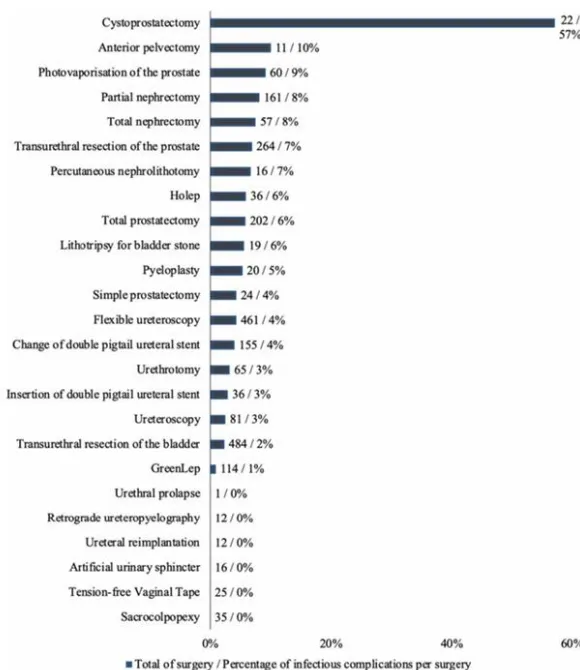
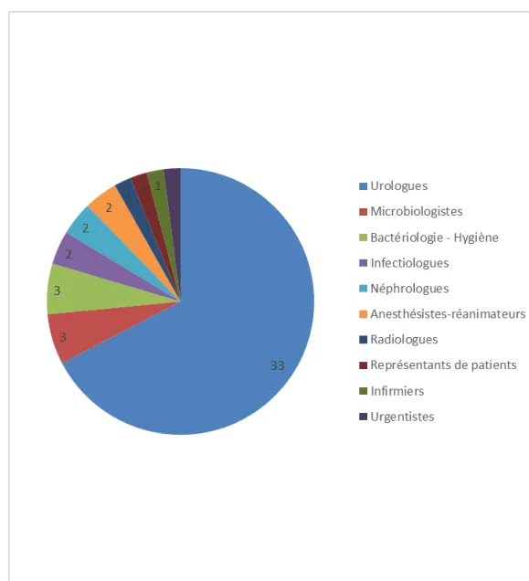

Société Française de Microbiologie


Comité des Pratiques Professionnelles de l'AFU (CPP-AFU)
Comité d'Infectiologie de l'AFU (CIAFU)
Place de l'ECBU avant une prise en charge urologique chirurgicale ou interventionnelle chez l'adulte et modalités de traitement en cas de colonisation
Argumentaire – janvier 2026
Version validée
ECBU avant une prise en charge urologique interventionnelle ou chirurgicale
Argumentaire
LISTE DES ABRÉVIATIONS
| AE | Accord d'experts |
| BA | Bactériurie asymptomatique |
| BCG | Bacille de Calmette et Guérin |
| BLSE | Bêtalactamases à spectre élargi |
| CIAFU | Comité d'infectiologie de l'Association Française d'Urologie |
| CNPU | Conseil National Professionnel d'Urologie |
| ECBU | Examen Cytobactériologique des Urines |
| GL | Groupe de lecture |
| GT | Groupe de travail |
| HAS | Haute Autorité de Santé |
| HBP | Hypertrophie bénigne de la prostate |
| HTA | Hypertension artérielle |
| IMC | Indice de masse corporelle |
| ISO | Infection du site opératoire |
| IU | Infections Urinaires |
| IUAS | Infections Urinaires Associées aux Soins |
| LEC | Lithotripsie extra-corporelle |
| LEP | Laser enucleation of the prostate |
| NGS | « Next Generation Sequencing » |
| NLPC | Néphrolithotomie percutanée |
| NP | Niveau de preuve |
| PCR | « Polymerase Chain Reaction » |
| PVP | Photovaporisation de la prostate |
| RAAC | Récupération Améliorée Après Chirurgie |
| RBP | Recommandations de Bonnes Pratiques |
| RCF | Recommandations par Consensus Formalisé |
| RTUP | Résection transurétrale de la prostate |
| RTUV | Résection transurétrale de vessie |
| SIRS | « Systemic Inflammatory Response Syndrome » |
| SNCUF | Syndicat National des Chirurgiens Urologues Français |
| SOFA score | « Sequential Organ Failure Assessment » score |
| SS | Société savante |
| TAVI | « Transcatheter Aortic Valve Implantation » |
| TOCUS | “To treat or not to treat Colonization prior to Urologic Surgery” |
| TVNIM | Tumeurs de vessie non infiltrantes le muscle |
| UFC | Unité formant colonie |
| URSS | Urétéroscopie souple |
| UTI | « Urinary tract infection » |
| 1 | Introduction ..... | 6 |
| 1.1 | Synthèse des objectifs de cette expertise ..... | 6 |
| 1.2 | Les acteurs de cette expertise ..... | 7 |
| ▶ | Promoteur ..... | 7 |
| ▶ | Autres sociétés savantes ou agences impliquées dans le groupe de travail (GT) ou le groupe de lecture (GL)..... | 7 |
| ▶ | Associations de patients ..... | 7 |
| 1.3 | Présentation du thème ..... | 8 |
| ▶ | Saisine ..... | 8 |
| ▶ | Contexte épidémiologique..... | 8 |
| ▶ | Etat des lieux sur les pratiques et l'organisation de la prise en charge ..... | 9 |
| ▶ | Enjeux / justification du projet..... | 11 |
| ▶ | Cibles..... | 11 |
| ▶ | Objectifs..... | 11 |
| 1.4 | Méthode de mise en œuvre ..... | 14 |
| ▶ | Etapes et calendrier prévisionnel ..... | 14 |
| ▶ | Recherche bibliographique ..... | 16 |
| ▶ | Sélection bibliographique ..... | 16 |
| ▶ | Construction de l'argumentaire ..... | 17 |
| ▶ | Composition qualitative des groupes (pilotage / cotation/ lecture) ..... | 18 |
| ▶ | Relecture nationale ..... | 19 |
| 1.5 | Productions prévues ..... | 19 |
| 1.6 | Mesures d'impact envisagées..... | 20 |
| 1.7 | Plan d'actions..... | 20 |
| 1.8 | Actualisation des recommandations ..... | 20 |
| 2 | Argumentaire..... | 22 |
| 2.1 | Q1. Quelle est la place de l'ECBU dans le diagnostic d'une colonisation urinaire avant une prise en charge urologique interventionnelle ou chirurgicale chez l'adulte ?..... | 22 |
| ▶ | Synthèse des recommandations existantes ..... | 24 |
| ▶ | Synthèse des revues systématiques et méta-analyses ..... | 29 |
| ▶ | Synthèse des études originales ..... | 31 |
| ▶ | Conclusions du groupe de travail d'après les données de la littérature ..... | 54 |
| ▶ | Discussion du groupe de travail (lien entre conclusions factuelles et recommandations)..... | 58 |
| ▶ | Recommandations du groupe de travail..... | 59 |
| ▶ | Etudes à promouvoir ..... | 61 |
| 2.2 | Q2. Quelles sont les méthodes de dépistage d'une colonisation urinaire en préopératoire (ECBU, ...) ?..... | 62 |
| ▶ | Synthèse des bonnes pratiques en microbiologie médicale du REMIC [Kouri et al. 2024] : ..... | 62 |
| ▶ | Synthèse des revues systématiques et méta-analyses ..... | 63 |
| ▶ | Synthèse des études originales ..... | 64 |
| ▶ | Conclusions du groupe de travail d'après les données de la littérature ..... | 68 |
| ▶ Discussion du groupe de travail (lien entre conclusions factuelles et recommandations)..... | 69 |
| ▶ Recommandations du groupe de travail..... | 69 |
| ▶ Etudes à promouvoir..... | 70 |
| 2.3 Q3. Quelle prise en charge du patient, en cas de positivité de l'ECBU en péri-opératoire ? ..... | 71 |
| ▶ Synthèse des recommandations existantes ..... | 71 |
| ▶ Synthèse des revues systématiques et méta-analyses ..... | 71 |
| ▶ Synthèse des études originales ..... | 71 |
| ▶ Conclusions du groupe de travail d'après les données de la littérature ..... | 76 |
| ▶ Discussion du groupe de travail (lien entre conclusions factuelles et recommandations)..... | 76 |
| ▶ Recommandations du groupe de travail..... | 77 |
| ▶ Etudes à promouvoir..... | 78 |
| ▶ Synthèse des recommandations Q1 + Q3 (présentation par organe)..... | 79 |
| ▶ Synthèse des recommandations Q1 + Q3 (présentation en fonction de l'indication ou non de l'ECBU)..... | 81 |
| 3 Cotations : résultats..... | 83 |
| 3.1. Premier tour de cotation..... | 83 |
| Tableau 10: Résultat du 1er tour de cotation ..... | 85 |
| 3.2. Deuxième tour de cotation ..... | 90 |
| Tableau 11: Résultat du 2nd tour de cotation ..... | 91 |
| 4 Relecture nationale et francophone : synthèse ..... | 95 |
| 4.1 Commentaires par question clinique issus de la relecture nationale et réponses apportées par le groupe de travail ..... | 96 |
| ▶ Q1. Quelle est la place de l'ECBU dans le diagnostic d'une colonisation urinaire avant une prise en charge urologique interventionnelle ou chirurgicale chez l'adulte ? | 97 |
| ▶ Q2. Quelles sont les méthodes de dépistage d'une colonisation urinaire en préopératoire (ECBU, ...) ? ..... | 108 |
| ▶ Q3. Quelle prise en charge du patient, en cas de positivité de l'ECBU en péri-opératoire ? ..... | 113 |
| 4.2 Evaluation selon la grille AGREE-II ..... | 120 |
| 5 Annexes ..... | 129 |
| Annexe 1 : Groupe de travail et groupe de lecture..... | 129 |
| ▶ Groupe de pilotage ..... | 129 |
| ▶ Groupe de travail ..... | 129 |
| ▶ Groupe de lecture ..... | 129 |
| Annexe 2 : Recherche bibliographique (cf. Excel « sélection bibliographique -> onglets : 1 onglet / type d'étude) ..... | 131 |
| ▶ Recommandations -> 14 articles retrouvés ..... | 132 |
| ▶ SM/MA après exclusion des doublons dans guidelines -> 26 articles retrouvés .. | 133 |
| ▶ Etudes prospectives randomisées ou non après exclusion des doublons dans guidelines et SM/MA -> 89 articles retrouvés ..... | 134 |
| ▶ Etudes comparatives, essais cliniques non contrôlés après exclusion des doublons dans études prospectives randomisées ou non, guidelines et SM/MA -> 49 articles retrouvés ..... | 135 |
ECBU avant une prise en charge urologique interventionnelle ou chirurgicale
Argumentaire
| ▶ Études observationnelles (Études de cohortes) après exclusion des doublons dans études comparatives, essais cliniques non contrôlés ; études prospectives randomisées ou non ; guidelines et SM/MA -> 145 articles retrouvés..... | 136 |
| ▶ Autres après exclusion des doublons dans études observationnelles (Études de cohortes) ; études comparatives, essais cliniques non contrôlés ; études prospectives randomisées ou non ; guidelines et SM/MA -> 121 articles retrouvés..... | 138 |
| Annexe 3 : Grilles d'analyse critique des études ..... | 139 |
| Annexe 4 : Niveaux de preuve des conclusions et gradation des recommandations ..... | 143 |
| Annexe 5. Grille AGREE-II ..... | 144 |
| Références bibliographiques ..... | 145 |
Cette expertise doit permettre :
Ce travail doit permettre :
Ce travail s'intègre dans les travaux du comité d'infectiologie de l'Association Française d'Urologie (CIAFU).
Le comité est en charge des travaux de l'AFU sur l'infectiologie urologique. Le groupe est constitué d'urologues, de microbiologistes, d'infectiologues et de médecins généralistes/urgentistes. Le comité se réunit 4 fois par an et participe à des conférences téléphoniques régulières en fonction de l'actualité.
Il s'agit d'une auto-saisine du CIAFU pour l'élaboration de ses recommandations de bonne pratique, en partenariat avec la Société de Pathologie Infectieuse de Langue Française (SPILF). Cette recommandation porte sur la place de l'examen cytobactériologique des urines (ECBU) avant une prise en charge urologique chirurgicale ou interventionnelle chez l'adulte (indications, techniques) et sur la prise en charge du patient en cas de positivité de l'ECBU. Plusieurs constats justifient ce projet :
L'infection urinaire est la deuxième infection communautaire la plus fréquente après les infections des voies respiratoires. C'est la première cause d'infection liée aux soins en milieu hospitalier (notamment en post-opératoire [SFM-SPILF-HAS 2023]). Son incidence est parfois augmentée en cas de portage de bactéries dans l'urine. D'après les études PEP (Pan European Prevalence) de 2003 et PEAP (Pan EuroAsian Prev) de 2004, la prévalence des colonisations ou infections urinaires aiguës était de 11% [Bjerklund Johansen et al. 2007]. Une colonisation urinaire était présente dans 29% des cas, une cystite dans 26% des cas, une pyélonéphrite dans 21% des cas et un urosepsis dans 12% des cas [Bjerklund Johansen et al. 2007]. Dans la population des patients urologiques, les infections urinaires associées aux soins se transforment en urosepsis dans près de 25% des cas (âge moyen : ans ; ratio femme/homme : 3:7) [Tandoğlu et al. 2016].
Une colonisation urinaire ou bactériurie asymptomatique (femme enceinte) est définie par la présence d'une bactériurie sans manifestation clinique associée qui pourrait faire évoquer une infection urinaire telle que la fièvre ou des brûlures en urinant. A ce jour, il n'existe pas de seuil validé de bactériurie sauf en cas de grossesse ( cfu/mL) [Caron et al. 2018]. En l'absence de signes d'infection urinaire, une colonisation urinaire est fréquente ; elle correspond à une colonisation communautaire [Hermanides et al. 2008]. On estime qu'une
colonisation urinaire survient chez 1 à 5% des femmes pré-ménopausées en bonne santé et chez 2-10% des femmes enceintes. Chez les patients âgés de plus de 70 ans par ailleurs en bonne santé, cette proportion passe à 11 à 16% chez les femmes et à 4 à 19% chez les hommes. Chez les patients diabétiques, la colonisation urinaire survient chez 9 à 27% des femmes et chez 0,7 à 11% des hommes ; elle est relativement élevée chez les blessés médullaires (23-89%) [Nicolle et al. 2005]. La prévalence de la colonisation urinaire chez les personnes portant une sonde urinaire à demeure depuis plus de 3 mois est proche de 100% [Kouri et al. 2024].
Les infections urinaires (cystite, pyélonéphrite, prostatite, épididymite)1 se définissent par l'association de symptômes/signes cliniques, voire morphologiques, associés à un critère bactériologique. Les signes cliniques varient avec l'âge, le sexe des patients, la présence d'un sondage urinaire et sa durée, la localisation anatomique et la sévérité de l'infection [Caron et al. 2018]. L'infection urinaire est une complication potentiellement grave. D'après l'étude GPIU2, sur un total de 702 hommes inclus dans 84 centres participant dans le monde entier, l'incidence d'une infection urinaire symptomatique était de 5%, celle d'une infection urinaire fébrile était de 3,5%, et 3% ont dû être hospitalisés [Wagenlehner et al. 2016]. De plus, en Europe, on observe une augmentation de l'incidence des infections urinaires secondaires à des bactéries multi ou hautement résistantes [Cassini et al. 2019]. Les entérobactériales sont les principales pourvoyeuses d'infections urinaires. Escherichia coli est de loin la première bactérie responsable d'infection urinaire ; elle est retrouvée dans 70-95% des cas d'infections communautaires et 30-50% des cas d'infections acquises en milieu de soins [SFM-SPILF-HAS 2023]. En France3, le taux d'Escherichia coli résistants aux céphalosporines de 3ème génération était de l'ordre de 8,4% en 2022. Or l'émergence de souches résistantes est en grande partie liée à l'utilisation non justifiée ou inappropriée des antibiotiques [SFM-SPILF-HAS 2023].
Le nombre d'ECBU réalisés chaque année en France est en constante augmentation puisque, même chez un patient asymptomatique, un ECBU est souvent prescrit sans justification argumentée. En France, près de 7 à 9 millions4 d'ECBU sont réalisés chaque année, ce qui en fait l'examen le plus prescrit et représente un coût de 180 millions d'euros par an pour la sécurité sociale. En 2021, 601 472 interventions urologiques ont été recensées en France5.
2 GPIU est une étude de prévalence annuelle menée dans le monde entier pour recenser les infections chez les patients urologiques sur une base annuelle depuis 2003 : https://uroweb.org/news/new-gpiu-study-dates-for-2022
3 Surveillance Atlas of Infectious Diseases. Accessed August 5, 2023. https://atlas.ecdc.europa.eu/public/index.aspx
4 https://www.laviedulabo.fr/savez-vous-tout-a-propos-de-lecbu/
5 https://www.scansante.fr/applications/action-gdr-chirurgie-ambulatoire-spec
D'après une étude de cohorte rétrospective multicentrique française, il n'y avait pas de relation entre l'ECBU préopératoire et le risque d'infection urinaire fébrile post-opératoire ou d'infection du site chirurgical en cas de néphrectomie partielle ou totale [Ayoub et al. 2024]. Ces données suggèrent que le dépistage et le traitement antibiotique probabiliste d'une colonisation urinaire ne semblent pas nécessaires pour prévenir les infections urinaires post-opératoires et/ou du site opératoire dans cette indication [Ayoub et al. 2024].
D'après une revue systématique conduite par le comité d'infectiologie de l'AFU (CIAFU), le risque infectieux chez un patient non porteur de matériel avec un ECBU préopératoire polymicrobien semble faible [Vallée et al. 2019]. En revanche, en chirurgie endo-urologique chez un patient porteur de matériel, le risque d'infection post-opératoire est évalué entre 8 à 11% selon le type d'intervention. Considérer un ECBU comme stérile dans cette situation d'ECBU polymicrobien conduirait à négliger un risque majeur d'infection post-opératoire et ce même en cas de prescription d'une antibioprophylaxie peropératoire [Vallée et al. 2019].
D'après une analyse des données de l'étude mondiale de prévalence des infections en urologie pour la période 2005-2010 qui vise à décrire l'utilisation de l'antibioprophylaxie pour les interventions urologiques, lorsqu'un ECBU est réalisé en période préopératoire, une prescription d'antibiotique est le plus souvent réalisée [Çek et al. 2013]. En effet, le traitement de la colonisation urinaire, définie comme une ECBU positive chez un patient ne présentant aucun symptôme, est controversé ; l'antibioprophylaxie ne semble pas toujours conforme aux recommandations européennes. Il existe des différences significatives entre les pays/régions et les types d'hôpitaux, à la fois dans l'utilisation de l'antibioprophylaxie pour les interventions dites « propres » et dans les types d'antibiotiques utilisés [Çek et al. 2013]. Il semble que le respect des recommandations puissent réduire la consommation antibiotique, néanmoins cette étude n'avait pas confirmé de réduction du risque infectieux.
D'après une analyse des données issues d'un registre (TOCUS6) incluant tous les patients ayant eu une chirurgie urologique dans 10 hôpitaux français entre le 1er janvier 2016 et le 1er avril 2023, l'efficacité d'un traitement antibiotique probabiliste systématique en cas d'ECBU préopératoire positif n'a pas été établie de manière formelle. Cela tend à confirmer que le dépistage et le traitement de la colonisation urinaire avant chirurgie urologique n'est probablement pas pertinent pour toutes les interventions d'urologie [Kutchukian et al. 2024]. Le recours à une antibiothérapie probabiliste, parfois des antibiotiques à large spectre, concourt à l'augmentation de l'antibiorésistance [Cek et al. 2014]. Les études GPIU 2003-2010 ont révélé des taux élevés de résistance à la ciprofloxacine (>50%), aux céphalosporines (35-50%) et aux pénicillines (50%) [Cek et al. 2014]. De plus, l'utilisation excessive d'antibiotiques serait associée à une augmentation du taux de complications infectieuses post-opératoires voire à des modifications histologiques (état pré-cancéreux) [Cai et al. 2012] [Wullt et al. 2019] [Herr and Donat 2019] [Bourgi et al. 2025a].
Au niveau mondial, l'antibioprophylaxie systématique pour toutes les interventions urologiques était la plus élevée en Asie, en Afrique et en Amérique latine (86%, 85% et 84%, respectivement), suivie de l'Europe (67%) [Wagenlehner et al. 2016].
6 "To treat Or not to treat a Colonization prior to Urologic Surgery."
Ces recommandations s'adressent à tout professionnel de santé amené à réaliser ou à poser l'indication d'un ECBU avant une prise en charge interventionnelle ou chirurgicale urologique chez l'adulte : les urologues, les microbiologistes, les infectiologues, les anesthésistes-réanimateurs, les hygiénistes, les médecins spécialistes en médecine générale, les radiologues, les biologistes... ainsi qu'aux soignants, aidants et paramédicaux (infirmières, ...).
Ces recommandations concernent l'ensemble des personnes adultes (hommes ou femmes) susceptibles de bénéficier d'une prise en charge urologique, interventionnelle ou chirurgicale.
Q1. Quelle est la place de l'ECBU (indication, délai de réalisation, ...) dans le diagnostic d'une colonisation urinaire avant une prise en charge urologique interventionnelle (ex : cystoscopie) ou chirurgicale (ex : cystectomie) chez l'adulte en fonction du type d'intervention et des facteurs de risque (homme/femme, âge, obésité, diabète, durée de pose de stent, prothèse valvulaire cardiaque y compris TAVI, immunosuppression, type de calculs, type d'intervention ...)
ECBU avant une prise en charge urologique interventionnelle ou chirurgicale
Argumentaire
Q2. Quelles sont les méthodes de dépistage d'une colonisation urinaire en préopératoire (ECBU, ...) ? Comparaison ECBU à d'autres techniques ; Recueil des urines, conditions de conservation et de transport des urines, interprétation en fonction de la présence ou non d'une sonde, de symptômes (lesquels ?), de la leucocyturie (seuil ?) et de la bactériurie (seuil ?) ; Seuil selon les bactéries, leur interprétation ; ECBU mono, bi ou polymicrobien ; Gestion ciblée / bactérie ; Patient porteur de matériel ou non.
Q3. Quelle prise en charge du patient, en cas de positivité de l'ECBU en péri-opératoire ?
TABLEAU 1 : LES QUESTIONS « PICO »
| Population | Intervention | Intervention Comparée | Outcomes (critère de jugement) |
|---|---|---|---|
| Q1. Quelle est la place de l'ECBU (indication, délai de réalisation, ...) dans le diagnostic d'une colonisation urinaire avant une prise en charge interventionnelle (ex : cystoscopie) ou chirurgicale (ex : cystectomie) chez l'adulte en fonction du type d'intervention et des facteurs de risque | |||
| Patients candidats à toute prise en charge urologique interventionnelle ou chirurgicale Facteurs de risque (homme/femme, âge, obésité, diabète, durée de pose de stent, prothèse valvulaire cardiaque y compris TAVI, immunosuppression, type de calculs, type d'intervention ... ?) |
ECBU | Symptômes cliniques / Bandelettes urinaires / Marqueurs biologiques de l'inflammation (CRP, VS) / autres (-1-microglobuline urinaire, PSA, fraction 5 des LDH urinaires, procalcitonine) / Imagerie : écho, scanner / Cytométrie de flux, ... |
Performances diagnostiques |
| Q2. Quelles sont les méthodes de dépistage d'une colonisation urinaire en préopératoire (ECBU, ...) ? | |||
| idem | idem | NA | idem |
| Q3. Quelle prise en charge du patient, en cas de positivité de l'ECBU en péri-opératoire ? | |||
| Patients avec ECBU en préopératoire positif | Antibiotiques | Pas d'antibiotiques | Taux d'infection en post-opératoire Type de bactérie retrouvée, concordance avec l'ECBU en préopératoire... |
Interventions / chirurgies urologiques considérées
1. Prostate
2. Vessie
3. Rein
4. Organes génitaux de l'homme
5. Chirurgie endo-urologique du tractus urinaire
Questions non retenues
Les questions qui ne sont pas à traiter dans le cadre de cette expertise sont les suivantes :
ECBU avant une prise en charge urologique interventionnelle ou chirurgicale
Argumentaire
La méthode d'élaboration des recommandations « Recommandations par consensus formalisé » (RCF) proposée par la HAS7 a été retenue en raison :
La méthode RCF est à la fois une méthode de recommandations et une méthode de choix dans ces circonstances.
En tant que méthode de consensus, son objectif est de « formaliser le degré d'accord entre experts en identifiant et en sélectionnant, par une cotation itérative avec retour d'information, les points de convergence, sur lesquels sont fondées secondairement les recommandations, et les points de divergence ou d'indécision entre experts, en vue d'apporter aux professionnels et aux patients une aide pour décider des soins les plus appropriés dans des circonstances cliniques données ».
En tant que méthode de recommandations de bonne pratique, son objectif est de rédiger des recommandations concises, non ambiguës, répondant aux questions posées.
Le calendrier (cf. Tableau 2) est indiqué à titre prévisionnel lors du cadrage du projet. Il sera ajusté en tenant compte, en particulier des disponibilités effectives des membres du groupe de travail et du nombre d'articles à analyser qui seront retenus à l'issue de la stratégie bibliographique. L'objectif est de finaliser ce travail pour la fin d'année 2025 avec à la clé, une publication dans la revue « the French Journal of Urology » ou dans une revue internationale.
La réunion du groupe de pilotage du 05/05/2025 a permis la discussion de la note de cadrage, la définition des sous-groupes par question clinique et l'affectation des membres ainsi que des responsables (ou coordonnateurs) de chaque sous-groupe, composant le groupe de pilotage.
Le calendrier a été proposé aux membres du groupe de pilotage qui l'ont validé.
7
ECBU avant une prise en charge urologique interventionnelle ou chirurgicale
Argumentaire
TABLEAU 2. ETAPES ET CALENDRIER DU PROJET
| Etapes | Livrables | Dates |
|---|---|---|
| Réunion de cadrage Identification du besoin et initiation du projet |
Note de cadrage validée par le groupe de pilotage Validation de la méthode de travail, de la constitution de l'expertise, des questions cliniques, du plan de l'argumentaire, de la stratégie bibliographique, du calendrier du projet ; communication sur le rôle des participants |
Novembre 2024 |
| Constitution de l'expertise | Sollicitation des sociétés savantes et associations de patients -> Groupe de travail pluridisciplinaire | Mars 2025 |
| Recherche et sélection bibliographiques | Groupe de pilotage -> Corpus documentaire validé : fichier Excel de sélection des données, attribution / évaluateur | Avril 2025 |
| Réunion du groupe de pilotage | Groupe de pilotage -> Validation de la sélection bibliographique ; présence requise de tous les membres du groupe de pilotage | 5 mai 2025 |
| Analyse des études dans tableau Excel | Groupe de pilotage -> | 25 juin 2025 |
| Construction de l'argumentaire | Groupe de pilotage -> V1 de l'argumentaire Tout le long de l'analyse, prévoir des visioconférences de 2h / question |
Fin juillet 2025 |
| Visio pilotage | redaction des conclusions + recommandations | 18/07 (10h- 12h) 01/08 (16h – 18h) 03/09 (16h-18h) 04/09 (15h-17h) 08/09 (16h30-17h30) 15/09 (20h-22h) |
| 1er tour de cotation | Groupe de cotation | 16 au 25 septembre 2025 |
| Visio pilotage | Discussion des retours de la cotation 1 | 29 septembre ? |
| Réunion 1 plénière (groupe de pilotage + groupe de cotation) | Finalisation des recommandations | 1/10/2025 (10h – 17h) |
| 2nd tour de cotation | Groupe de cotation | -> 13/10/2025 |
| Synthèse des retours du 2nd tour de cotation et finalisation avec le pilotage | Retours colligés | -> 16/10/2025 |
| Relecture nationale | Envoi et commentaires colligés | Du 17/10/2025 au 03/11/2025 |
| Réunion 2 plénière (groupe de pilotage + groupe de cotation) | Intégration des retours de la relecture nationale, finalisation | 17/11/2025 (10h – 17h) |
| Publication – Diffusion | Communications orales Articles |
4ème trimestre 2025 |
La recherche documentaire repose sur une revue systématique des données disponibles pour chacune des questions sélectionnées.
Une attention particulière est accordée au recensement des recommandations ou textes réglementaires dans le domaine au niveau national et international.
Dans un premier temps seront recherchées sur les sites internet des organismes internationaux (EAU, AUA, ...) et sur PubMed®
Les équations de recherche explicitent (cf. Annexe 2 : Recherche bibliographique (cf. Excel « sélection bibliographique -> 6 onglets : 1 onglet / type d'étude) :
Croisement des 3 modules (“surgery” OR “urologic surgical procedures”) AND préopératoire AND (“diagnosis” OR Prophylaxis / “urinary tract infection” OR “UTI” OR “Bacteriuria” OR “Urine culture” OR “Surgical-site infection” OR “Bacterial Infections” OR “Cyto-bacteriological examination of urine” OR CBEU OR healthcare-associated urogenital infections (HAUTI)
Cette recherche est complétée par des recherches ciblées par type d'intervention urologique (cystoscopie ; cystectomie ; ...).
Les membres du groupe de travail complètent le corpus documentaire par les études qui seraient notamment non indexées sur Medline® à la date de la conduite de la recherche bibliographique.
Les critères d'inclusion et d'exclusion des études seront définis a priori puis affinés avec le groupe de travail lors de la première réunion.
Dans un premier temps, seules les études de haut niveau de preuve sont retenues (synthèses méthodiques ou méta-analyses et essais randomisés). Cette évaluation s'effectue :
ECBU avant une prise en charge urologique interventionnelle ou chirurgicale
Argumentaire
En cas d'identification d'une synthèse méthodique de qualité, les études qui y sont identifiées ne seront pas à nouveau retenues dans le cadre de cette expertise, afin d'éviter la duplication des efforts et de permettre une analyse critique détaillée de l'ensemble des études retenues.
Dans un second temps, les études originales sont retenues sur la base des critères de sélection après lecture des abstracts.
Sont retenues les études évaluant : Les patients adultes recevant des soins interventionnels ou chirurgicaux urologiques, sans limite d'âge.
Sont exclues les études sur la base des critères suivants :
La qualité méthodologique des études est analysée selon des grilles. Cette analyse méthodologique des études complétée par l'analyse de la pertinence clinique permet d'aboutir à l'attribution de niveaux de preuve aux conclusions des données factuelles de la littérature.
Le niveau de preuve correspond à la cotation des données de la littérature sur lesquelles reposent les recommandations qui seront formulées. Il est fonction du type et de la qualité des études disponibles (niveau de preuve des études individuelles), ainsi que de la cohérence ou non de leurs résultats. Il est spécifié pour chacune des méthodes/interventions considérées (cf. Annexe 4 : Niveaux de preuve des conclusions et gradation des recommandations).
Les recommandations sont élaborées sur la base de ces conclusions accompagnées du jugement argumenté des membres du groupe de travail; 3 formulations sont proposées :
La force de la recommandation (Grade A, B, C ou accord d'experts) est déterminée en fonction de quatre facteurs clés et validée par les experts après un vote, sur la base de :
Si les experts ne disposent pas d'études traitant précisément du sujet, ou si aucune donnée sur les critères principaux n'existe, le grade de la recommandation s'appuyant sur l'avis d'experts est indiqué selon le nouveau guide de la HAS : « En l'absence de preuve scientifique, une proposition de recommandation figurera dans le texte des recommandations soumis à l'avis du groupe de lecture si elle obtient l'approbation d'au moins 80% des membres du groupe de travail. Cette approbation sera idéalement obtenue à l'aide d'un système de vote électronique (à défaut, par vote à main levée) et constituera un « accord d'experts ». Si la totalité des membres du groupe de travail approuve une proposition de recommandation sans nécessité de conduire un vote, cela sera explicité dans l'argumentaire scientifique. »
Le groupe de travail8 est composé d'experts professionnels multidisciplinaires. Il intègre des représentants de l'Association Française d'Urologie (AFU) et des sociétés savantes impliquées dans le thème des travaux ainsi que des représentants d'associations de patients ou d'usagers. L'équilibre des modes d'exercice et la répartition géographique doit être respecté. Le groupe de travail est constitué de :
8 Les réunions du groupe de travail sont prévues à la Maison de l'Urologie (MUR) – 11 rue Viète – Paris XVIIe. L'AFU met aussi à disposition des experts une plateforme de visio conférence.
et de 5 chargés de projets pour l'analyse de la littérature :
La composition du groupe de lecture est similaire à celle du groupe de travail mais avec un plus grand nombre de relecteurs sollicités.
L'étape de la relecture nationale vise à :
L'ensemble des partenaires est informé en amont de la démarche ainsi initiée. Ils seront à nouveau consultés lors de la relecture nationale.
Le document présentant les recommandations est soumis pour avis auprès d'un groupe de professionnels représentatif des spécialités médicales impliquées dans la prise en charge des soins urologiques, du mode d'exercice et des répartitions géographiques. Ces professionnels sont identifiés, après sollicitations des sociétés savantes, avec l'appui de l'AFU et du CIAFU impliqués dans le projet.
Le groupe de lecture donne un avis formalisé sur le fond et la forme de la version initiale des recommandations, en particulier sur son applicabilité, son acceptabilité et sa lisibilité. Les membres rendent un avis consultatif, à titre individuel et ne sont pas réunis.
Ce groupe comprend 30 à 50 personnes concernées par le thème, expertes ou non du sujet. Il permet d'élargir l'éventail des participants au travail en y associant des représentants des spécialités médicales, des professions non médicales ou de la société civile non présents dans les groupes de pilotage et de travail.
Aucune des personnes consultées par le groupe de pilotage, ni celles participant au groupe de pilotage et au groupe de travail, ne fait partie du groupe de lecture.
Dans le cadre de la relecture nationale, les grilles de cotation seront adressées sous format électronique via le logiciel Survey Monkey®.
L'ensemble des commentaires colligés est revu avec les membres du groupe de travail ; ces commentaires permettent la finalisation du document avant sa validation finale puis diffusion.
La conduite d'enquêtes de pratiques via le logiciel Survey Monkey® auprès des urologues, avant et après édition de ces recommandations.
Ces recommandations seront :
Ce référentiel sera actualisé tous les 5 ans ou dès que de nouvelles données pouvant entraîner un changement dans les pratiques seront identifiées. Pour ce faire, une veille bibliographique et des enquêtes de pratiques seront conduites ; les questions pour lesquelles de nouvelles données qui pourraient sembler entraîner une modification des conclusions ou une augmentation du niveau de preuve seront identifiées pour mise à jour.
La veille bibliographique mensuelle est assurée par les experts du groupe de travail permettant ainsi d'identifier les éléments de justification d'une mise à jour de ces recommandations. À l'issue du processus de veille, les questions seront retenues pour une éventuelle actualisation si la confrontation des nouvelles et des anciennes données a permis d'identifier les études susceptibles de modifier les recommandations existantes. Elles correspondent aux :
Ces études seront analysées.
À noter que les études, non susceptibles de modifier les recommandations existantes, correspondent aux :
ECBU avant une prise en charge urologique interventionnelle ou chirurgicale
Argumentaire
Les études retenues pour la question posée sont dans le Tableau 3.
Tableau 3. Q1 : études retenues pour analyse
| Type d'étude | Retrouvées sur les sites des SS ou La Cochrane | Retenues par l'algorithme « global » sur PubMed9 | Retenues par l'algorithme « cystoscopie » sur PubMed10 | Retenues par l'algorithme « cystectomie » sur PubMed11 | Suggérées par le GT |
|---|---|---|---|---|---|
| Recommandations | [Molliex et al. 2012] [SF2H 2010] [Bru et al. 2015] [Caron et al. 2018] [SFAR 2018] [Bey et al. 2021] [SFM-SPILF-HAS 2023] [Lightner et al. 2020] / AUA [EAU 2024] / EAU et sa mise |
9 47 références retenues après lecture des abstracts ; 34 références analysées après lecture du texte intégral.
10 217 réf retrouvées / 10 retenues dont 1 réf déjà retenue par le 1er algorithme Herr, H.W. 2014. Should antibiotics be given prior to outpatient cystoscopy? A plea to urologists to practice antibiotic stewardship. European urology 65(4): 839-842. doi: 10.1016/j.eururo.2013.08.054. et 3 réf exclues après lecture du texte intégral Carey, M.M., Zreik, A., Fenn, N.J., Chlosta, P.L., and Aboumarzouk, O.M. 2015. Should We Use Antibiotic Prophylaxis for Flexible Cystoscopy? A Systematic Review and Meta-Analysis. Urologia internationalis 95(3): 249-259. doi: 10.1159/000381882. Gendron, S., Sie, M., Delchet, O., Merol, J., Garcia, A., Jebbara, I., Zelmat, N., Larre, S., and Taha, F. 2025. Impact of untreated positive urine culture on urinary tract infections after cystoscopy. The French journal of urology 35(2): 102840. doi: 10.1016/j.fjurol.2024.102840. Zeng, S., Zhang, Z., Bai, Y., Sun, Y., and Xu, C. 2019. Antimicrobial agents for preventing urinary tract infections in adults undergoing cystoscopy. The Cochrane database of systematic reviews 2(2): Cd012305. doi: 10.1002/14651858.CD012305.pub2. car sur le traitement antibiotique alors que l'ECBU est non recommandé pour la cystoscopie. Au total, 6 nouvelles réf retenues et analysées.
11 41 réf retrouvées / 6 retenues dont 3 réf retenues par le 1er algorithme Haider, M., Ladurner, C., Mayr, R., Tandogdu, Z., Fritsche, H.M., Fradet, V., Compoj, E., Pycha, A., Lemire, F., Lacombe, L., Fradet, Y., Toren, P., and Lodde, M. 2019. Use and duration of antibiotic prophylaxis and the rate of urinary tract infection after radical cystectomy for bladder cancer: Results of a multicentric series. Urologic oncology 37(5): 300.e309-300.e315. doi: 10.1016/j.urolonc.2019.01.017. Kyoda, Y., Takahashi, S., Takeyama, K., Masumori, N., and Tsukamoto, T. 2010. Decrease in incidence of surgical site infections in contemporary series of patients with radical cystectomy. Journal of infection and chemotherapy : official journal of the Japan Society of Chemotherapy 16(2): 118-122. doi: 10.1007/s10156-010-0032-1. Kohada, Y., Goriki, A., Yukihiro, K., Ohara, S., and Kajiwara, M. 2019. The risk factors of urinary tract infection after transurethral resection of bladder tumors. World J Urol 37(12): 2715-2719. doi: 10.1007/s00345-019-02737-3. Au total, 3 nouvelles réf retenues sur lecture de l'abstract Calaway, A.C., Jacob, J.M., Tong, Y., Shumaker, L., Kitley, W., Boris, R.S., Cary, C., Kaimakliotis, H., Masterson, T.A., Bihrlé, R., and Koch, M.O. 2019. A Prospective Program to Reduce the Clinical Incidence of Clostridium difficile Colitis Infection after Cystectomy. J Urol 201(2): 342-349. doi: 10.1016/j.juro.2018.09.030. Parker, W.P., Tollefson, M.K., Heins, C.N., Hanson, K.T., Habermann, E.B., Zaid, H.B., Frank, I., Thompson, R.H., and Boorjian, S.A. 2016. Characterization of perioperative infection risk among patients undergoing radical cystectomy: Results from the national surgical quality improvement program. Urologic oncology 34(12): 532.e513-532.e519. doi: 10.1016/j.urolonc.2016.07.001. Rich, J.M., Garden, E.B., Arroyave, J.S., Elkun, Y., Ranti, D., Pfail, J.L., Klahr, R., Omidele, O.O., Adams-Sommer, V., Patel, G., Schaefer, S.H., Brown, C., Badani, K., Lavallee, E., Mehrazin, R., Attalla, K., Waingankar, N., Wiklund, P., and Sfakianos, J.P. 2024. Infections After Adoption of Antibigram-directed Prophylaxis and Intracorporeal Urinary Diversion for Robot-assisted Radical Cystectomy. European urology focus 10(4): 612-619. doi: 10.1016/j.euf.2023.09.013. puis exclues après lecture du texte intégral (car ECU positifs exclus).
ECBU avant une prise en charge urologique interventionnelle ou chirurgicale
Argumentaire
| à jour de 2025 [Bonkat et al. 2025] |
|||||
| Revues systématiques / Méta-analyses | [Grabe et al. 2012] [Vallée et al. 2019] |
[Chugh et al. 2020] [Cahill et al. 2025] |
|||
| Etudes prospectives | [Cai et al. 2017] [Haider et al. 2019] |
[Almallah et al. 2000] [Escandón-Vargas et al. 2015] [Chavarriaga et al. 2023] [Benseler et al. 2024] |
[Encatassamy et al. 2018] [Bourgi et al. 2025b] |
||
| Etudes comparatives | [Benson et al. 2014] [Goldberg et al. 2019] [Gao et al. 2020] |
||||
| Etudes observationnelles | [Rané et al. 2001; Rizvi et al. 2008] [Rizvi et al. 2008] [Kyoda et al. 2010] [Sohn et al. 2013] [Banks et al. 2013] [Liu et al. 2013] [Fok et al. 2013] [Martov et al. 2015] [Baten et al. 2019] [Kohada et al. 2019] [Baboudjian et al. 2020] [Liu et al. 2020] [Noble et al. 2022] [Amier et al. 2022] [Yang et al. 2022] [Ito et al. 2024] |
[Herr 2015] [Herr 2016] |
[Herr 2012a] [Herr 2012b] [Herr 2013] [Bloom et al. 2017] [Nevo et al. 2017] [Herr 2020] [Wagenius et al. 2020] [Danilovic et al. 2024] [Kutchukian et al. 2024] [Ayoub et al. 2024] [Bourgi et al. 2025a] [Labban et al. 2025] [Bruyere et al. 2025] |
||
| Autres | [ElMalik et al. 2000] [Hamasuna et al. 2004] [Sharifi Aghdas et al. 2006] [Kavoussi et al. 2017] [Han et al. 2018] [Kavoussi et al. 2018] |
| [Wang et al. 2020] | |||||
| [Lu et al. 2021] |
ECBU avant une prise en charge urologique interventionnelle ou chirurgicale
Argumentaire
ECBU avant une prise en charge urologique interventionnelle ou chirurgicale
Argumentaire
| Actes chirurgicaux ou interventionnels | Molécules | Dose initiale | Réinjections et durée | Force de la recommandation |
|---|---|---|---|---|
| Chirurgie de la prostate | ||||
| ▪ Résection trans-urétrale de prostate (RTUP) | Céfazoline | 2g IVL | 1g si durée > 4h puis toutes les 4h jusqu'à fin de chirurgie |
●●● (GRADE 1) * |
| Alternative : Céfuoxime |
1,5g IVL | 0,75g si durée > 2h puis toutes les 4h jusqu'à fin de chirurgie |
●●● (Avis d'experts) | |
| ▪ Adénomectomie chirurgicale ▪ Traitement de l'hypertrophie bénigne de la prostate par d'autres techniques : énucléation (laser holmium [HoLEP], laser thulium [ThuLEP], laser greenlight [GreenLEP], bipolaire [BiPOLEP]), pose d'implant intraprostatique (UROLIFT), thermothérapie à la vapeur d'eau (REZUM), ultrasons focalisés (HIFU) et embolisation des artères prostatiques. |
Céfazoline | 2g IVL | 1g si durée > 4h puis toutes les 4h jusqu'à fin de chirurgie |
●●● (Avis d'experts) |
| Alternative : Céfuoxime |
1,5g IVL | 0,75g si durée > 2h puis toutes les 4h jusqu'à fin de chirurgie |
||
| ▪ Prostatectomie totale | PAS D'ANTIBIOPROPHYLAXIE | ●●● (GRADE 1) | ||
| ▪ Curieothérapie ▪ Biopsies de prostate par voie trans-périnéale |
PAS D'ANTIBIOPROPHYLAXIE | ●●● (Avis d'experts) | ||
| ▪ Biopsies de prostate par voie transrectale | Fosfomycine-trométamol | 3g per os | Dose unique, au moins 2 h avant le geste |
●●● (GRADE 1) |
| Si allergie : Ciprofloxacine |
500mg per os |
Dose unique, au moins 2 h avant le geste |
●●● (GRADE 2) | |
| Chirurgie de la vessie | ||||
| ▪ Cystoscopie diagnostique ▪ Résection trans-urétrale de vessie (RTUV) |
PAS D'ANTIBIOPROPHYLAXIE | ●●● (GRADE 1) | ||
| ▪ Cure d'incontinence urinaire | PAS D'ANTIBIOPROPHYLAXIE | ●●● (GRADE 2) | ||
| ▪ Injection intra-détrusorienne de toxine botulique | PAS D'ANTIBIOPROPHYLAXIE | ●●● (Avis d'experts) | ||
| ▪ Cure de prolapsus, quelle que soit la voie d'abord, avec ou sans matériel ▪ Injection de macroplastique |
Céfazoline | 2g IVL | 1g si durée > 4h puis toutes les 4h jusqu'à fin de chirurgie |
●●● (Avis d'experts) |
| Alternative : Céfuoxime |
1,5g IVL | 0,75g si durée > 2h puis toutes les 4h jusqu'à fin de chirurgie |
||
ECBU avant une prise en charge urologique interventionnelle ou chirurgicale
Argumentaire
| ▪ Cystectomie suscrigonale partielle ou totale, quel que soit le mode de dérivation | Céfoxitine | 2 g IVL | 1g si durée > 2h puis toutes les 2h jusqu'à fin de chirurgie | ●●● (Avis d'experts) |
| Chirurgie des organes génitaux de l'homme | ||||
| ▪ Pose de prothèse pénienne ▪ Pose de prothèse testiculaire |
Céfazoline Alternative : Céfuroxime |
2g IVL 1,5g IVL |
1g si durée > 4h puis toutes les 4h jusqu'à fin de chirurgie 0,75g si durée > 2h puis toutes les 4h jusqu'à fin de chirurgie |
●●● (Avis d'experts) |
| ▪ Chirurgie scrotale ou de la verge sans prothèse | PAS D'ANTIBIOPROPHYLAXIE | ●●● (Avis d'experts) | ||
| Chirurgie des voies excrétrices | ||||
| ▪ Urétéroscopie diagnostique et/ou thérapeutique | Céfazoline Alternative : Céfuroxime |
2g IVL 1,5g IVL |
1g si durée > 4h puis toutes les 4h jusqu'à fin de chirurgie 0,75g si durée > 2h puis toutes les 4h jusqu'à fin de chirurgie |
●●● (GRADE 1) * ●●● (Avis d'experts) |
| ▪ Urétrotomie, urétroplastie ▪ Montée de sonde JJ ▪ Pose de sonde de néphrostomie ▪ Néphrolithotomie percutanée |
Céfazoline Alternative : Céfuroxime |
2g IVL 1,5g IVL |
1g si durée > 4h puis toutes les 4h jusqu'à fin de chirurgie 0,75g si durée > 2h puis toutes les 4h jusqu'à fin de chirurgie |
●●● (Avis d'experts) |
| ▪ Lithotritie extra-corporelle | PAS D'ANTIBIOPROPHYLAXIE | ●●● (GRADE 1) | ||
| Cathéter de dialyse intrapéritonéale | ||||
| ▪ Pose ou changement de cathéter de dialyse intrapéritonéale | Céfazoline Alternative : Céfuroxime |
2g IVL 1,5g IVL |
1g si durée > 4h puis toutes les 4h jusqu'à fin de chirurgie 0,75g si durée > 2h puis toutes les 4h jusqu'à fin de chirurgie |
●●● (GRADE 2)* ●●● (Avis d'experts) |
| Chirurgies du rein | ||||
| ▪ Néphrectomie totale ou partielle ▪ Surrénalectomie ▪ Embolisation des artères rénales ▪ Thermoablation de tumeur rénale |
PAS D'ANTIBIOPROPHYLAXIE | ●●● (Avis d'experts) | ||
| ▪ Transplantation rénale | Céfazoline Alternative : Céfuroxime |
2g IVL 1,5g IVL |
1g si durée > 4h puis toutes les 4h jusqu'à fin de chirurgie 0,75g si durée > 2h puis toutes les 4h jusqu'à fin de chirurgie |
●●● (Avis d'experts) |
* le GRADE 1 ou 2 s'applique au fait d'administrer une antibioprophylaxie pour les interventions concernées de chirurgie urologique. Les schémas proposés sont en revanche de niveau de preuve « avis d'experts » du fait de l'absence de suffisamment de littérature homogène pour proposer un schéma avec un meilleur niveau de preuve.
ECBU avant une prise en charge urologique interventionnelle ou chirurgicale
Argumentaire
doivent utiliser des définitions standards pour mieux évaluer le risque pour le patient. La classification des risques élaborée dépend de la probabilité de développer une infection du site opératoire et non des conséquences associées à celle-ci [Lightner et al. 2020].
Une revue systématique de la littérature a évalué le risque infectieux postopératoire chez les patients présentant un ECBU préopératoire polymicrobien [Vallée et al. 2019]. En présence d'une sonde double J ou d'une sonde vésicale, les taux d'infections post-opératoires étaient pour :
Les auteurs proposent une conduite à tenir permettant de limiter au maximum le risque infectieux lors de ces situations cliniques.
Cette revue s'appuie sur 31 articles identifiés dans 3 bases de données mais la période de recherche n'est pas identifiée. La sélection des études est effectuée par 2 évaluateurs. Les résultats sont issus probablement d'analyses en sous-groupes, soumis à interprétation (NP non applicable car revue systématique).
Le risque d'infection post-opératoire semble dépendre du type d'intervention urologique mais également d'autres facteurs endogènes et exogènes liés au patient.
D'après une revue systématique, il est proposé une classification des groupes à risque d'infections après une intervention urologique s'appuyant à la fois sur les facteurs endogènes (anormalité anatomique, dysfonction organique, une ou plusieurs comorbidités, colonisation urinaire, calculs rénaux, inflammation de la prostate, immunodépression, statut physiologique comme la grossesse et la ménopause), sur les facteurs exogènes (introduction de micro-organismes, instrumentation, cathéterisation, prothèse) et sur la complexité de l'intervention (cf. table 4 et 5) [Grabe et al. 2012]. Ainsi, parmi les chirurgies dites « propres », nous retrouvons les néphrectomies simples, la vasectomie, la chirurgie du scrotum. Parmi les chirurgies dites « contaminées », caractérisées par un risque d'infection élevé (15 - 40%), nous retrouvons le drainage d'abcès, la chirurgie traumatique, la NLPC compliquée, la chirurgie d'infection de calculs (cf. table 5 : classification des critères de classements dans les différents groupes de chirurgies (clean à dirty). Néanmoins, il est aujourd'hui admis que cette classification d'Altemeier n'est pas adaptée à la situation urologique puisque des variations importantes du taux d'infection sont démontrées entre interventions de la même classe (cf. exemple ci-après).
12 Tension free Vaginal Tape
Table 4 A surgical wound classes (based on [4, 29]) and risk of wound infection [29] and suggested ESIU classification of urological instrumentation and procedures in the different classes. The risk expressed is that of classical wound infection or SSI and not of UTI
| Category of intervention (risk of wound infection) | Description | Open or laparoscopic urological surgery (examples) | Endoscopic urological instrumentation and surgery (examples) |
|---|---|---|---|
| Clean (1–4%) | Urogenital tract not entered No evidence of inflammation No break in technique |
Simple nephrectomy Planned scrotal surgery Vasectomy |
Cystoscopy Urodynamic study TURB (minor, fulguration)* ESWL* |
| Clean-contaminated (4–10%) | Blunt trauma Urogenital tract entered with no or little (controlled) spillage No major break in technique |
Varicocele surgery Pelvio-ureteric junction repair Nephron-sparing tumour resection Total/radical prostatectomy Bladder surgery and partial cystectomy Incl. Vaginal surgery |
TURB (major, necrotic)* TURP* Diagnostic URS* Uncomplicated URS* and PCNL stone management ESWL* |
| Contaminated (10–15%) | Gastrointestinal tract entered with no or little (controlled) spillage No break in technique Spillage of gastrointestinal content Inflammatory tissue Major break in technique |
Urine diversion (orthotopic bladder replacement; ileal conduit) Urine deviation (colon) and small intestine/spillage Trauma surgery Concomitant gastrointestinal disease |
Core prostate biopsy* TURP* Impacted proximal stone management Complicated PCNL Infectious stone surgery |
| Dirty (15–40%) | Open, fresh accidental wounds Pre-existing infection Perforated viscera at surgery Old traumatic wound |
Drainage of abscess Large dirty trauma surgery |
* Detailed description in Table 5
Table 5 Tentative list of essential criteria for assessment of surgical class/surgical field contamination level of common urological procedures: The estimated risk of infectious complication is related to the surgical class or category
| Operation/category | TURB | TURP | Endoscopy stone | ESWL | Prostate biopsy |
|---|---|---|---|---|---|
| Clean | Small tumours No history UTI Sterile urine (similar cystoscopy) |
– | Uncompl distal ureteral stone Not impacted No history UTI Sterile urine No or minor obstruction No other RF |
Standard ureteral or kidney stone No history UTI Sterile urine No or mild obstruction |
– |
| Clean-contaminated | Large tumours History UTI Sterile urine |
No history UTI/UGI Sterile urine No catheter |
All other ureteral stone History UTI Sterile urine Minor/moderate obstruction No stent Other RF |
Standard ureteral or kidney stone History UTI Sterile urine Moderate obstruction Other RF |
Transperineal Sterile urine No history UTI/UGI |
| Contaminated | Large tumours Necrosis Bacteriuria controlled |
History UTI/UGI Catheter prior to surgery Bacteriuria controlled |
Proximal impacted stone History UTI Sterile urine or controlled bacteriuria Moderate obstruction Stent/catheter |
Complex stone History UTI Obstruction Bacteriuria controlled Stent or nephrostomy tube |
Transperineal Sterile urine, history UTI/UGI Transrectal No or proven history UTI/UGI Sterile urine |
| Dirty or infected | Clinical infected Emergency |
Clinical infected Emergency |
Clinical infected drainage only | Clinical infected drainage only | Transrectal Presence of catheter or bacteriuria |
* UTI urinary tract infection, UGI urogenital infection (i.e. prostatitis), RF risk factor
Table 6 Approximate rates of infectious complications after a selected number of urological instrumentations, in patients assumed free from infection within the genitourinary tract at time of the procedure and receiving no antibiotic prophylaxis
| Procedure | Bacteriuria | Febrile or symptomatic UTI | Sepsis | References |
|---|---|---|---|---|
| Cystoscopy | 1–9% | 1–5% | No data | [38–41] |
| Urodynamic studies | 13% (average; range 4–30%) | 2–3% | No data | [42] |
| Transrectal core prostate biopsy | 5–26% | 3–10% | ≤5% | [26, 37, 43–45] |
| TURB | 4–6% | No data | No data | No data |
| TURP | 6–70% | 5–10% | 0–4% | [46, 47] |
| ESWL | 0–28% | 5.7% (median probability) | 1% but limited data | [48–50] |
| Ureteroscopy (standard) | Up to 13% | No data | No data | [24, 25, 51–54] |
| Percutaneous stone extraction and difficult ureterorenoscopy | Up to 35% | 4–25% | 15% | [24, 25, 51–54] |
| Open/Lap Nephrectomy | Skin Catheter associated |
SSI ≤ 5% Higher reported |
No data | [31, 34] |
| Open/Lap/robotic total prostatectomy | Dito | SSI < 5% | No data, no RCT | [55, 56] |
| Cystectomy and bladder substitution | Dito | SSI 10–15% | Limited data | [57] |
| Scrotal surgery | Skin | SSI 3–9% | No data | [58, 59] |
| Implantation of prosthetic devices | Skin | 1–16.7% | No data | [60] |
Dans cette revue, l'hypothèse à tester n'est pas vraiment expliquée. On recherche simplement les facteurs de risques décrits dans la littérature de 2000 à 2011. Une seule base consultée (Medline) ; pas de mention du nombre d'articles retenus. La méthodologie ne semble pas très claire (NP non applicable car revue).
La voie d'abord (endoscopique vs laparoscopique) ou une colonisation urinaire ne semblent pas associés à un sur-risque d'infection urinaire post opératoire alors que les comorbidités (score de Charlson) le sont.
Une étude rétrospective comparative incluant 2201 patients a évalué l'intérêt de diagnostiquer une bactériurie symptomatique préopératoire si une antiopiophylaxie est réalisée en per-opératoire [Cai et al. 2017]. Lorsque les patients présentant une colonisation urinaire ont été comparés à ceux sans colonisation urinaire (ECBU stérile vs positif), il n'y avait pas de différence dans la fréquence des infections urinaires dans les 2 groupes (10-8%) ni sur l'écologie bactérienne/résistance. En analyse multivariée incluant un antécédent d'infection urinaire, le score de Charlson, le score ASA, le type d'intervention (endoscopie vs laparoscopique) et le type d'antiopiophylaxie, seul le score ASA (>1) était un facteur de risque de survenue d'infection urinaire post opératoire (HR=10,8 ; 95%IC [7,89-14,8] ; p=0,001).
Table 4. Univariate and multivariate analysis results of factors affecting the development risk of symptomatic UTIs in all enrolled patients
| Categories (Variables) | Univariate Analysis (P) (HR; 95% CI) | Multivariate Analysis (P) (HR; 95% CI) |
|---|---|---|
| Previous UTIs (yes or no) | (.49) (HR 0.63; 0.08-1.20) | (.38) (HR 0.77; 0.31-1.01) |
| Charlson comorbidity index (<2, ≥2) | (.77) (HR 0.99; 0.89-1.43) | (.59) (HR 1.1; 0.79-1.57) |
| ASA score (1, >1) | (.02) (HR 11.3; 6.10-13.56) | (.001) (HR 10.8; 7.89-14.8) |
| Type of procedure (endoscopy, open or laparoscopy) | (.12) (HR 0.78; 0.62-1.40) | (.18) (HR 0.80; 0.59-1.08) |
| Type of antimicrobial prophylaxis (fluoroquinolones, cotrimoxazole, others) | (.65) (HR 0.87; 0.55-1.80) | (.13) (HR 1.37; 0.93-2.02) |
Étude rétrospective sur un registre prospectif de 2008 à 2013, avec 2 groupes homogènes notamment sur le nombre de sondes double J en place, sur les antécédents d'infection urinaire, le score ASA ou sur l'antibioprophylaxie utilisée (selon recommandations de l'EAU : 58% de triméthoprime, 13% de céphalosporine et 15% fluoroquinolones). Le critère de jugement principal est assez mal défini. La définition des infections urinaires s'appuie sur celle de l'EAU avec une distinction entre infection urinaire fébrile et non fébrile. Les caractéristiques initiales des patients sont pertinentes, avec notamment l'inclusion des antibiogrammes. Les résultats sont en adéquation avec l'objectif annoncé, cependant la description de l'objectif secondaire est incohérente. La prise d'antibiothérapie préopératoire chez les patients présentant une colonisation urinaire n'a pas été analysée et les différents types d'intervention ne sont pas détaillés (65% de chirurgie endoscopique et 35% de chirurgie ouverte/coelioscopie) ; on les retrouve dans des groupes très généralistes. Cette étude présente un gros biais sur l'absence d'information sur la gestion de la bactériurie. On ne sait pas combien de temps l'ECBU a été réalisé avant l'intervention, ni si cette ECBU a été traité ; les interventions ne sont pas détaillées (NP4). -> beaucoup de biais ne permettant pas de conclure
L'ECBU préopératoire positif semble associé à plus de la moitié des cas d'infection du site opératoire après chirurgie urologique ouverte ou laparoscopique.
Lorsque les facteurs de risque d'infection du site opératoire après chirurgie urologique ouverte ou laparoscopique urologique ont été évalués chez 137 patients qui n'ont pas reçu d'antibiothérapie préopératoire mais plutôt une antibiothérapie post-opératoire par amoxicilline ou céphalosporine de 1ère ou 2nde génération pendant 3 jours, l'ECBU préopératoire positif était associé dans 55% des cas (n=11) à une infection du site opératoire [Hamasuna et al. 2004]. En effet, les infections du site opératoire ont été observées pour 20/134 patients (15%). Parmi ces infections, une bactériurie préopératoire (définie par ECBU >104 UFC/mL ou >10 leuco ou si antibiothérapie, présence de pus dans les urines ou bactéries en culture rétrospectivement) était détectée dans 55% des cas. Les autres facteurs de risque recherchés étaient l'âge, le sexe, la durée de l'opération, le volume de pertes sanguines ou de transfusion, la concentration en protéines sériques, la température corporelle la plus élevée, le volume de drainage, le jour de retrait des sutures, le type de drain, la méthode de fermeture de la peau et les antécédents médicaux.
Étude rétrospective comparative incluant une grande diversité d'interventions mais exclusions des interventions endo-urologiques, des interventions courtes et des interventions pédiatriques (NP4).
L'efficacité d'un traitement antibiotique préventif systématique reste incertaine et peut ne pas être applicable à toutes les chirurgies, ce qui suggère la nécessité de cibler le dépistage préopératoire et les stratégies préventives en fonction de l'intervention urologique.
D'après une analyse des données issues d'un registre (TOCUS13) incluant tous les patients ayant eu une chirurgie urologique dans 10 hôpitaux français entre le 1er janvier 2016 et le 1er avril 2023, un ECBU positif, mono-/bimicrobien ou polymicrobien, avant une chirurgie urologique était associée à la survenue de complications infectieuses post-opératoires.
13 "To treat Or not to treat a Colonization prior to Urologic Surgery."
Cependant, l'efficacité d'un traitement antibiotique préventif systématique en cas d'ECBU préopératoire positif n'était pas démontré pour l'ensemble des chirurgies inclus dans cette étude [Kutchukian et al. 2024]. Parmi 2389 patients inclus, 838 (35%) patients avaient un ECBU préopératoire positif (mono-/bi-/polymicrobien). Des infections post-opératoires (ISO + infections urinaires fébriles) sont survenues dans 106 cas (4,4%), dont 44 présentaient un ECBU préopératoire négatif (41%), 42 un ECBU positif (mono-/bimicrobien) (40%) et 20 cas d'ECBU polymicrobiens (19%). En analyse multivariée, une infection urinaire au cours des 12 mois précédant l'intervention chirurgicale (OR=3,43 ; 95%IC [2,07-5,66] ; ), un ECBU préopératoire mono/bimicrobien (OR=3,68 ; 95%IC [1,57-8,42] ; ), un ECBU préopératoire polymicrobien (OR=2,85 ; 95%IC [1,52-5,14] ; ) et la durée de l'intervention chirurgicale (OR=1,09 ; 95%IC [1,04-1,15] ; ) étaient des facteurs indépendants associés aux infections urinaires fébriles post-opératoires ou aux ISO.
Il s'agit d'une analyse rétrospective de données incluses prospectivement dans un registre (NP3).

| Chirurgie | Total of surgery / Percentage of infectious complications per surgery |
|---|---|
| Cystoprostatectomy | 22 / 57% |
| Anterior pelvectomy | 11 / 10% |
| Photovaporisation of the prostate | 60 / 9% |
| Partial nephrectomy | 161 / 8% |
| Total nephrectomy | 57 / 8% |
| Transurethral resection of the prostate | 264 / 7% |
| Percutaneous nephrolithotomy | 16 / 7% |
| Holep | 36 / 6% |
| Total prostatectomy | 202 / 6% |
| Lithotripsy for bladder stone | 19 / 6% |
| Pyeloplasty | 20 / 5% |
| Simple prostatectomy | 24 / 4% |
| Flexible ureteroscopy | 461 / 4% |
| Change of double pigtail ureteral stent | 155 / 4% |
| Urethrotomy | 65 / 3% |
| Insertion of double pigtail ureteral stent | 36 / 3% |
| Ureteroscopy | 81 / 3% |
| Transurethral resection of the bladder | 484 / 2% |
| GreenLep | 114 / 1% |
| Urethral prolapse | 1 / 0% |
| Retrograde ureteropyelography | 12 / 0% |
| Ureteral reimplantation | 12 / 0% |
| Artificial urinary sphincter | 16 / 0% |
| Tension-free Vaginal Tape | 25 / 0% |
| Sacrocolpopexy | 35 / 0% |
Figure 1. Occurrence of postoperative infections per surgery. -- indicates no infectious complication; Holep, holmium laser enucleation of the prostate; GreenLep, GreenLight laser enucleation of the prostate.
Le traitement d'une colonisation ou d'une culture urinaire positive ou la positivité de positivité de l'ECBU préopératoire ne réduisent pas le risque d'infection après une prostatectomie totale. Le score ASA et la durée du cathétérisme post-opératoire seraient associés à la prédiction des infections.
Dans cette étude, parmi 467 patients ayant eu une prostatectomie totale (registre national TOCUS), 30 patients ont développé des infections urinaires post-opératoires [Bourgi et al. 2025b]. En analyse multivariée, seuls le score ASA (American Society of Anesthesiologists) () et la durée du cathétérisme post-opératoire () étaient significativement associés à la survenue d'infections urinaires post-opératoires, avec une aire sous la courbe ROC de 0,789 pour la durée du cathétérisme. Un seuil de 7 jours pour la durée du cathétérisme a été identifié comme le seuil optimal pour prédire le risque d'infection. Il est à
noter que ni l'ECBU préopératoire ni l'antibioprophylaxie n'ont réduit l'incidence des infections urinaires post-opératoires.
Analyse rétrospective de cohorte prospective multicentrique avec des périodes d'inclusion variables selon les centres (NP4).
Une proportion importante de patients qui ont bénéficié d'une prostatectomie présentent des cultures urinaires positives au moment du retrait du cathéter, malgré l'administration d'antibiotiques prophylactiques de type fluoroquinolone. Des organismes potentiellement virulents sont fréquemment identifiés, et la résistance à la ciprofloxacine est fréquente. Cependant, les résultats sont favorables lorsqu'un traitement antibiotique oral ciblé est instauré.
La fréquence de survenue d'une colonisation urinaire (bactéuriurie > 1,000 UFC/ml) avant et après le retrait de la sonde urinaire post-prostatectomie totale a été évaluée dans un contexte de retrait de sonde protocolisé à J10, avec administration systématique de Ciprofloxacine 500 mg/12h la veille jusqu'à 7 jours après le retrait, et ce quelque soit l'ECBU ; le prélèvement pour l'ECBU ayant été réalisé la veille du retrait de la sonde urinaire [Banks et al. 2013]. Sous ce protocole, l'incidence des infections urinaires post-opératoires était de 2/334 (0,6%). Sur les 334 patients identifiés, 203 (61%) présentaient des cultures sans croissance bactérienne et 48 (14%) présentaient un nombre de colonies < 1,000 UFC/ml ou positive à Candida albicans et n'ont reçu aucun autre antibiotique. Les 83 patients restants (25%) avaient un ECBU positif, dont 7% étaient résistants à la Ciprofloxacine. Parmi les 83 patients avec un ECBU disponible, l'incidence des bactériuries asymptomatiques était faible (24,9% ; 95%IC [20,3-29,8]). Parmi les espèces identifiées pour ces 83 patients, 23 (27,7%) des souches isolées étaient résistantes aux fluoroquinolones ; présence principalement de Pseudomonas aeruginosa (n=16), Escherichia coli (n=14) et Staphylococcus epidermidis (n=11). Le traitement a été adapté en fonction de l'antibiogramme, et a permis une culture négative dans 16/23 des cas. Des infections sont rapportées avant le retrait du cathéter sans évaluation de l'impact d'un ECBU systématique avant ce retrait. Un passage aux urgences avant le retrait de la sonde a été rapporté pour 11/334 patients, un changement de sonde pour 5 d'entre eux, dont un patient avant un ECBU pré-changement de sonde positif à Pseudomonas spp. et traité par Triméthoprime + Sulfaméthoxazole pendant 7 jours.
Étude épidémiologique descriptive monocentrique relativement bien conduite avec un effectif assez large (334 patients) mais sans critère d'exclusion rapporté ni groupe contrôle ni analyse uni- ou multivariée. Les données sur l'écologie bactérienne sont peu extrapolables à la France (monocentrique, mesurée aux Etats-Unis en 2011). Protocole d'antibiothérapie systématique quelque soit le statut de l'ECBU avant et après le retrait de la sonde diminuant l'interprétation des données (NP4).
L'ECBU positif avant RTUP semble associé à un saignement important, d'où son intérêt avant cette intervention.
Le poids de la prostate (; ), sa taille au toucher rectal ( ; ) et la durée de l'opération ( ; ) étaient significativement associées de manière indépendante au volume total de sang perdu lors d'une prostatectomie, tel que suggéré dans une étude chez 121 patients ayant bénéficié d'une résection transurétrale de prostate [ElMalik et al. 2000]. Parmi les variables catégoriques, la plus forte corrélation était observée avec l'ECBU préopératoire (). Les autres variables considérées étaient la rétention
aigüe d'urine ou symptômes du tractus urinaire, une hématurie, une vessie calcifiée, un ECG normal ou changements, une prise de médicaments (en particulier d'antibiotiques), le type d'anesthésie, la morphologie de prostate, histologie, la transfusion sanguine, le chirurgien (4 différents).
Etude prospective non randomisée non comparative sur une période d'un an. La définition d'un ECBU positif est de UFC/mL (seuil trop élevé car les seuils sont à chez l'homme pour définir une infection). En cas d'ECBU positif, le traitement antibiotique était administré au moins 24h avant le début de la chirurgie (NP2).
A noter qu'une autre étude, néanmoins discutable, rapporte une faible incidence des infections urinaires en post-opératoire d'une RTUP. En effet, parmi 506 patients en pré RTUP, les infections urinaires en post-opératoire étaient de 2,9% (13/439) en l'absence d'antibioprophylaxie systématique (si pas de cathéter transuréthral ou sus-pubien ou de pyurie : leucocyturie ) contre 10,4% (7/67) chez les patients ayant reçu une antibioprophylaxie () [Baten et al. 2019]. Dans cette étude, la définition de l'incidence des infections post-opératoires n'est pas claire (symptômes urinaires, fièvre , ...) ; il n'y avait pas de groupe contrôle ni d'analyse uni- ou multivariée. Les données sur l'écologie bactérienne sont peu extrapolables à la France (monocentrique, mesurée aux Belgique en 2019).
Des études antérieures à notre période de recherche, identifiées dans l'argumentaire de la recommandation de l'EAU2025 (p. 64, chap 3.17) [Bonkat et al. 2025]. La littérature récente ne contredit pas la recommandation de l'EAU.
L'indication d'une culture urinaire préopératoire doit s'appuyer sur le profil du patient et sur le type d'intervention pour HBP (RTUP, énucléation endoscopique, vaporisation au laser ou seconde RTUP). Les hommes ayant bénéficié d'une énucléation endoscopique, par comparaison à une RTUP, étaient moins susceptibles de présenter une infection urinaire post-opératoire. Cependant, il n'y avait aucune différence entre la RTUP, la seconde RTUP et la vaporisation au laser en termes de risque d'infection urinaire post-opératoire.
Dans une analyse rétrospective d'une cohorte prospective d'hommes ayant été opérés d'une chirurgie endoscopique pour HBP (hyperplasie bénigne de la prostate), notamment une résection transurétrale de la prostate (RTUP), une énucléation endoscopique, une vaporisation au laser et une seconde RTUP, les patients présentant une infection urinaire post-opératoire dans les 30 jours suivant l'intervention chirurgicale ont été analysés afin d'identifier les facteurs associés à un ECBU préopératoire positif [Labban et al. 2025]. Parmi 22 825 patients, 83,5% avaient une culture urinaire préopératoire à j-30 / j-2 avant l'intervention. L'analyse ajustée n'a montré aucune association entre l'ECBU préopératoire et l'IU post-opératoire ( ; ; ). Une culture urinaire préopératoire historiquement positive au cours de l'année précédant l'intervention chirurgicale était le facteur le plus fortement associé à une IU post-opératoire ( ; ; ). Les hommes ayant bénéficié d'une LEP, par comparaison à une RTUP, étaient moins susceptibles de présenter une infection urinaire post-opératoire ( ; ; ). Cependant, il n'y avait aucune différence entre la RTUP, la re-
RTUP et la vaporisation au laser en termes de risque d'infection urinaire post-opératoire (). D'autres facteurs liés aux patients étaient associés à un risque plus élevé d'infection urinaire post-opératoire tels que l'insuffisance hépatique ( ; 95%IC [1,00-1,76] ; ) et la BPCO ( ; 95%IC [1,02-1,46], ) alors que le diabète ne l'était pas. Les facteurs associés à une culture urinaire préopératoire positive comprenaient les hommes ayant des antécédents positifs de culture urinaire préopératoire ( ; 95%IC [1,51-1,73] ; ) et ayant eu une LEP, par comparaison à la vaporisation au laser ( ; 95%IC [1,49-2,27] ; ).
Cette étude rétrospective a l'avantage d'inclure prospectivement un grand nombre de patients avec des données de vie réelle mais il existe un biais de sélection puisque les patients sont « fragiles » pour leur majorité, ce qui limite la généralisation des résultats. Bien que des données indiquent si une culture urinaire préopératoire avait été obtenue, il n'y avait pas d'information sur la positivité de cette culture ni si des antibiotiques ciblés avaient été administrés avant l'intervention chirurgicale (NP4).
Les patients avec une bactériurie préopératoire, des comorbidités accrues et ayant déjà bénéficié d'une uréthroplastie présentent un risque plus élevé de complications après une uréthroplastie.
Lorsque les facteurs de risque de complications (Clavien) dans les 3 mois suivant une uréthroplastie ont été évalués chez 1611 patients, les facteurs retenus en analyse multivariée étaient un ECBU préopératoire positif ( ; 95%IC [1,14-2,45] ; ), un antécédent d'uréthroplastie ( ; 95%IC [1,09-3,17] ; ) et un index de Charlson élevé ( ; 95%IC [1,10-1,56] ; ) [Noble et al. 2022]. Les infections urinaires représentaient 3,5% de ces complications. Tous les patients opérés ont eu une antibioprophylaxie par une C1G et un aminoside une heure avant l'intervention et jusqu'à 48h en post-opératoire. Les ECBU positifs ont été traités jusqu'à l'ablation de la sonde vésicale en post-opératoire.
Étude rétrospective monocentrique (NP4).
D'après une revue narrative (études rétrospectives) qui décrit les différents protocoles d'antibiothérapie employés dans l'uréthroplastie et dans la chirurgie de la prostate [Cahill et al. 2025], il est mis en évidence que la colonisation urinaire était systématiquement dépistée et traitée. En revanche, aucune étude n'a permis de démontrer qu'un traitement antibiotique permettait de réduire le taux de complications infectieuses ou le taux des autres complications (récidive de la sténose notamment).
A noter que les études évaluant les dilatations uréthrales ou la pose de stent de l'urètre prostatique (dont Exime® et Coreflow®) n'ont pas été pas recherchées ni analysées.
L'ECBU préopératoire positif ne serait pas associé au risque d'infection urinaire post-cystectomie pour cancer. Le traitement d'un ECBU préopératoire positif ne réduit pas le risque d'infection urinaire post-cystectomie.
L'incidence et les facteurs de risque d'infection urinaire post cystectomie pour cancer ont été rapportés chez 217 patients parmi lesquels 15,2% avaient un ECBU préopératoire positif [Haider et al. 2019]. Après chirurgie, le taux d'ECBU positif était de 19,4%, de pyélonéphrite de 9,7% et de SIRS14, de sepsis sévère et de choc septique de 9,7%. En analyse multivariée, l'ECBU préopératoire n'était pas un facteur de risque d'infection urinaire post-opératoire dans les 30 jours de la cystectomie (OR=0,935 ; 95%IC [0,339-2,577] ; p=0,897) alors que la dérivation urinaire continentale l'était (OR=5,027 ; 95%IC [2,119-11,923] ; p<0,001). L'analyse multivariée incluait le score ASA 3-4 vs 1-2 ; l'ECBU préopératoire négatif vs positif, le stade d'atteinte tumorale pT 2 vs <2, le stade d'atteinte ganglionnaire pN 1 vs 0, le grade élevé vs faible, la radiothérapie antérieure, l'utilisation de stéroïdes, la pose d'une sonde vésicale avant l'intervention, la pose d'une endoprothèse urétérale avant l'intervention, la pose d'une néphrostomie avant l'intervention, la préparation intestinale avant l'intervention, la dérivation urinaire continentale vs incontinent, le sexe, l'âge 65 vs <65, l'IMC 30 vs <30 kg/m2 et la durée de l'antibiothérapie prophylactique préopératoire 2-5 j vs 6 j vs 1 j. L'agent bactérien le plus fréquemment isolé à partir de l'ECBU le plus fréquent était l'enterococcus spp (25,7%). Même si on peut penser que la bactériurie puisse influencer sur le risque infectieux post opératoire, de nombreux autres facteurs sont plus importants tels que l'hémostase, des sutures étanches ou une intervention rapide.
Étude rétrospective, non comparative avec un échantillon de 201 patients, avec 15% d'ECBU positif qui ont été traités en préopératoire. Les objectifs sont clairement annoncés et pertinents. La classification de l'infection urinaire est réalisée selon l'EAU (NP4).
En revanche, indépendamment de la valeur de l'ECBU en préopératoire, la réduction de l'IMC en préopératoire et l'optimisation de l'antibioprophylaxie permettraient de réduire les infections du site opératoire après cystectomie.
Les facteurs prédictifs des infections du site opératoire après cystectomie ont été évalués chez 405 patients parmi lesquels 96 infections du site opératoire (23,7%) ont été rapportées dont 63,5% de prélèvements bactériologiques positifs et 16,7% de bactériologie résistante aux antibiotiques prescrits en préopératoire [Goldberg et al. 2019]. L'antibioprophylaxie préopératoire incluait Ampicilline+Gentamicine+Metronidazole ou Ceftriaxone+Metronidazole. Après analyse de l'IMC, du score de Charlson, du séjour en Soins Continus et de l'antibiothérapie en préopératoire, les facteurs retenus en analyse multivariée étaient l'IMC (OR=1,079 ; 95%IC [1,015-1,146] ; p=0,014) et l'administration de la Ceftriaxone+Metronidazole en préopératoire (OR=2,047 ; 95%IC [1,021-1,104] ; p=0,044).
Étude rétrospective comparative avec une méthodologie solide. Les résultats sont concordants avec la littérature ; opérateurs d'un seul centre mais avec des techniques opératoires parfois différentes. Le développement de la RAAC fait qu'on observe moins d'infections du site opératoire (NP4).
Staphylococcus Aureus résistant à la Methicilline semble le principal agent pathogène isolé dans les infections du site opératoire après cystectomie totale mais le faible nombre de cas (n=6) ne permet pas de généraliser. L'antibiothérapie préopératoire ne semble pas prévenir la survenue d'une infection du site opératoire en cas de SARM sur l'ECBU préopératoire.
14 Systemic Inflammatory Response Syndrome
L'incidence des infections du site opératoire après cystectomie a été évaluée chez 213 patients dont 109 patients inclus entre janvier 1996 à décembre 2003 (groupe A) et 104 patients inclus entre janvier 2004 et décembre 2007 (groupe B) [Kyoda et al. 2010]. Le SARM sur la bactériologie des infections du site opératoire était détecté dans 6 cas sur 8 au total.
Étude rétrospective comparative monocentrique. Nous notons la période de l'étude relativement large avec un risque d'évolution des techniques chirurgicales durant l'étude entraînant un risque de biais (NP4).
Une bactériurie préopératoire serait un facteur de risque d'infection post-opératoire dans les résections transurétrales de tumeur de vessie mais ce résultat reste à confirmer en analyse multivariée.
Parmi 687 patients qui ont bénéficié de résections transurétrales de tumeurs de vessie, 21 patients (3,1%) ont présenté une infection urinaire post-opératoire principalement associée à Escherichia coli (23,8%) ou P. aeruginosa (14,3%) [Kohada et al. 2019]. Une antibioprophylaxie per-opératoire par céphalosporine de 1ère génération a été administrée dans la majorité des cas (< 24h dans 85,7% des cas). L'évolution était favorable sauf pour un patient, décédé d'une péritonite sur perforation vésicale. L'infection urinaire post-opératoire est définie comme la présence d'une fièvre (> 38°C) en post-opératoire avec une bactériurie (>105 UFC/ml).
En analyse univariée, les facteurs de risque d'infection urinaire post-opératoire étaient :
Étude rétrospective monocentrique non comparative bien conduite avec effectif important et bonne définition du critère de jugement principal mais pas de groupe contrôle ni d'analyse multivariée et trop peu d'infection post-opératoire (NP4).
Les séries prospectives de l'équipe de Herr remettent en question la nécessité de réaliser un ECBU systématique avant cystoscopie et, de fait, l'intérêt de traiter une colonisation urinaire pour réduire le risque infectieux post-cystoscopie [Herr 2012b] [Herr 2013] [Herr 2015] [Herr 2016] (NP2 rétrogradé en NP3 car études monocentriques de faible effectif et de faible nombre d'évènements). Ces études suggèrent qu'un traitement antibiotique avant une cystoscopie ne semble pas nécessaire chez les patients qui ne présentent aucun signe ou symptôme clinique d'infection urinaire aiguë ou une bactériurie.
En effet, en 2012, une étude suggère que la cystoscopie est sûre chez les patients présentant une colonisation urinaire [Herr 2012b]. Après cystoscopie (n=663 dont 17% avec BA), 4 patients présentant un ECBU positif (3,5%) et 4 patients présentant avec ECBU stérile (1%) ont développé des infections urinaires fébriles (p=0,08) [Herr 2012b]. La mise à jour des
résultats de la cohorte de [Herr 2012b] de patients atteints de tumeurs de la vessie comprenait 440 patients traités par BCG thérapie (dont 30% BA) et 3180 patients ayant eu une cystoscopie de surveillance avec possible geste de fulguration (dont 22% BA). Aucun d'entre eux n'avait reçu d'antibiotique [Herr 2016]. Au total 65 patients (2%) ont développé une infection urinaire fébrile après une cystoscopie (3,4% chez les patients avec BA vs 1,7% chez les patients non colonisés ; ), tandis que 12 patients (2,7%) ont présenté une infection urinaire symptomatique pendant ou après un traitement hebdomadaire par BCG (0,8% avec BA vs 3,6% chez les patients non colonisés ; ). Toutes les infections urinaires ont été guéries après antibiothérapie ciblée. Aucun des patients ayant eu une fulguration tumorale n'a développé d'infection urinaire.
D'après une étude de cohorte prospective monocentrique chez des patients avec BA qui ont suivi un traitement ambulatoire par BCG () ou une cystoscopie de surveillance () pour TVNIM, deux patients traités par BCG (2,2%) et six patients après cystoscopie (6%) ont développé une infection urinaire fébrile () [Herr 2013]. Tous ont été guéris grâce à des antibiotiques et sans complication. Aucun patient n'avait reçu d'antibiotiques systématiques avant, pendant ou après les interventions. Aucun patient n'a été hospitalisé pour sepsis. Sur les 88 patients colonisés qui ont reçu la BCG-thérapie sans antibiothérapie préopératoire, 58 (66%) étaient toujours exempts de bactéries après un an, contre 16 des 89 patients ayant eu une cystoscopie (18% ; ).
Parmi 3108 cystoscopies flexibles en ambulatoire qui ont été réalisées chez 1110 patients chez des patients n'ayant jamais pris d'antibiotiques et atteints d'une tumeur de la vessie, 673 ECBU (22%) ont révélé une colonisation urinaire et 2435 (78%) une urine stérile [Herr 2015]. Une infection urinaire fébrile est apparue dans les 30 jours suivant la cystoscopie chez 59 patients (1,9%), dont 3,7% des patients infectés et 1,4% des patients non infectés (). Tous les cas ont été résolus en 12 à 24 heures grâce à une antibiothérapie par voie orale. Aucun patient n'a été hospitalisé pour une infection bactérienne. Dans cette série prospective, une bactériurie significative a été définie comme une concentration supérieure à UFC/ml d'un seul organisme. Les patients n'ont reçu aucun antibiotique immédiatement avant ou après la cystoscopie.
Dans la série la plus récente de Herr [Herr 2016] comptant 3180 cystoscopies, le taux de colonisation urinaire avant geste était de 22%. Dans cette série, aucun patient n'avait reçu de traitement antibiotique que cela soit en pré, en per ou en post-opératoire (sauf en cas de complications infectieuses). Seules les complications infectieuses fébriles étaient retenues comme critère de jugement principal. Au total, tous groupes confondus, le taux de complications infectieuses était de 2% (65/3180). En cas de colonisation urinaire mise en évidence avant le geste (non traité donc), le taux d'infections urinaires fébriles post-geste était de 3,4% contre 1,7% avec une différence significative (). Aucun patient n'a présenté de complications infectieuses graves (urosepsis) et la totalité des infections étaient résolues après 24h de traitement antibiotique.
Compte-tenu de l'absence de bénéfice démontré d'une antibiothérapie en cas de colonisation urinaire avant cystoscopie, du risque d'antibiorésistance, du taux faible d'infections par ailleurs sans gravité, il n'apparaît pas justifié de dépister et de traiter une colonisation urinaire avant cystoscopie.
ECBU avant une prise en charge urologique interventionnelle ou chirurgicale
Argumentaire
TABLEAU 4 : INFECTIONS URINAIRES POST-CYSTOSCOPIE EN FONCTION DE LA BACTERIURIE PREOPERATOIRE ET DE L'ANTIBIOPROPHYLAXIE
| Étude | N patients | Bactériurie traitée ? | Résultats sur les infections | Conclusion |
|---|---|---|---|---|
| Niveau de preuve (NP) | ||||
| [Herr 2012b] NP3 |
354 | Non | Après cystoscopie : 3,5% chez patients BA vs 1% en l'absence de BA : p=0,08 | Pas besoin d'ATB ni d'ECBU si BA |
| [Herr 2013] NP3 |
88 (BA) | Non | UTI: 2,2% BCG vs 6% cystocopie seule ; p=0,21 | Pas besoin d'ATB ni d'ECBU si BA |
| [Herr 2015] NP3 |
1110 | Non | Après cystoscopie : 3,7% chez patients BA vs 1,4% en l'absence de BA : p=0,01 | Pas besoin d'ATB ni d'ECBU si BA |
| [Herr 2016] MAJ de [Herr 2012b] NP3 |
3180 | Non | UTI : 3,4% chez BA vs 1,4% chez non colonisés ; p=0,004 | Pas besoin d'ATB ni d'ECBU si BA |
ATB : antibiotique ; BA :bactériurie asymptomatique ; UTI : Urinary tract infection
D'autres études confirment que l'ECBU en préopératoire n'est pas utile avant cystoscopie [Escandón-Vargas et al. 2015] [Chavarriaga et al. 2023] (NP3).
Le risque d'infection urinaire au 7ème et au 30ème jour après une cystoscopie rigide chez les patients avec un ECBU positif et un traitement antibiotique ne semble pas différer significativement du risque chez les patients avec un ECBU négatif sans antibioprophylaxie [Escandón-Vargas et al. 2015].
Une étude pilote prospective a cherché à comparer le risque d'infection urinaire (IU) après une cystoscopie rigide chez les patients asymptomatiques avec un ECBU positif et suivant un traitement antibiotique (n=13), aux patients asymptomatiques avec un ECBU négatif et ne recevant pas d'antibioprophylaxie (n=76) [Escandón-Vargas et al. 2015]. L'incidence globale des IU au 7ème ou au 30ème jour était de 4,5% (4/89) ; elle était de 15,4% en cas d'ECBU positif vs 2,6% en cas d'ECBU négatif (RR=5,85 ; 95%IC [0,90-37,92] ; p=0,04) mais l'effectif était faible et non comparable entre les 2 groupes pouvant probablement expliquer la non significativité statistique.
D'après une autre étude, chez les patients asymptomatiques, les infections urinaires après cystoscopie sont rares et peuvent être facilement traitées [Chavarriaga et al. 2023].
D'après l'analyse de deux cohortes prospectives de patients ayant eu une cystoscopie, l'une sans ECBU disponible (n=316) et l'autre incluant des patients avec ECBU stérile (n=145), le taux global d'infections urinaires symptomatiques 30 jours après la cystoscopie était respectivement de 2,5% et de 4,8%.
D'autres équipes ont évalué le risque d'infection urinaire en fonction de l'administration ou non d'une antibioprophylaxie dans un contexte de cystoscopie [Almallah et al. 2000] [Benseler et al. 2024] confirmant que l'ECBU en préopératoire n'est pas utile dans ces indications (NP3).
L'ajout d'antibioprophylaxie dans ces interventions ne semble pas nécessaire, sauf en cas d'indications spécifiques [Almallah et al. 2000].
D'après une étude de 215 patients non consécutifs qui ont reçu un questionnaire auto-administré leur demandant s'ils présentaient des symptômes du bas appareil urinaire avant et 48 heures après les cystoscopies. Sur les 201 patients analysés (103 cystoscopies), 9 patients (4,5%) ont développé une bactériurie significative dans les 48 heures après l'intervention. Seuls 2 patients présentant une bactériurie significative ont signalé l'apparition de nouveaux symptômes dans les 48 heures. Dans un sous-groupe de 25 patients ayant reçu de l'antibioprophylaxie, 6 (24%) ont signalé de nouveaux symptômes, bien qu'aucun n'ait développé de bactériurie significative. L'association entre les patients présentant une pyurie avant l'intervention (n=7) et le développement d'une croissance significative après l'intervention (n=6) était significative ().
Aucune stratégie spécifique visant à réduire l'incidence des infections urinaires après une cystoscopie en ambulatoire n'a été identifiée, mais l'antibioprophylaxie spécifique aux facteurs de risque, par opposition à l'antibioprophylaxie universelle, n'a pas augmenté l'incidence des infections urinaires.
Une étude a cherché à réduire l'incidence des infections urinaires (IU) chez les femmes bénéficiant d'une cystoscopie en ambulatoire, en identifiant puis en modifiant les facteurs de risque modifiables [Benseler et al. 2024]. Deux cycles ont été menés, au cours desquels 212 et 210 femmes ont été recrutées, respectivement. Les concepts de changement développés et mis en œuvre étaient les suivants : (1) effectuer des cultures d'urine de routine au moment de ces interventions ambulatoires, et (2) suspendre l'administration systématique d'antibiotiques prophylactiques, sauf chez les patients présentant des signes de cystite. Il n'y a pas eu de changement dans l'incidence des infections urinaires précoces (9,0% vs 9,2% ; ), mais le nombre d'effets indésirables liés aux antibiotiques signalés a considérablement diminué (8,5% vs 1,5% ; ). Il n'y a pas eu de changement significatif dans l'incidence totale des taux d'infection urinaire entre les cycles (7,8% vs 5,6% ; ).
Il ne semble pas y avoir de lien établi entre ECBU préopératoire positif et infection post-opératoire en cas de pose d'un sphincter urinaire artificiel ou d'un implant pénien. De même, le microorganisme retrouvé en cas d'infection post-opératoire diffère du microorganisme retrouvé sur l'ECBU préopératoire. Il ne semble donc pas utile de dépister une colonisation avant cette chirurgie.
La relation entre le résultat de l'ECBU préopératoire et la bactérie impliquée dans l'infection de sphincter urinaire artificiel (n=227) ou de prothèse pénienne (n=204) a été évaluée chez 422 hommes (454 dispositifs implantés) [Kavoussi et al. 2017]. Le pourcentage d'infections de prothèse (sphincter urinaire artificiel et implant pénien) chez les patients avec ECBU négatif ou avec ECBU positif traité avant l'intervention par une antibiothérapie adaptée durant une semaine, a été comparé à celui des patients dont le résultat de l'ECBU préopératoire n'a pas été obtenu à temps mais ont tout de même été opérés sans traitement antibiotique. Il n'y avait pas de différence significative entre les deux groupes ECBU négatif ou traité vs ECBU non connu (3,3% vs 4,3% ; ), et ce même en excluant les 35 patients (10%) qui ont eu un
ECBU positif mais traité. Bien que l'analyse multivariée ait montré que les patients ayant eu la pose d'un sphincter artificiel présentaient un risque 4,5 fois plus élevé d'obtenir des résultats positifs à la culture urinaire préopératoire (114/250, soit 45%) que ceux ayant eu la pose d'un implant pénien (36/204, soit 18% ; ), les taux d'infections entre les deux types de dispositifs étaient similaires (3% vs 3% ; ). Ainsi, le résultat de l'ECBU préopératoire n'était pas associé aux infections du matériel. Les pathogènes les plus communs retrouvés dans les 15 infections de prothèses étaient : Staphylococcus aureus (2), E. faecalis (1), Staphylococcus autres (1), S. agalactiae (2), B. Fragilis (1), Serratia (1), levures (4) P. aeruginosa (2), polymicrobien (1). Pour un seul cas on retrouve une infection à la même bactérie que celle retrouvée dans l'ECBU préopératoire (P. aeruginosa) ; dans 14/15 cas (93%) il existait une discordance entre l'ECBU préopératoire et la bactérie responsable de l'infection.
Étude rétrospective avec comparaison de proportion dans deux groupes + analyse multivariée pour facteurs de risque d'ECBU positif. Applicabilité sur la population masculine > 65 ans. Les groupes sont comparables sur l'âge, l'IMC, la maladie des artères coronaires, le diabète, le statut tabagique, antécédent de pose d'implant pénien mais pas sur le type de matériel implanté. Le nombre de patients était plus faible dans le groupe ECBU positif (117 vs 337). Les méthodes de mesure sont appropriées ; 8 perdus de vue. L'analyse de la bactériologie avant/après intervention est intéressante puisqu'on ne retrouve pas les mêmes microorganismes avant et après. Leur conclusion "vaste majorité des infections de prothèse ne sont pas liés à des uropathogènes mais plutôt à des bactéries de la flore cutanée" ne semble pas juste car on retrouve tout de même des bactéries de la flore digestive (Bacteroides, entérobactériales, E. faecalis), des levures (cutanée + digestive), environnementales (pseudomonas) en plus des staphylocques (NP4).
Les patients pris en charge pour la pose d'un implant pénien ou d'un sphincter urinaire artificiel (sans ECBU préopératoire disponible) présentent un taux d'infection post-opératoire faible de 1,5%.
Parmi 259 patients ayant eu une pose de prothèse (sphincter urinaire artificiel ou implant pénien) mais sans ECBU avant la chirurgie, des infections de matériel ont été retrouvées chez 4 patients (1,5%) [Kavoussi et al. 2018]. Il n'y avait pas de différence entre les groupes de prothèses. Les micro-organismes impliqués étaient : Pseudomonas aeruginosa, Streptococcus, Escherichia coli et cryptocques.
Séries de cas non comparative. Il n'est pas précisé la raison pour laquelle ces patients n'avaient pas eu d'ECBU préopératoire et s'il s'agit d'un oubli s'ils n'étaient particulièrement pas à risque de complication. Il n'y a pas de comparaison avec les cas où il y a eu un ECBU préopératoire. Il est difficile de conclure sur la similitude de ce taux de 1,5% avec celui de l'étude de 2017 (3%) étant donné qu'il n'y a pas eu de comparaisons statistiques (NP4).
Six études interrogent la nécessité de réaliser un ECBU systématique avant chaque instillation de BCG chez les patients atteints de tumeurs de vessie non infiltrantes le muscle (TVNIM). Elles adressent ainsi l'intérêt de traiter une colonisation urinaire pour réduire le risque infectieux post-BCG [Bourgi et al. 2025a] [Herr 2012a] [Herr 2012b] [Herr 2013] [Herr 2016] [Herr 2020].
D'après une première étude, il ne semble pas nécessaire de réaliser un ECBU avant l'instillation de BCG. Un traitement antibiotique en cas de d'ECBU positif pourrait exposer à un risque plus élevé de récidive.
Une étude a cherché à recueillir, chez 80 patients atteints de TVNIM, systématiquement les cultures d'urine quelques jours avant un traitement d'induction par BCG (six instillations par cycle) associés ou non à un BCG d'entretien (trois instillations par cycle) et à étudier leur impact sur le risque d'infection urinaire associée (IU) et sur le risque de récidive des tumeurs de la vessie [Bourgi et al. 2025a]. Parmi 812 cultures d'urine analysées, 88 se sont révélées positives. Parmi toutes les cultures d'urine positives, 42 n'ont pas reçu d'antibiotiques, et pourtant aucune infection urinaire fébrile n'a été détectée. Un événement infectieux grave a été signalé chez deux patients traités par antibiotiques, dont un décès, et aucun facteur de risque d'avoir un ECBU positif n'a pu être identifié. Une récidive de la tumeur de la vessie a été identifiée chez 17 patients, dont 3 avaient un ECBU positif traité par antibiotiques. En cas d'ECBU positif, le choix du traitement dépendait de l'urologue référent.
Analyse rétrospective (NP4).
Les séries prospectives de Herr confirment ces résultats (NP2 rétrogradé en NP3 car études monocentriques de faible effectif et de faible nombre d'événements).
En effet, en 2012, une étude suggère que le BCG intravésical est sûr chez les patients présentant une colonisation urinaire et que la survie sans maladie à 2 ans était similaire à celle des patients non colonisés [Herr 2012a]. Au total, parmi 243 patients atteints de TVNIM qui ont reçu un traitement d'induction par BCG intravésical indépendamment des résultats de l'ECBU et sans antibioprophylaxie, 61 patients (25%) présentaient une bactériurie significative ( ou ufc/ml d'un seul organisme). Après un suivi de 2 ans, une infection urinaire fébrile s'est développée chez 1 patient (1,6%) et 2 au total (0,8%) après l'achèvement du traitement par BCG. Aucun patient n'a été hospitalisé pour une bactériémie à mycobactérie ou bactérienne. Le taux de survie sans récidive à 2 ans était de 71% vs 73% chez les patients non colonisés (). La même année, la même équipe a rapporté, après le traitement par BCG ( dont 25% avec BA), que deux patients présentant une colonisation urinaire (2,2%) et 3 patients présentant un ECBU pré-instillation stérile (1,1%) ont développé une infection urinaire fébrile post-instillation (). Après cystoscopie ( dont 17% avec BA), 4 patients présentant un ECBU positif (3,5%) et 4 patients présentant un ECBU stérile (1%) ont développé une infection urinaire fébrile () [Herr 2012b].
L'inflammation induite par le BCG semble réduire le taux de complications infectieuses en cas de colonisation urinaire, tel que suggéré dans une étude de cohorte prospective monocentrique chez des patients avec BA qui ont suivi un traitement ambulatoire par BCG () ou une cystoscopie de surveillance () pour TVNIM [Herr 2013]. Aucun patient n'avait reçu d'antibiotiques systématiques avant, pendant ou après les interventions. Deux patients traités par BCG (2,2%) et six patients après cystoscopie (6%) ont développé une infection urinaire fébrile (). Tous ont été guéris grâce à des antibiotiques. Aucun patient n'a été hospitalisé pour sepsis. Sur les 88 patients infectés qui ont reçu le BCG sans antibiotiques de routine, 58 (66%) étaient toujours exempts de bactéries après un an, contre 16 des 89 patients ayant eu une cystoscopie (18% ; ).
Après mise à jour des résultats de la cohorte de [Herr 2012b] de patients atteints de tumeurs de la vessie, 440 patients ont eu un traitement intravesical par BCG-thérapie (dont 30% de BA) et 3180 patients d'une cystoscopie flexible (dont 22% BA), tous n'ayant jamais reçu
ECBU avant une prise en charge urologique interventionnelle ou chirurgicale
Argumentaire
d'antibiotiques [Herr 2016]. Au total 65 patients (2%) ont développé une infection urinaire fébrile après une cystoscopie (3,4% chez les patients avec BA vs 1,7% chez les patients non colonisés ; ), tandis que 12 patients (2,7%) ont présenté une infection urinaire symptomatique pendant ou après un traitement hebdomadaire par BCG (0,8% avec BA vs 3,6% chez les patients non colonisés ; ). Toutes les infections urinaires ont été guéries après antibiothérapie ciblée. Un patient présentant une colonisation urinaire a été admis à l'hôpital pour observation pendant une nuit après avoir plaint de difficultés à uriner, de fièvre et de frissons après sa cinquième dose de BCG. Il a pu sortir le lendemain matin avec une prescription d'antibiotiques oraux. Aucun des patients ayant subi une fulguration tumorale (à ce jour) n'a développé d'infection urinaire.
Une colonisation urinaire pourrait renforcer la réponse au traitement par BCG des TVNIM à haut risque et prolonger la survie spécifique sans récidive par comparaison aux patients non colonisés.
La réponse initiale à 3 mois après traitement intravésical par BCG et le taux de récidive à 3 ans de TVNIM à haut risque chez les patients présentant une colonisation urinaire ont été évaluées chez 505 patients [Herr 2020]. Après un suivi tous les 3 à 6 mois pendant 3 ans, sur les 505 cas, 270 (53%) présentaient une BA parmi lesquels 89% ont répondu complètement au traitement par BCG vs 76% des patients non colonisés (OR=2,4 ; 95%IC [1,5-3,9] ; ). La survie sans récidive à 3 ans était de 83% chez les patients avec BA vs 65 % des patients non infectés ().
TABLEAU 5 : INFECTIONS URINAIRES POST-BCG EN FONCTION DE LA BACTERIURIE PREOPERATOIRE ET DE L'ANTIBIOPROPHYLAXIE ET RESULTATS ONCOLOGIQUES
| Étude | N patients | Bactériurie traitée ? | Résultats sur les infections | Impact sur efficacité BCG | Conclusion |
|---|---|---|---|---|---|
| Niveau de preuve (NP) | |||||
| [Bourgi et al. 2025a] NP4 |
80 | Oui/Non (selon urologue) | 0 UTI dans les 42 cas non traités ; 1 UTI chez les traités ; 1 décès par choc septique | Récidive augmentée avec ATB | ECBU inutile si absence de symptômes |
| [Herr 2012a] NP3 |
243 | Non | 1,6% UTI chez patients BA ; 0,8% global | Survie sans récidive à 2 ans similaire (71% vs 73% ; ) | BCG sûr et efficace sans traitement de la BA |
| [Herr 2012b] NP3 |
354 | Non | Après BCG : 2,2% chez patients BA vs 1,1% en l'absence de BA ; Après cystoscopie : 3,5% chez patients BA vs 1% en l'absence de BA : |
Non évalué | Non évalué |
| [Herr 2013] NP3 |
88 (BA) | Non | UTI: 2,2% BCG vs 6% cystoscopie seule ; | 66% guérison de la BA avec BCG vs 18% avec cystoscopie seule ; | BCG pourrait éradiquer la BA |
ECBU avant une prise en charge urologique interventionnelle ou chirurgicale
Argumentaire
| [Herr 2016] MAJ de [Herr 2012b] NP3 |
440 | Non | UTI : 0,8% chez BA vs 3,6% chez non colonisés ; | Aucun effet négatif de la BA | Pas besoin d'ATB ni d'ECBU si BA |
| [Herr 2020] NP3 |
505 | Non | 0% progression ; CR à 3 mois : 89% chez BA vs 76% ; | Survie sans récidive à 3 ans : 83% BA vs 65% non colonisés ; | BA pourrait potentialiser l'immunité induite par BCG |
ATB : antibiotique ; BA : bactériurie asymptomatique ; CR : complete response ; UTI : Urinary tract infection
Pour les chirurgies du prolapsus génital et de l'incontinence urinaire chez la femme, l'incidence des infections urinaires post-opératoires serait augmentée en cas d'ECBU préopératoire positif par comparaison à l'ECBU négatif.
Les facteurs de risque d'infection urinaire post-opératoire ont été évalués chez 284 femmes opérées d'une chirurgie de prolapsus ou d'incontinence urinaire dont 27 avec un ECBU préopératoire positif (9,4%) [Fok et al. 2013]. Le prélèvement pour un ECBU (sondage aller-retour) a été effectué juste avant l'intervention puis administration systématique d'une dose d'antibiotiques. L'ECBU a été considéré positif en cas de taux de bactéries . Un prélèvement pour ECBU a été par ailleurs effectué en cas de symptômes évocateurs d'infection urinaire dans les 6 semaines après l'intervention. Il n'y avait pas de différence entre les groupes ECBU préopératoire positifs et négatifs en termes d'âge (69 vs 66 ans en moyenne), d'origine ethnique (caucasiens dans 93% vs 91%) et d'IMC (28 vs 27 ). L'incidence des infections urinaires post-opératoires (symptômes évocateurs avec un ECBU positif) était augmentée dans le groupe ECBU préopératoire positif vs ECBU préopératoire négatif (29,6% vs 5,6% ; ). Aucune infection urinaire haute (pyélonéphrite) ni de sepsis n'ont été par ailleurs rapportés. Il n'y avait pas de différence statistiquement significative sur les autres complications post-opératoires.
Etude prospective monocentrique non randomisée non comparative avec stratification sur l'âge et l'intervention : 1 patiente avec un ECBU positif était appariée avec 2 patientes avec un ECBU négatif, dans la même décennie d'âge et pour la même intervention. Le protocole d'antibiothérapie préopératoire est toutefois potentiellement un facteur confondant (sélection d'une flore uropathogène ? antibiothérapie systématique après prélèvement d'un ECBU à la consultation initiale et avant un bilan urodynamique, avec antibiothérapie plus prolongée en cas de culture positive). L'absence de randomisation induit également la possibilité d'un autre biais de confusion : les patientes avec un ECBU avaient-elles une atteinte urologique (prolapsus, incontinence) plus sévère ? Pas de définition claire d'un critère de jugement principal (infection urinaire dans les 6 semaines ?) et secondaire (complication post-opératoire toute cause confondue ? Pyélonéphrite ?). Pas de détail du taux d'antibiorésistance entre les groupes. Pas d'analyse uni- ni multivariée (NP3).
Le traitement d'un ECBU préopératoire positif ainsi que l'antibioprophylaxie (30 min avant incision) ne semblent pas réduire le risque d'infection après une néphrectomie totale ou une néphrectomie partielle pour cancer.
D'après l'analyse multivariée d'une cohorte de patients opérés d'une néphrectomie partielle pour cancer, ni l'antibioprophylaxie ni l'ECBU préopératoire positif n'étaient associés de manière significative à un risque accru d'infection post-opératoire15 [Bruyere et al. 2025]. Après calcul d'un score de propension, il n'existait pas de d'association significative entre l'ECBU préopératoire et l'incidence d'infections post-opératoires (OR=1,12 ; 95%IC [0,76-1,65] ; p=0,17). Dans cette étude, un ECBU préopératoire a été réalisée chez 491 des 702 patients qui ont bénéficié d'une néphrectomie partielle (69,9%) ; 78,4% étaient stériles, 21,6% positifs (13,9% polymicrobiens). Au total, 637 patients (90,7%) n'ont pas reçu d'antibioprophylaxie préopératoire conformément aux recommandations nationales. Parmi 702 patients, 40 patients (5,7%) ont présenté une infection documentée après l'opération ; toutes étaient des infections urinaires.
Cette étude a l'avantage d'analyser rétrospectivement des patients inclus prospectivement dans une base de données multicentrique UroCCR. Toutefois, elle est limitée par le faible nombre d'évènements (nombre d'infections) et par un biais de sélection puisque la majorité des patients (95,6%) ont bénéficié de techniques mini-invasives laparoscopiques ou robot-assistées. L'analyse multivariée ne prend pas en compte les facteurs de risque tels que l'obésité ou l'utilisation de sondes endo-urétérales (NP3).
Ces résultats confirment ceux de l'étude princeps de la cohorte rétrospective multicentrique française TOCUS qui suggère que le dépistage et le traitement antibiotique probabiliste d'une colonisation urinaire n'étaient pas nécessaires en cas de néphrectomie partielle ou totale. En effet, l'analyse multivariée réalisée sur cette cohorte de 269 patients ne retrouvait pas d'association statistiquement significative entre ECBU préopératoire et infections post-opératoires (OR=1,2 ; 95%IC [0,5-2,7] ; p=0,7) [Ayoub et al. 2024] (NP4).
Le prélèvement de liquide de conservation pendant la greffe ne serait pas nécessaire au vu de l'absence de lien entre la colonisation de celui-ci et le risque de survenue d'une pyélonéphrite. En effet, les microorganismes retrouvés (tout comme leur profil de résistance) en cas de pyélonéphrite post-opératoire ne correspondent pas aux microorganismes retrouvés dans le liquide de conservation.
Après transplantation rénale, le risque de pyélonéphrite chez des greffons ayant un liquide de conservation colonisé dans l'année de la transplantation a été évalué chez 424 patients [Encatassamy et al. 2018]. En analyse univariée, l'utilisation de machine de perfusion n'était pas un facteur de risque. En analyse multivariée (incluant la colonisation urinaire), le sexe féminin et l'utilisation d'un sérum anti-lymphocytaire étaient des facteurs associés à la survenue de pyélonéphrite post-opératoire. Il n'y avait pas de différence dans l'incidence des pyélonéphrites post greffe en cas de colonisation du liquide de conservation. Environ 5% de pyélonéphrite dans les deux groupes. Dans 4,4% des cas le microorganisme de la pyélonéphrite correspondait au microorganisme du liquide de conservation, mais les profils de résistance n'étaient pas les mêmes.
Étude cas-témoin ; le critère de jugement principal n'est pas clairement décrit mais il s'agissait d'étudier la relation entre colonisation du liquide de prélèvement et l'apparition d'une
15 Selon la définition du CDC (Center for Disease Control and Prevention) : fièvre > 38,5 °C nécessitant des antibiotiques, infection superficielle/profonde de la plaie nécessitant une intervention médicale ou chirurgicale, ou infection urinaire traitée par antibiotiques au cours du mois suivant l'intervention chirurgicale.
pyélonéphrite post opératoire, en étudiant différent facteur de risque. La méthode est appropriée. Il n'existe pas de lien entre colonisation et pyélonéphrite (NP3).
La présence d'une colonisation urinaire serait un facteur de risque d'infection urinaire précoce après une transplantation rénale.
D'après une étude chez 420 transplantés rénaux, un ECBU préopératoire était positif dans 3,6% des cas, tous à un seul microorganisme (Escherichia coli et Klebsiella spp. en majorité) [Han et al. 2018]. Une bactériurie préopératoire serait associée aux infections post-opératoires en cas de transplantation rénale y compris en analyse multivariée (OR=3,33 ; 95%IC [1,46–7,59] ; p=0,004) au même titre que la seconde transplantation rénale (OR=3,42 ; 95%IC [1,04–11,21] ; p=0,04) et le retard de la fonction du greffon (OR=7,2 ; 95%IC [1,29–40,3] ; p=0,03). Il n'y avait pas d'association en analyse multivariée entre la survenue d'une infection urinaire précoce et la perte de greffon à 5 ans. Peu de concordance toutefois entre la documentation microbiologique préopératoire et le microorganisme responsable de l'infection post-opératoire (34,6%). Une infection urinaire précoce (dans les 6 mois post-transplantation) a été rapportée pour 26 patients (6,2%) dont 21 pyélonéphrite (80,8%) et 5 infections urinaires basses (19,2%).
Etude rétrospective monocentrique non comparative bien conduite avec bonne définition d'un critère de jugement principal, effectif important analyse uni et multivariée. Définition claire d'une infection urinaire (symptômes évocateurs avec une bactériurie significative, et non une bactériurie seulement). Définition claire d'un critère de jugement principal (infection urinaire fébrile post-opératoire) et secondaire (concordance dans les espèces identifiées, perte du greffon à 5 ans). Analyse uni- et multivariée pertinente, avec une durée de suivi longue du fait du caractère rétrospectif de l'étude (perte du greffon à 5 ans). L'infection urinaire est définie comme la présence d'une bactériurie ( UFC/ml) associée à des symptômes évocateurs (dysurie, douleur lombaire, SBAU, fièvre, ...). Plusieurs prélèvements sont comparés : ECBU sur milieu de jet préopératoire, écouvillon génito-urinaire préopératoire, ECBU post-opératoire sur sonde à demeure. Possible facteur confondant associé : la bactériurie préopératoire pourrait être le reflet d'un autre facteur non étudié ici. Pas d'incidence retrouvé ici des infections urinaires sur la survie du greffon à 5 ans (effectif trop faible avec 26 infections urinaires) (NP4).
L'ECBU positif avant une transplantation rénale « donneur vivant » serait un facteur associé à l'infection urinaire post-opératoire, mais un traitement ciblé préalable (et dans certains cas une néphrectomie) permet une transplantation sans impact sur la fonction du greffon ou la survie à court terme.
Évaluer l'impact d'une colonisation urinaire pré-greffe sur le risque d'infection urinaire post-opératoire, la fonction du greffon et la survie à 3 mois chez des patients ayant reçu une greffe rénale d'un donneur vivant [Rizvi et al. 2008]. Parmi les 100 patients, 19% avaient une infection urinaire bactérienne post-opératoire. Un ECBU pré-transplantation était réalisé chez les receveurs et un traitement antibiotique ciblé était indiqué. 6/19 (31,6 %) des patients avec une colonisation urinaire préopératoire ont développé une infection urinaire post-opératoire vs 6/81 (7,4 %) dans le groupe sans colonisation préalable (). Il n'y avait pas de différence significative sur la créatinine ou le rejet aigu. La survie du greffon à 3 mois était de 100%. Une néphrectomie native était réalisée dans 4 cas pour infection persistante suivie d'une greffe après culture négative ce qui constitue un biais évident de cette étude.
Étude rétrospective non comparative incluant un effectif limité. Possible uniquement en cas de greffe donneur vivant car prévu en amont. Analyse plus rigoureuse nécessaire pour discuter de l'indication de faire un ECBU (NP4).
Le taux d'infections post-opératoires après urétéroscopie est estimé entre 5 et 10 %, selon les séries, et dépend notamment de la présence ou non d'une colonisation urinaire préexistante [Martov et al. 2015] [Deng et al. 2018] [Hsieh et al. 2014] [Greene et al. 2018] [Ito et al. 2024].
Il est recommandé de traiter toute colonisation urinaire préopératoire, indépendamment du seuil de UFC/mL.
Dans l'étude rétrospective d'Ito et al. sur 201 patients, le taux d'infections post-opératoires était de 3,2% si ECBU négatif et 4,2% si ECBU contaminée (défini comme une bactériurie UFC/mL) () [Ito et al. 2024]. Le taux d'infection urinaire dans le groupe contaminé reste comparable aux autres études chez les patients avec ECBU positif. Par ailleurs, l'ECBU avait été réalisé jusqu'à 3 mois avant l'intervention, ce qui ne reflète pas la pratique actuelle ainsi que l'antibioprophylaxie par cefazoline ou levofloxacine ne faisant plus partie des antibiotiques utilisés en prophylaxie pour ce dernier (NP4).
La réalisation d'un ECBU préopératoire doit être systématique en raison du risque infectieux augmenté en cas de colonisation urinaire indépendamment du seuil avant un geste d'urétéroscopie.
Cette incidence est plus faible pour l'urétéroscopie rigide en comparaison à l'urétéroscopie souple [Martov et al. 2015] (NP2) [Sohn et al. 2013] (NP4).
Des facteurs de risque d'infections post-opératoires ont été identifiés dans plusieurs études clés comme : la présence de matériel endo-urinaire (comme une sonde JJ ou une néphrostomie), un antécédent d'infection urinaire dans le mois précédent le geste, ainsi qu'une durée opératoire prolongée. L'incidence des complications infectieuses après une urétéroscopie diagnostique ou thérapeutique réalisée pour calculs ou pathologies urétérales ainsi que les facteurs de risque associés à ces complications ont été évalués chez 531 patients parmi lesquels certains patients avaient une sonde JJ ou une néphrostomie et tous avaient reçu une antibioprophylaxie (céphalosporines ou quinolones) [Sohn et al. 2013]. Le taux de complications infectieuses était de 3,8%. En analyse multivariée, seules la bactériurie préopératoire, le drainage urinaire et la dilatation pyélo-calicielle étaient associés à la survenue d'une complication infectieuse post-opératoire (fièvre, sepsis, hospitalisation pour infection). Le moment d'administration des antibiotiques (avant ou pendant l'intervention) n'était pas associé de manière significative au risque infectieux. Il en était de même pour l'âge, le statut diabétique, une histoire de chimiothérapie ou de radiothérapie, l'insuffisance rénale, la durée d'hospitalisation préopératoire et la durée de l'opération.
Étude rétrospective non comparative incluant une large cohorte mais 20% des patients seulement avait un ECBU positif . Les critères de jugement sont clairs et bien définis mais il est discutable de considérer la fièvre comme une complication infectieuse. Bonne description des facteurs étudiés, avec analyse multivariée pertinente mais les données microbiologiques sont peu détaillées (NP4).
Les patients pris en charge par urétéroscopie après la pose d'un stent urétéral présentent un surrisque de sepsis post-opératoire. La durée prolongée du port du stent, le sepsis comme indication de la pose d'un stent et le sexe féminin sont des facteurs de risque indépendants. Ce qui suggère que la pose d'un stent doit être envisagée avec prudence et, si elle est décidée, l'urétéroscopie doit être réalisée dans un délai d'un mois.
L'association entre la durée de séjour du stent et le sepsis après une urétéroscopie ainsi que les facteurs de risque de sepsis dans les 48 heures suivant l'urétéroscopie ont été évalués dans une analyse rétrospective [Nevo et al. 2017]. Parmi 1256 patients qui ont eu une urétéroscopie pour l'extraction de calculs, 601 patients ont reçu un stent urétéral avant l'opération et ont été inclus dans la cohorte de l'étude et 97 patients ont été traités pour des cultures d'urine préopératoires positives (16,1%). Un sepsis post-opératoire, survenue moins de 48 heures après l'intervention, est apparue chez 8 patients (1,2%) non porteurs d'un stent et chez 28 patients (4,7%) ayant déjà reçu un stent. Les taux de sepsis après des durées de portage du stent de 1, 2, 3 et > 3 mois étaient respectivement de 1%, 4,9%, 5,5% et 9,2%. L'analyse multivariée a montré que la durée du port, le contexte de sepsis au moment de la pose du drainage, ainsi que le sexe féminin étaient significativement associés à la survenue d'une infection.
Analyse rétrospective de données collectées prospectivement dans un registre (NP3).
Enfin une revue systématique a confirmé ces facteurs associés au risque d'infections post-opératoires [Chugh et al. 2020].
Le traitement d'une IU au cours du mois précédant l'urétéroscopie semble associé à un risque accru de SIRS post-opératoire.
Une étude a cherché à d'identifier les facteurs associés aux infections urinaires après une urétéroscopie [Bloom et al. 2017]. Parmi 345 patients qui ont eu une urétéroscopie, 15 (4,3%) ont été traités pour un sepsis post-opératoire : 3 cas Gram positifs et 5 cas Gram négatifs multirésistants (MDR), tandis que 7/15 (46,7%) ont présenté des cultures négatives. L'analyse univariée a montré que les endoscopies antérieures, le traitement récent d'infections urinaires (IU), les comorbidités multiples et les durées opératoires plus longues étaient associés au sepsis. Cependant, les variables significatives après analyse multivariée étaient le traitement d'une IU au cours du mois précédent (OR=7,19 ; 95%IC [2,25-22,99] ; p=0,001).
Étude rétrospective (NP4).
La culture polymicrobienne semble être un facteur associé d'infection urinaire post-opératoire dans les 30 jours après URSS. Ceci suggère la nécessité de considérer les ECBU polymicrobiens bien qu'aucune étude de haut niveau de preuve n'ait montré que l'antibiothérapie diminue ce risque.
Les facteurs associés à une infection urinaire fébrile post-opératoire après URS souples ont été recherchés chez 604 patients parmi lesquels 41 patients (6,7%) ont eu une infection urinaire post-opératoire [Baboudjian et al. 2020]. Les ECBU polymicrobiens étaient pris en charge par ceftriaxone 48h avant l'URSS jusqu'à 24h après. En analyse multivariée, le sexe féminin (OR=2,2 ; 95%IC [1,0-5,0] ; p=0,04), l'IU < 6 mois (OR=2,34 ; 95%IC [1,1-5,1] ; p=0,02), l'ECBU polymicrobien (OR=4,53 ; 95%IC [2,0-10,6] ; p<0,001) et le temps opératoire élevé (OR=1,02 ; p 0,02) étaient associés à un surrisque d'infection urinaire dans les 15 jours post-opératoires malgré une prise en charge par antibiothérapie péri-opératoire.
Étude rétrospective non comparative bien conduite sur grande cohorte ; la population est bien décrite et représentative. Antécédents fréquents d'IU (37,9%) ou d'hospitalisation dans les 6
ECBU avant une prise en charge urologique interventionnelle ou chirurgicale
Argumentaire
mois (77,3%) ; porteurs de sondes JJ préopératoires (64,7%). Technique homogène : même centre, exclusion des URS rigides, protocole standardisé (ECBU, antibioprophylaxie selon résultat, usage systématique d'un accès urétéral). Critère de jugement pertinent. Taille d'échantillon satisfaisante. Multivariée robuste (Firth's regression, ROC 0,82). Protocole de prise en charge des ECBU polymicrobiens non discuté. Pas de prise en compte de l'antibiothérapie dans l'analyse (NP4).
La réalisation d'un ECBU préopératoire doit être systématique en raison du risque infectieux accru (4 à 12% selon les études) en cas de colonisation urinaire avant une NLPC.
L'ECBU positif est un facteur indépendant associé à l'infection post-opératoire et au choc septique après NLPC.
Dans cette étude, parmi les 963 patients, 141 patients avaient un ECBU positif avant l'intervention dont 74 patients (7,7%) ont présenté une infection urinaire post-opératoire, dont 24 cas (2,4%) de choc septique [Yang et al. 2022].
Les facteurs de risque identifiées dans la littérature sont le sexe féminin, la présence de matériel endo-urinaire ainsi que la durée opératoire. Dans l'étude citée ci-dessus, un ECBU positif était un facteur de risque indépendant d'infection (OR=4,184 ; 95%IC [2,506–6,985] ; ). Il en était de même pour la durée opératoire (OR=1,006 ; 95%IC [1,000–1,011] ; ) [Yang et al. 2022].
Étude rétrospective monocentrique non comparative incluant un large échantillon et une définition claire de l'infection mais seuls deux facteurs ont été intégrés dans l'analyse multivariée. Applicabilité clinique bonne (patients comparables à la population urologique standard). Les résultats sont statistiquement significatifs et cliniquement pertinents (NP4).
Le risque de choc septique après NLPC est variable entre 0,5 et 2,5% dans la littérature.
Une étude rétrospective portant sur 1 424 patients ayant eu une NLPC pour des calculs mm retrouvait un taux de choc septique de 0,56 % [Danilovic et al. 2024]. Les principaux facteurs associés étaient un score de comorbidités élevé, une taille de calcul mm et un ECBU positif. Le risque était particulièrement élevé chez les patients cumulant ces trois facteurs (OR=15,4 ; 95%IC [1,77-134,21] ; ) (NP4).
Dans une seconde étude chez 834 patients consécutifs ayant eu une mini-NLPC avec antibioprophylaxie et ECBU préopératoire systématique traité 2 semaines avant la chirurgie ou jusqu'à l'obtention d'un ECBU négatif, le taux de choc septique était de 2,4% [Liu et al. 2013]. Seul le sexe féminin était un facteur de risque d'infection post-opératoire en analyse multivariée (). L'analyse multivariée incluait le sexe, diabète, le site opératoire, un antécédent d'HTA ou d'infection urinaire, la créatinine, la durée d'opération, la taille de calcul, l'ECBU et l'âge.
Étude rétrospective non comparative à large effectif avec des critères d'inclusion clairs. Le diagnostic de choc septique est basé sur des critères standardisés. Les variables incluses dans l'analyse multivariée sont pertinentes (NP4).
Les calculs de struvite semblent associés à plus d'infections post-opératoires.
Bien que le type puisse être suspecté sur les données cliniques et radiologiques, seule l'analyse définitive du calcul permet une identification certaine. Une étude rétrospective sur 194 patients (97 calculs de struvite et 97 autres types de calculs) a montré un risque de sepsis16 post-opératoire de 35% chez les patients avec calcul de struvite, contre 9% pour les autres () [Gao et al. 2020]. Le taux de choc septique17 était de 5% pour les patients avec un calcul de struvite contre 1% (). Globalement, il y avait 43 cas de sepsis post-opératoires (22,16%) et 6 cas de chocs septiques (4,48%). Les facteurs de risque de sepsis post-opératoire après NLPC retenus en analyse multivariée étaient une élévation de la créatinine en préopératoire et la présence de bactéries multirésistantes sur l'ECBU préopératoire [Gao et al. 2020]. L'analyse multivariée incluait le diamètre moyen du calcul, la créatinine préopératoire et l'ECBU préopératoire positif à bactéries multirésistantes. Les calculs de struvite s'associent plus à un antécédent d'antibiothérapie à large spectre (empirique), sans preuve statistiquement significative. L'antibiothérapie péri-opératoire était administrée selon l'antibiogramme ; l'antibioprophylaxie systématique n'était pas indiquée en cas d'ECBU stérile.
Étude rétrospective comparative incluant une population chinoise dont les prévalences des germes sont différentes de celles chez la population occidentale. Il n'y avait pas de mention sur l'ECBU per opératoire des urines pyéliques. Les 2 groupes (struvite et autres calculs) étaient comparables. La méthodologie est correcte ; établissement d'un nomogramme de prédiction de survenue d'un sepsis post-opératoire en fonction de la créatinine préopératoire et de la présence ou non de bactéries multirésistantes à l'ECBU préopératoire (NP4).
L'ECBU préopératoire présente une concordance variable avec les cultures per- ou post-opératoire (calculs, urines pyéliques).
Une étude rétrospective retrouve une concordance de 57% entre l'ECBU préopératoire et la culture du calcul [Wagenius et al. 2020]. Cette concordance était plutôt de l'ordre de 20% dans une autre étude [Benson et al. 2014]. La concordance était plus importante entre les urines pyéliques et la culture du calcul par rapport à l'ECBU préopératoire [Ripa et al. 2025] (NP4).
Une bactériurie préopératoire serait un facteur de risque de SIRS post-NLPC.
La valeur d'une bactériurie préopératoire pour prédire un Syndrome de réponse inflammatoire systémique (SIRS, au moins 2 critères sur les 4 critères suivants : fréquence cardiaque , leucocytes ou , ou , ) post-NLPC a été évaluée chez 303 patients (95 avec une bactériurie préopératoire et 208 avec un ECU préopératoire négatif) [Liu et al. 2020]. Une culture préopératoire positive est définie comme l'identification d'une seule espèce pathogène ( en cas d'ECBU sur milieu de jet, en cas d'ECBU sur sonde). Une antibiothérapie systématique (7 jours) était indiquée en cas de bactériurie puis poursuivie au moins 48h après l'intervention. Une antibioprophylaxie par Ciprofloxacine monodose était indiquée en l'absence de bactériurie préopératoire. L'incidence d'un SIRS post-opératoire était plus élevée dans le groupe avec une bactériurie préopératoire (36,8%) comparée au groupe sans bactériurie (25,5%)
16 Selon les définitions de Sepsis-3, le sepsis était défini par un score SOFA de 2 ou plus à la suite d'une infection confirmée ou suspectée.
17 Le choc septique était défini comme un ensemble de signes cliniques de septicémie accompagnés d'une hypotension persistante nécessitant l'administration de vasopresseurs pour maintenir une pression artérielle moyenne de 65 mmHg et un taux de lactate sérique supérieur à 2 mmol/L (18 mg/dL) malgré une réanimation volémique adéquate.
(p=0,043). Une bactériurie préopératoire serait un facteur de risque de SIRS post-opératoire (OR=1,943 ; 95%IC [1,11-3,39] ; p=0,019) sans effet statistiquement significatif sur la durée d'hospitalisation (8,2 jours dans les 2 groupes).
Étude rétrospective comparative monocentrique avec un effectif important (303 patients). Pas de critère d'exclusion défini. Les 2 groupes n'étaient pas comparables sur le taux de calculs résiduels qui était plus élevé dans le groupe avec une bactériurie préopératoire (21,1%) comparé au groupe sans bactériurie (10,1%), sur le sexe des participants (61,5% d'hommes dans le groupe avec une culture préopératoire négative, 36,8% dans le groupe avec une culture préopératoire positive). Définition d'un critère de jugement principal indirect (SIRS post-opératoire) sans définition de la période post-opératoire étudiée ni autre évaluation de critères d'intérêt clinique (mortalité, incidence des ré-hospitalisations, incidence des infections urinaires post-opératoires). Protocole d'antibioprophylaxie prolongé (7 jours d'antibiothérapie en cas de bactériurie au minimum). Pas de critère de jugement secondaire. Pas de groupe contrôle. Pas d'évaluation du taux de réhospitalisation, de la mortalité, du taux d'infection urinaire post-opératoire (SIRS potentiellement d'une cause autre (toute infection nosocomiale) (NP4).
Une bactériurie préopératoire ne serait pas un facteur de risque d'urosepsis post-néphrolithotomie percutanée mini-invasive (NLPC).
Une étude a évalué les facteurs de risque d'urosepsis (définition de 2016, score SOFA > 2 et signe d'infection urinaire) après une néphrolithotomie percutanée mini-invasive (NLPC) dans le traitement des calculs urinaires (taille de canal de <24F) des voies urinaires supérieures (TDM ou échographie) chez 843 patients ayant présenté une infection urinaire préopératoire (symptôme évocateur associé à une pyurie et/ou une bactériurie) avant l'intervention après négativation de l'ECBU sous antibiothérapie [Wang et al. 2020]. Parmi les 843 patients, 22 ont présenté un urosepsis post-opératoire. Une bactériurie préopératoire ne semble pas être un facteur de risque d'urosepsis post-opératoire (OR=1,423 ; 95%IC [0,412-4,912] ; p=0,479) chez les patients ayant eu une infection urinaire préopératoire et devant subir une néphrolithotomie percutanée mini-invasive (MPCNL). En analyse univariée, les facteurs de risque d'urosepsis post-opératoire sont :
Les mêmes facteurs de risque ont été retrouvés en analyse multivariée. L'antibiothérapie récente et l'absence de randomisation rendent toutefois ces résultats difficilement extrapolables aux autres patients devant bénéficier d'une néphrolithotomie percutanée mini-invasive.
Étude rétrospective non comparative monocentrique, bien conduite, avec un critère de jugement principal clairement défini (Urosepsis post-opératoire) mais sans définition de la période post-opératoire étudiée et limité aux patients ayant déjà présenté une infection urinaire préopératoire et présentant des calculs urinaires. Les critères d'exclusion sont bien définis et semblent pertinents. La population est toutefois restreinte aux patients avec une infection urinaire préopératoire. Les critères de jugement secondaires ne sont pas définis (guérison en cas d'urosepsis, taux de mortalité). Il n'y avait pas de différence entre les 2 groupes en termes de caractéristiques démographiques (âge, sexe, IMC, ... ) (NP4).
La leucocyturie préopératoire permettrait de prédire la survenue de sepsis post-NLPC mini-invasive.
Les facteurs de risque préopératoires d'un sepsis post-NLPC mini-invasive ont été évalués chez 171 patients [Amier et al. 2022]. La leucocyturie préopératoire était le seul facteur retenu en analyse multivariée pour prédire la survenue de sepsis post-opératoire. Un nomogramme de prédiction de survenue d'un sepsis post-opératoire incluant une leucocyturie supérieure à 450 éléments/mm3 a été développé. Il y avait une différence significative entre le groupe sepsis vs pas de sepsis en termes de durée opératoire (152 vs 126 minutes mais l'étude est plutôt axée sur les facteurs préopératoires. Il n'y avait pas de différence significative selon le nombre d'accès du rein en NLPC mini-invasive (unique ou multiple).
Etude rétrospective monocentrique non comparative avec inclusion des seuls calculs supérieurs à 3 cm. Les résultats ne peuvent pas être extrapolés sur la NLPC standard car effectif limité, pas d'évaluation de l'analyse SPIR (% de calculs d'infection?), pas d'évaluation du taux de stone free. Il n'a pas été discuté les modalités de PEC d'un ECBU positif en préopératoire. Le sepsis est défini selon les critères de 2001 de l'International Sepsis Definitions Conference (NP4).
Une bactériurie préopératoire positive ne serait pas un facteur de risque de fièvre post-NLPC mini-invasive.
Les facteurs de risque pré- et péri-opératoires de fièvre post-opératoire (>38°C durant l'hospitalisation, surveillance toutes les 2h) dans la néphrolithotomie percutanée mini-invasive ont été évalués chez 53 patients avec un « calcul large », définie comme un calcul coralliforme ou complexe [Lu et al. 2021]. Un ECBU préopératoire était systématique, avec antibiothérapie 7 jours en cas de positivité. Une antibioprophylaxie par Cefuroxime per-opératoire était administrée pour tous les patients. Parmi les 53 patients, 24 ont présenté une fièvre post-opératoire. En analyse multivariée incluant âge, sexe, IMC, la taille du calcul, la durée d'intervention, la leucocyturie préopératoire, le taux de leucocytes totaux et le ratio PNN sur lymphocytes et plaquettes sur lymphocytes, l'existence d'une bactériurie (pas de seuil défini), d'une dilatation pyélo-calicielle ou d'un diabète, une bactériurie préopératoire positive ne semble pas être un facteur de risque de fièvre post-opératoire (OR=3,75 ; 95%IC [0,98-14,33] ; p=0,053). Seule la leucocyturie > 27 (champ à fort grossissement) serait associée à ce risque (OR=5,08 ; 95%IC [1,39-18,60] ; p=0,014).
Étude rétrospective non comparative monocentrique avec un effectif faible. Définition claire d'un critère de jugement principal (fièvre post-opératoire mais qui peut être potentiellement d'une cause autre comme toute infection nosocomiale), sans définition de critère de jugement secondaire et sans autre évaluation de critères d'intérêt clinique (mortalité, incidence des réhospitalisations, symptômes évocateurs d'infection urinaire post-opératoire, ..). Pas d'association entre la fièvre et l'existence de symptômes évocateurs d'infection urinaire. Pas de groupe contrôle. Existence possible également de facteur de confusion (présence de calculs résiduels, dilatation pyélo-calicielle, ...). Il n'y avait pas de différence en termes de caractéristiques démographiques (âge, sexe, IMC, ...) entre les 2 groupes ni en termes d'ECBU préopératoire positif (13,79 % vs 37,5 % ; p=0,094) sauf concernant l'existence d'une leucocyturie préopératoire (Leuco médian à 19 dans le groupe sans fièvre, 87 dans le groupe fébrile, p=0,004) et le ratio PNN sur lymphocytes (1,91 vs 2,01 en médiane, p=0,038) (NP4).
L'ECBU préopératoire positif, le sexe féminin et la pose d'une néphrostomie seraient associés à de la fièvre post-NLPC ; l'association de l'ECBU ne semble pas indépendante d'après l'analyse multivariée.
Après néphrolithotomie percutanée (+ urétéroscopie, bilatérale, re-NLPC) chez 217 patients, la fièvre était observée dans 25,8% (n=56) des cas bien que dans 62,2% des cas (n=135) aucun antibiotique n'ait été administré [Sharifi Aghdas et al. 2006]. La durée moyenne d'hospitalisation pour les patients avec de la fièvre était plus élevée (5,4 vs 3,4 jours sans fièvre ; ). L'association entre fièvre et sexe féminin était significative (). Il en était de même pour l'ECBU positif et la pose d'une néphrostomie (). En analyse multivariée, le sexe féminin ( ; ) et la pose d'une néphrostomie ( ; ) étaient indépendamment associés à de la fièvre post-opératoire. Parmi les 9 patients avec ECBU positifs, 4 avaient reçu une antibiothérapie, 4 n'en ont pas reçu et 1 patient était perdu de vue. Ceux qui n'ont pas d'antibiothérapie ont plus de fièvre mais de manière non significative (), probablement en raison du faible nombre de patients. Les patients avec des calculs résiduels étaient plus susceptibles de développer de la fièvre après 24 heures que ceux sans calculs résiduels (29,9% vs 14,4% ; ).
Études épidémiologiques descriptives (transversale, longitudinale) incluant un faible nombre de patients avec ECBU positif (NP4).
Aucune étude relative à la réalisation systématique d'un ECBU avant LEC n'est identifiée.
Plusieurs revues systématiques et études originales suggèrent que le risque d'infection post-opératoire semble dépendre du type d'intervention urologique mais également d'autres facteurs intrinsèques au patient (âge, sexe, obésité, antécédent infectieux, comorbidités ...) [Goldberg et al. 2019] (NP4), extrinsèques au patient (comorbidités, traitements, ...) ainsi que des conditions opératoires et péri-opératoires (durée, antibioprophylaxie, RAAC ...) [Grabe et al. 2012] (NP non applicable car revue systématique) [Vallée et al. 2019] [Hamasuna et al. 2004] (NP4) [Goldberg et al. 2019] (NP4) [Kutchukian et al. 2024] (NP3) [Robin et al. 2025] [Ayoub et al. 2024] (NP4).
Le traitement d'une colonisation ou d'une culture urinaire positive ou la positivité de l'ECBU ne réduisent pas le risque d'infection urinaire après une prostatectomie totale. Le score ASA18 et la durée du cathétérisme post-opératoire seraient associés à la prédiction des infections [Bourgi et al. 2025b] (NP4).
Une proportion importante de patients opérés d'une prostatectomie totale présentaient des ECBU positifs au moment du retrait du cathéter, malgré l'administration d'antibiotiques prophylactiques de type fluoroquinolone. Des microorganismes potentiellement virulents sont
18 https://www.urofrance.org/outils/questionnaires-devaluation/score-asa/
fréquemment identifiés, et la résistance à la ciprofloxacine est fréquente [Banks et al. 2013] (NP4).
L'incidence des infections urinaires en post-opératoire d'une RTUP semble faible. Il n'existe pas de surrisque d'infection urinaire en l'absence d'antibioprophylaxie chez les patients qui n'ont pas de leucocyturie ou de cathéter urinaire en préopératoire [Baten et al. 2019] (NP2).
En revanche, une autre étude suggère l'intérêt de l'ECBU avant RTUP puisque l'ECBU positif avant RTUP semble associée à un saignement plus important [ElMalik et al. 2000] (NP2).
Les hommes opérés d'une énucléation prostatique au laser (HOLEP), par comparaison à une RTUP, seraient moins susceptibles de présenter une infection urinaire post-opératoire. Cependant, il n'y a aucune différence entre la première RTUP, la deuxième RTUP et la photovaporisation prostatique au laser (PVP) en termes de risque d'infection urinaire post-opératoire [Labban et al. 2025] (NP4).
Les patients, avec une colonisation urinaire préopératoire, des comorbidités accrues (index de Charlson élevé) et ayant déjà bénéficié d'une uréthroplastie, présentent un risque de complications dont 3,5% d'infections urinaires après une uréthroplastie [Noble et al. 2022] (NP4).
D'après une revue systématique qui décrit les différents protocoles d'antibiothérapie employés dans l'uréthroplastie et dans la chirurgie de la prostate, il est mis en évidence que la colonisation urinaire était systématiquement déistée et traitée [Cahill et al. 2025].
L'ECBU préopératoire positif ne semble pas associé au risque d'infection urinaire post-cystectomie pour cancer [Haider et al. 2019] (NP4).
Staphylococcus Aureus Résistant à la Methicilline reste le principal agent pathogène isolé dans les infections du site opératoire après cystectomie totale par laparotomie. L'antibiothérapie préopératoire ne semble pas prévenir la survenue d'une infection du site opératoire en cas de SARM sur l'ECBU [Kyoda et al. 2010] (NP4).
Une bactériurie préopératoire serait un facteur de risque d'infection post-opératoire dans les résections transurétrales de tumeur de vessie [Kohada et al. 2019] (NP4).
Il n'y a pas de bénéfice démontré d'une antibiothérapie en cas de colonisation urinaire avant cystoscopie ; le taux d'infections est par ailleurs faible et sans gravité [Herr 2012b] [Herr 2013] [Herr 2015] [Herr 2016] [Almallah et al. 2000] [Escandón-Vargas et al. 2015] [Chavarriaga et al. 2023] [Benseler et al. 2024] (NP3) (recommandation grade B).
Il n'y a pas de lien démontré entre colonisation urinaire préopératoire et infection post-opératoire et ce aussi bien en cas de pose de sphincter qu'en cas de pose d'implant pénien [Kavoussi et al. 2017] (NP4). Il n'existe pas de corrélation entre l'ECBU préopératoire et la bactériologie des infections des prothèses. Le taux d'infection post-opératoire en cas d'ECBU négatif ou rendu stérile était similaire à celui obtenu en cas d'ECBU non connu [Kavoussi et al. 2017] (NP4).
Les patients ayant bénéficié d'une pose de prothèse pénienne ou d'une pose de sphincter urinaire artificiel (sans ECBU préopératoire disponible) présentent un taux d'infection post-opératoire faible de 1,5% [Kavoussi et al. 2018] (NP4).
Pour les chirurgies du prolapsus génital et de l'incontinence urinaire chez la femme, l'incidence des infections urinaires post-opératoires semble être augmentée en cas d'ECBU préopératoire positif par comparaison à l'ECBU stérile [Fok et al. 2013] (NP3).
Risque infectieux : Les taux d'infections urinaires fébriles sont faibles (<2%) chez les patients avec colonisation urinaire non traitée. Aucun n'a présenté de sepsis grave directement lié à la BA dans les cohortes prospectives [Bourgi et al. 2025a] (NP4) [Herr 2012a] [Herr 2012b] [Herr 2013] [Herr 2016] [Herr 2020] (NP3).
Plusieurs études suggèrent que le traitement « inutile » d'une colonisation urinaire pourrait être délétère en augmentant le risque de récidives tumorales, de perturbation du microbiote urinaire, et de résistance bactérienne accrue [Bourgi et al. 2025a] (NP4) [Herr 2012a] (NP3) [Herr 2016] (NP3).
L'ECBU préopératoire (positif ou stérile) ainsi que l'antibiothérapie préopératoire ne semblent pas réduire le risque d'infection (ISO ou infection urinaire) après une néphrectomie partielle ou totale pour cancer [Ayoub et al. 2024] [Bruyere et al. 2025] (NP3) (NP4).
L'ECBU positif chez le receveur avant une transplantation rénale « donneur vivant » est un facteur associé à l'infection urinaire post-opératoire [Rizvi et al. 2008] (NP4).
La colonisation du liquide de conservation prélevé pendant la greffe ne semble pas associée au risque de survenue d'une pyélonéphrite. En effet, les microorganismes retrouvés (tout comme leur profil de résistance) en cas de pyélonéphrite post-opératoire ne correspondent pas aux microorganismes retrouvés dans le liquide de conservation [Encatassamy et al. 2018] (NP3).
La présence d'une colonisation urinaire serait un facteur associé à l'infection urinaire précoce après une transplantation rénale [Han et al. 2018] (NP4).
Chez des patients avec une leucocyturie sans microorganisme retrouvé, la survenue d'infection urinaire fébrile est rare ; le bénéfice d'une antibiothérapie n'est pas démontré [Lin et al. 2021] (NP3). La leucocyturie isolée, sans bactériurie ni symptôme, ne constitue pas un facteur de risque d'infection post-urétéroscopie.
Le traitement d'une infection urinaire au cours du mois précédant l'urétéroscopie semble associé à un risque accru d'infection urinaire post-opératoire [Bloom et al. 2017] (NP4).
Les patients bénéficiant d'une urétéroscopie après la pose d'un stent urétéral présentent un risque plus élevé de sepsis post-opératoire. La durée prolongée du stent, le sepsis comme indication de la pose d'un stent et le sexe féminin sont des facteurs associés indépendants [Nevo et al. 2017] (NP4).
Après urétéroscopie rigide, un taux d'infection ou de fièvre <2,2 % est rapporté, y compris chez les patients sans antibioprophylaxie. Les facteurs de risque spécifiques étaient le sexe féminin, la maladie de Crohn, des maladies cardiovasculaires, un haut volume lithiasique et un score ASA II. Une antibiothérapie systématique préopératoire chez des patients avec un ECBU négatif ne limite pas le risque d'infection urinaire fébrile [Martov et al. 2015] (NP2). En urétéroscopie souple, le risque infectieux est évalué à 6,7% [Baboudjian et al. 2020] (NP4).
Certains facteurs augmentent le risque infectieux : antécédent d'infection urinaire récente, stent urétéral prolongé, temps opératoire long, ECBU polymicrobien, comorbidités (score ASA élevé, obésité, etc.) [Sohn et al. 2013] (NP4) [Baboudjian et al. 2020] (NP4) [Kutchukian et al. 2024] (NP3).
L'ECBU polymicrobien semble être un facteur associé d'infection urinaire post-opératoire dans les 30 jours après URSS. Ceci suggère la nécessité de considérer les ECBU polymicrobiens bien qu'aucune étude de haut niveau de preuve n'ait montré que l'antibiothérapie diminuait ce risque [Baboudjian et al. 2020] (NP4).
Le risque infectieux est élevé en cas de colonisation urinaire préopératoire. Un ECBU positif est un facteur de risque indépendant d'infection post-opératoire et de choc septique après NLPC. L'identification de certaines espèces bactériennes permet de mieux stratifier le risque (ex : Escherichia coli, Enterococcus faecalis, Klebsiella pneumoniae) [Yang et al. 2022] (NP4).
Des facteurs comme le sexe féminin, la présence de matériel endo-urinaire, une durée opératoire prolongée, un calcul volumineux ou de struvite, et un score de comorbidité élevé augmentent le risque d'infection post-opératoire [Yang et al. 2022] (NP4) [Gao et al. 2020] (NP4).
Une créatininémie préopératoire élevée et la présence de bactéries multirésistantes sur l'ECBU préopératoire seraient des facteurs associés aux sepsis post-NLPC [Gao et al. 2020] (NP4).
L'ECBU rénale peropératoire présente une meilleure concordance avec la culture du calcul que l'ECBU préopératoire [Ripa et al. 2025] (NP4).
Le risque de choc septique après NLPC varie généralement entre 0,5 et 2,5%, mais peut être plus élevé notamment en cas de calcul de taille supérieure à 35 mm ou de struvite [Danilovic et al. 2024] (NP4).
La leucocyturie préopératoire permettrait de prédire la survenue de sepsis post-NLPC mini-invasive [Amier et al. 2022] (NP4).
Une colonisation urinaire préopératoire ne serait pas un facteur de risque de fièvre post-néphrolithotomie percutanée mini-invasive [Lu et al. 2021] (NP4).
L'ECBU préopératoire positif, le sexe féminin et la pose d'une néphrostomie seraient associés à de la fièvre post-NLPC [Sharifi Aghdas et al. 2006] (NP4).
Après mini-NLPC, les patients lithiasiques sont à haut risque d'infection sévère, notamment les femmes et les diabétiques. L'ECBU négatif ne limite pas totalement le risque de choc septique [Liu et al. 2013] (NP4). A contrario, une autre étude suggère qu'une bactériurie préopératoire ne serait pas un facteur de risque d'urosepsis post-NLPC mini-invasive [Wang et al. 2020] (NP4).
Les études antérieures à 2006 sont à considérer avec prudence compte-tenu de l'apparition du concept de la colonisation qui n'existait pas avant 2006.
Dans les études retenues sur l'uréthroplastie, la colonisation urinaire était systématiquement dépistée et traitée. Malgré cela, le risque infectieux restait élevé (3,7 à 6,7%) avec la nécessité de mettre en balance les éventuelles complications graves dans ce contexte de chirurgie reconstructrice (fistule ou sténose). Le groupe de travail s'est donc accordé sur le fait de recommander le dépistage et le traitement de la colonisation urinaire avant uréthroplastie.
Le groupe de travail rappelle que les recommandations doivent s'inscrire dans le cadre réglementaire en vigueur.
Les recommandations ci-après portent sur l'indication de l'ECBU en préopératoire en l'absence de signes cliniques d'infection ; les patients avec signes cliniques d'infection en préopératoire étant hors champ. A ce titre, il faut préciser sur l'ordonnance l'indication de cette prescription d'ECBU.
Dans des cas particuliers (ex : patients immunodéprimés), la décision du clinicien peut ne pas répondre aux recommandations ci-après si elle est argumentée et après discussion multidisciplinaire qui doit être tracée en tenant compte de l'état clinique du patient dans le cadre d'une décision partagée.
ECBU avant une prise en charge urologique interventionnelle ou chirurgicale
Argumentaire
En effet, d'après la HAS : « Les recommandations de bonne pratique (RBP) ne sauraient dispenser le professionnel de santé de faire preuve de discernement dans sa prise en charge du patient, qui doit être celle qu'il estime la plus appropriée, en fonction de ses propres constatations et des préférences du patient ».
Lorsque, pour une intervention urologique donnée, les données de la littérature n'étaient pas suffisantes et en l'absence de risque pour le patient, le groupe de travail a préféré recommander de ne pas réaliser de dépistage de la colonisation urinaire avant cette intervention afin de ne pas inciter à la consommation d'antibiotique.
R1. Lorsqu'un ECBU n'est pas recommandé en préopératoire d'une intervention urologique, il est de fait non recommandé de réaliser un quelconque traitement de la colonisation urinaire, et ce aussi bien en présence qu'en l'absence d'un matériel endo-urinaire (Grade AE).
R1.bis. En cas d'infection urinaire, le groupe de travail suggère de reporter l'intervention chirurgicale après résolution de l'infection (Grade AE).
R2. En l'absence de lien démontré entre colonisation urinaire préopératoire et infection post-opératoire, il est recommandé de ne pas réaliser de dépistage de la colonisation urinaire avant prostatectomie totale (Grade C).
R3. Il est fortement recommandé de réaliser un ECBU préopératoire et de traiter une éventuelle colonisation urinaire avant toute chirurgie endoscopique ablative de l'hypertrophie de la prostate (RTUP) (Grade B) ou PVP/HOLEP/Aquabeam) (Grade AE).
R4. En l'absence de lien démontré entre colonisation urinaire préopératoire et infection post-opératoire, il est recommandé de ne pas réaliser de dépistage de la colonisation urinaire avant une enucléation prostatique par laparatomie, coelioscopie ou coelioscopie robot-assistée dans le cadre du traitement de l'hyperplasie bénigne de la prostate (Grade AE).
R5.1. Il est recommandé de ne pas réaliser de dépistage de la colonisation urinaire avant un traitement mini-invasif de l'hyperplasie bénigne de la prostate (Urolift®, ITind®) (Grade AE).
R5.2. En l'absence de données et de consensus au sein du groupe de travail, il n'est pas possible de recommander ou de ne pas recommander le dépistage ou le traitement de la
colonisation urinaire avant traitement par vapeur de l'hypertrophie de la prostate (Rezum®) (Grade AE).
R5.3. Il est recommandé de ne pas réaliser de dépistage de la colonisation urinaire avant un traitement endo-vasculaire de l'hyperplasie bénigne de la prostate (embolisation des artères prostatiques) (Grade AE).
R6. Il est recommandé de réaliser un ECBU préopératoire et de traiter une éventuelle colonisation urinaire avant toute uréthroplastie (Grade C) ou uréthrotomie ou urétéroplastie (Grade AE).
R7. Il est fortement recommandé de réaliser un ECBU préopératoire et de traiter une éventuelle colonisation urinaire avant toute urétéroscopie (Grade B).
R8. Il est fortement recommandé de réaliser un ECBU préopératoire et de traiter une éventuelle colonisation urinaire avant toute néphrolithotomie percutanée (Grade A).
R9. En l'absence de données et de consensus au sein du groupe de travail, il n'est pas possible de recommander ou de ne pas recommander le dépistage ou le traitement de la colonisation urinaire avant la lithotripsie extra-corporelle (grade AE).
R10. Il est fortement recommandé de ne pas réaliser de dépistage de la colonisation urinaire avant cystoscopie quelle qu'en soit l'indication (Grade B).
R11. Il est recommandé de réaliser un ECBU préopératoire et de traiter une éventuelle colonisation urinaire avant toute résection transurétrale de la vessie (Grade C).
R12. Il est recommandé de ne pas réaliser de dépistage de la colonisation urinaire avant cystectomie quelle qu'en soit l'indication (Grade AE).
R13. Il est fortement recommandé de ne pas réaliser de dépistage de la colonisation urinaire avant instillations de chimiothérapie endovésicale (Mitomycine C ou Epirubicine ou d'acide hyaluronique, chondroïtine sulfate, ...) (Grade AE) ou de BCG thérapie (Grade B).
R13.bis. Il est recommandé de ne pas réaliser de dépistage de la colonisation urinaire avant injections intra-détrusoriennes de toxine botulinique A (Grade AE).
R14.1. En l'absence de données et de consensus au sein du groupe de travail, il n'est pas possible de recommander ou de ne pas recommander de réaliser le dépistage ou le traitement de la colonisation urinaire avant transplantation rénale (AE).
R14.bis. Il est recommandé de ne pas réaliser de dépistage de la colonisation urinaire avant néphrectomie totale ou partielle (Grade C) ou avant néphro-urétérectomie (Grade AE).
R15.1. Il est recommandé de ne pas réaliser de dépistage de la colonisation urinaire avant implantation d'un sphincter urinaire artificiel (Grade C).
R15.2. Il est recommandé de ne pas réaliser de dépistage de la colonisation urinaire avant pose d'un implant pénien (Grade C).
R15.3. Il est recommandé de ne pas réaliser de dépistage de la colonisation urinaire avant pose de prothèse testiculaire (Grade AE).
R16. En l'absence de données suffisantes et de consensus au sein du groupe de travail, il n'est pas possible de recommander ou de ne pas recommander le dépistage ou le traitement de la colonisation urinaire avant chirurgie du prolapsus de la femme ou cure d'incontinence urinaire de la femme et de l'homme avec ou sans pose de matériel (Grade AE).
R17. Il est recommandé de ne pas réaliser de dépistage de la colonisation urinaire avant changement ou ablation de sonde sonde vésicale, cathéter suspubien (Grade AE).
À l'issue de ce travail d'analyse de la littérature, le groupe de travail a identifié des études manquantes relatives aux sujets suivants qui restent donc à ce jour du domaine de la recherche clinique.
Comparaison ECBU à d'autres techniques ; interprétation en fonction de la présence ou non d'une sonde, de la leucocyturie (seuil ?) et de la bactériurie (seuil ?) ; seuil selon les bactéries, leur interprétation ; ECBU mono, bi ou polymicrobien ; gestion ciblée / bactérie.
Les études retenues pour la question posée sont dans le Tableau 6.
Tableau 6. Q2 : études retenues pour analyse
| Type d'étude | Retrouvées sur les sites des SS ou La Cochrane | Retenues par l'algorithme sur PubMed | Suggérées par le GT |
|---|---|---|---|
| Recommandations | [Kouri et al. 2024] | ||
| Reviews systématiques / Méta-analyses | [Bonkat et al. 2017] [Vallée et al. 2019] |
||
| Etudes prospectives | |||
| Etudes comparatives | |||
| Etudes observationnelles | [Cockerill et al. 2014] [Roushani et al. 2014] [Nevo et al. 2018] [Zumstein et al. 2019] [Zeng et al. 2020] [Kobayashi et al. 2021] [Jongjitaree et al. 2024] |
||
| Autres |
19 Référentiel en Microbiologie Médicale - https://www.sfm-microbiologie.org/boutique/remic-v7-2022/
ECBU avant une prise en charge urologique interventionnelle ou chirurgicale
Argumentaire
D'après la classification européenne de 2024, les espèces bactériennes sont catégorisées en quatre groupes en fonction de leur niveau de pathogénicité [Kouri et al. 2024] :
Table 33: The pathogenicity and frequency of example microorganisms in urine.
| Pathogenicity in the urinary tract | Frequency (percent of isolates) |
||||
|---|---|---|---|---|---|
| uUTIa | cUTI | HA-UTI | CA-UTI | ||
| I. Primary pathogens | E. coli | 70–75 | 55–65 | 45 | 30 |
| S. saprophyticusb | 3–6 | – | – | – | |
| II. Secondary pathogens | Enterobacter spp. | 2 | 4 | 6 | 3 |
| Enterococcus spp.e | 4–5 | 6–11 | 10 | 10 | |
| Klebsiella spp. | 5–6 | 8–9 | 12 | 5 | |
| Proteus spp. | 2–4 | 2–5 | 6 | 11 | |
| P. aeruginosa | 1–3 | 2–7 | 9 | 11 | |
| S. aureus | 1–2 | 2–3 | 3 | 4 | |
| Citrobacter spp. | 2 | 3 | 1.5 | 5 | |
| M. morganii | <1 | 5 | <1 | 4 | |
| Serratia spp. | <1 | 7 | <1 | <1 | |
| Aerococcus spp.e | 1 | 1 | – | – | |
| Actinotignum schaaliie |
<0.1 | <0.1 | – | – | |
| C. urealyticum | – | – | – | – | |
| III. Doubtful pathogens | Streptococcus agalactiaec |
3–4 | 2–3 | <1 | <1 |
| Yeastd | 1 | 3–7 | 2 | 7 | |
| Acinetobacter spp. | <1 | 2 | 2 | 2 | |
| IV. Contaminants | Coagulase negative staphylococci, CNSd (except S. saprophyticus) | ||||
| Corynebacterium spp. (except C. urealyticum) | |||||
| Gardnerella vaginalis | |||||
| Lactobacillus spp. | |||||
aAbbreviations used: uUTI, uncomplicated urinary tract infection; cUTI, complicated urinary tract infection; HA-UTI, healthcare-associated urinary tract infection; CA-UTI, catheter-associated urinary tract infection; –, data not available. bMore important in sexually active young women [45].
cStreptococcus agalactiae (Group B streptococci) [46]. GBS are pathogenic to the babies of pregnant women at childbirth and a few weeks before, and should always be reported [44]. dYeast [47] and CNS [48] are members of urobiome. Probability that they cause a true infection must be evaluated case-by-case to avoid unnecessary antimicrobial treatment. eClassification as class II pathogen only in case of monomicrobial culture, otherwise considered as a class III pathogen with an AST carried out based on local decision.
En l'absence de leucocyturie et de situation clinique particulière, l'ECBU préopératoire polymicrobien peut être considéré comme stérile. Le risque infectieux chez un patient non porteur de matériel avec un ECBU préopératoire polymicrobien semble faible [Vallée et al. 2019].
En cas de présence de matériel, il n'y a pas assez de données pour considérer un ECBU préopératoire polymicrobien comme stérile [Vallée et al. 2019]. En revanche, en présence de matériel, la colonisation de celui-ci par le biofilm bactérien est évaluée entre 4 à 100%
selon la durée et le type de matériel. La positivité de l'ECBU est de 24 à 45% alors même que l'on sait le matériel colonisé. Le risque d'infection post-opératoire en chirurgie endo-urologique chez un patient porteur de matériel est évalué entre 8 à 11% selon le type d'intervention. Une seule étude rétrospective fait état d'un taux d'infections post-opératoires de 18,5% en cas de photovaporisation laser prostatique avec ECBU préopératoire polymicrobien [Peyronnet et al. 2014]. Considérer un ECBU comme stérile dans cette situation conduirait à négliger un risque majeur d'infection post-opératoire et ce même en cas de prescription d'une antibioprophylaxie peropératoire.
En l'absence de preuves solides concernant l'utilisation de techniques alternatives, l'ECBU doit toujours être considérée comme la référence pour exclure une bactéiurie à des concentrations actuellement jugées cliniquement pertinentes [Bonkat et al. 2017]. Seize études ont évalué l'analyse d'urine à l'aide d'une bandelette urinaire. L'utilisation conjointe du nitrite et de l'estérase leucocytaire positifs tendait à donner la sensibilité la plus faible, la spécificité la plus élevée et une variation réduite entre les études. Les critères consistant à n'avoir qu'un seul test positif n'ont donné qu'une faible sensibilité (nitrite uniquement) ou une faible spécificité (estérase leucocytaire uniquement) par rapport aux autres critères. Le critère qui a donné la meilleure précision diagnostique globale était celui selon lequel le test était considéré comme positif au moins l'un des deux tests, nitrite et estérase leucocytaire, était détecté. Cependant, la faible sensibilité limite l'applicabilité clinique dans le cadre de l'évaluation de la bactéiurie avant une chirurgie urologique. De plus, des taux élevés de protéines ou de glucose dans l'urine doivent être pris en compte lors de l'interprétation de ces résultats, car leurs taux élevés pourraient influencer la réaction biochimique sur la bandelette réactive.
Le NGS (Next Generation Sequencing) apparaît comme plus sensible que l'ECBU pour détecter des micro-organismes. Il n'est cependant conseillé par les auteurs qu'en complément de la culture standard [Jongjitaree et al. 2024].
Vingt-six hommes (43,3%) et 34 femmes (56,7%) ont été inclus. Vingt-six patients (43,3%) ont subi une NLPC (15 NLPC standard et 11 mini NLPC) et 34 (56,7%) ont eu une URSL (ureteroscopic lithotripsy). L'ECBU standard a donné des résultats positifs dans 26 cas (43,3%), la PCR dans 17 cas (28,3%) et le NGS dans 31 cas (51,7%). Le taux global d'infection urinaire post-opératoire était de 10%. L'ECBU standard a démontré une sensibilité de 50%, une spécificité de 57,4% et une précision de 56,7%. La valeur prédictive positive (VPP) était particulièrement faible, à 11,5%. Le NGS urinaire a montré une sensibilité plus élevée de 83,3%, une spécificité de 53,7%, une précision de 55 et une VPP de 16,7 %.
La culture de calculs rénaux réalisée pendant la NLPC est significativement associée au SIRS post-opératoire et permet d'identifier des pathogènes résistants non détectés par l'ECBU préopératoire. Elle pourrait orienter l'antibiothérapie dans certains cas ciblés (patients avec comorbidités, hospitalisations répétées) et a un intérêt surtout en cas de sepsis déclaré.
ECBU avant une prise en charge urologique interventionnelle ou chirurgicale
Argumentaire
La culture de calculs (SC) pendant la NLPC a été comparée à la culture urinaire (UC) préopératoire pour prédire le risque de SIRS dans les 48h suivant la NLPC et guider l'antibiothérapie en cas de sepsis [Nevo et al. 2018]. Parmi 512 patients, 25,8% avaient eu une infection urinaire l'année précédente. Certains avaient une sonde urétérale ou une néphrostomie avant l'intervention. Un SIRS post-opératoire a été rapporté dans 9,8 % des cas (50/512) ; la culture de calculs était positive dans 22,8 % des cas et la culture urinaire était positive dans 26,7 % des cas ; les 2 cultures étaient discordantes dans 12,8 % des cas. En cas de discordance UC–SC, le traitement antibiotique a été adapté selon le SC, ce qui a permis une adaptation potentielle de l'antibiothérapie dans 2,3–14,2 % des cas selon l'antibiotique empirique choisie. En analyse multivariée incluant la culture de calcul, un ECBU positif, la pose d'un cathéter, une infection antérieure, la culture de calculs était seule associée au SIRS (OR=5,8 ; ). Les bactéries multirésistantes étaient retrouvées chez 25 patients (5 %) et un SIRS chez 28 % d'entre eux.
Etude de cohorte non comparative incluant une large population avec un objectif clair et critère principal pertinent mais seulement dans les 48h. La discordance entre les 2 techniques (culture de calculs et culture urinaire) est bien explorée. Les résultats ne sont pas disponibles en peropératoire. Le critère de jugement « prédiction de SIRS » n'est pas pertinent cliniquement (NP3).
La culture de calculs semble supérieure à l'ECBU préopératoire pour prédire le risque de survenue des infections post-opératoires, d'où son intérêt pour orienter l'antibiothérapie en cas de SIRS en post-opératoire.
Les résultats de culture de calculs lors d'une NLPC, pour la prédiction de survenue d'un SIRS post-opératoire ont été rapportés chez 51 patients parmi lesquels l'ECBU préopératoire était positif chez 11 patients (21,6%) et les cultures de calculs étaient positives chez 16 patients (31,4%) [Roushani et al. 2014]. Treize SIRS post-opératoires (25,5%) ont été rapportés. Chez les femmes, le taux de SIRS était significativement plus élevé que chez les hommes (45,5% vs 10,3% ; ). La culture positive de calculs était significativement plus fréquente dans les cas avec ECBU préopératoire positif que dans les cas avec ECBU préopératoire négatif (). Cependant, la culture positive de calculs dans le groupe avec SIRS était significativement plus fréquente que dans le groupe sans SIRS (). De plus, la culture positive de calculs chez les femmes était significativement plus élevée que chez les hommes (). Une culture de calculs positive était le seul facteur prédictif significatif de SIRS après une NLPC, et ce indépendamment des autres facteurs associés (OR=9,96 ; 95%IC [2,37-41,85] ; ). L'ECBU préopératoire positif n'était pas prédictif d'un SIRS post-opératoire.
Etude prospective non randomisée comparative incluant un effectif limité. Les autres facteurs exposant potentiellement les patients au SIRS post-opératoire (séjour prolongé, infections nosocomiales, type d'accès NLPC, hydronéphrose, durée opératoire, délai entre NLPC et SIRS) n'étaient pas évalués. Le critère de jugement « prédiction de SIRS » n'est pas pertinent cliniquement (NP2).
L'ECBU préopératoire présente une sensibilité faible pour prédire la positivité de la culture de calculs. Même en cas d'ECBU négatif, la positivité de la bactériurie est à considérer pour prédire le risque d'infection post-opératoire suite à une NLPC.
La prédiction du risque infectieux (fièvre > 38 ou SIRS ; 2 critères ou plus qSOFA) post NLPC a été évaluée selon les résultats de la bactériurie, de l'ECBU et de la culture des calculs chez
1060 patients parmi lesquels 111 cas de fièvre post-opératoires ont été rapportés (10,5%) et 22 sepsis (2,1%) [Zeng et al. 2020]. L'ECBU préopératoire était positif chez 222 patients (20,9%) et négatif chez 838 patients (79,1%). Pour les ECBU positifs, si la BU est positive, il y avait plus de sepsis post-opératoire avec une différence significative. Pour les ECBU négatifs, il n'y avait pas de différence en termes de fièvre ou de SIRS post-opératoire selon le protocole d'antibiothérapie préopératoire (dose unique ou plusieurs doses). La culture de calculs était positive dans 337 cas, avec une différence significative en termes de sepsis post-opératoires. Les patients avec un ECBU et une BU négatifs avaient plus de sepsis post-opératoires avec une différence significative en cas de culture de calcul positive. Parmi les cultures de calcul positives, il y avait moins d'infections post-opératoires si l'antibiothérapie préopératoire répondait à l'antibiogramme de la culture de calcul positive. Le germe le plus fréquent était Escherichia coli, plus détecté sur les ECBU que sur les cultures de calculs, avec une différence significative. Il en était de même pour les entérobactériales productrices de BLSE.
Étude rétrospective comparative incluant un effectif large mais pas d'analyse multivariée (NP4).
La coloration GRAM des calculs n'est pas fiable pour détecter une culture positive et peut ne pas détecter jusqu'à 62% des calculs infectés. Cependant, lorsqu'elle est positive, la coloration GRAM prédit avec précision une culture positive dans 86% des cas.
La sensibilité et la spécificité de la coloration GRAM et de l'examen direct (bactériologique et fongique) dans la prédiction de la positivité de la culture de calculs post NLPC ont été évaluées chez 228 patients (248 calculs analysés) [Cockerill et al. 2014]. Parmi les 248 calculs analysés, 33% des cultures étaient positives (81 calculs), avec 31 examens directs positifs et 50 examens directs négatifs. Parmi les 81 cultures de calculs positives, 56% avaient un ECBU préopératoire positif, et 38% avaient un ECBU préopératoire négatif. Parmi les 36 examens directs positifs, 42% avaient un ECBU positif et 50% avaient un ECBU négatif. Les 167 calculs à culture négative : 5 cas avec examen direct positif mais une culture négative. L'examen direct a donc une Se de 38%, une Sp de 97%, une VPP de 86% et une VPN de 76%. Seize patients avaient une culture fongique positive, avec 33% de positivité à l'examen direct. L'analyse de calculs montre que 14% était de type struvite. Parmi les 81 calculs dont la culture était positive, 35% étaient de type struvite. En cas d'ECBU préopératoire négatif, la nitrofurantoinne pendant 7 jours était indiquée. En cas d'ECBU positif, le traitement était de 10 à 14 jours selon l'antibiogramme. Il n'y avait pas de corrélation des résultats aux éventuelles complications infectieuses post-opératoires.
Étude de cohorte observationnelle comparative (NP4)
Les patients avec un risque élevé d'urosepsis, porteurs d'une néphrostomie préopératoire et ayant un dépistage de la colonisation urinaire sur ECBU rénal et traités par antibiothérapie spécifique, peuvent voir leur risque de complications infectieuses post-opératoires diminuer. La culture de calculs est également importante, car de nombreux patients à haut risque d'infection présenteront des cultures de calculs positives. Il semble utile de considérer un ECBU sur une néphrostomie percutanée de drainage (NPC) avant NLPC, surtout si risque septique élevé.
En pré-opératoire d'une NLPC, deux groupes de patients avec NLPC ont été comparés : dans le premier groupe les patients avaient une néphrostomie en place (n=67) et des urines préopératoires prélevées sur cette néphrostomie et dans le deuxième groupe, l'ECBU préopératoire était prélevé par voie naturelle (n=152) [Benson et al. 2014]. En analyse multivariée, seule une NPC avant NPLC et les calculs de struvite étaient statistiquement significatifs. En effet, la NPC préopératoire semble réduire le risque de SIRS / sepsis post-opératoire (OR=0,12 ; 95%IC [0-0,85]) ; les calculs de struvite ont un risque significativement plus élevé d'événements septiques post-opératoires (OR=23,1 ; 95%IC [3,13-169,22]) mais le large intervalle de confiance ne permet pas conclure sur la significativité clinique de la composition du calcul de struvite probablement en raison de leur petit nombre dans cette étude. Il existe une différence significative entre les deux groupes (urines pyéliques et ECBU par voies naturelles) en termes de positivité des ECBU ainsi que sur la bactériologie qui est différente entre les deux. Il y a plus de concordance entre ECBU par voies naturelles et culture de calcul dans le groupe (sans NPC) que dans le groupe avec NPC. La différence reste significative pour la concordance entre ECBU pyélique et culture de calcul d'une part et entre ECBU par voies naturelles sans NPC et culture de calculs d'autre part. Cette différence n'est pas significative pour les ECBU par voies naturelles du groupe avec NPC comparé au groupe sans NPC.
Étude rétrospective comparative monocentrique mais faible incidence des événements septiques post-opératoires (NP4).
En cas de lithotripsie urétéroscopique, l'antibiothérapie préopératoire réduit le risque infectieux post-opératoire mais ne l'annule pas, d'où l'intérêt des prélèvements per-opératoires pour détecter les microorganismes qui peuvent échapper à l'ECBU par voies naturelles en préopératoire.
L'impact de l'antibiothérapie préopératoire sur les prélèvements bactériologiques réalisés en per-opératoire (urines vésicales, urines pyéliques et culture de calcul = fragment de calcul dans du sérum physiologique) et sur la survenue d'événements septiques post-opératoires a été évalué chez 162 patients parmi lesquels 67 cas avec ECBU positifs et 95 cas avec ECBU négatif [Kobayashi et al. 2021]. Dans cette étude, un seul prélèvement positif parmi les trois fait classer le patient dans le groupe des prélèvements per-opératoires positifs. Malgré une antibiothérapie préopératoire adaptée à l'ECBU, les prélèvements per-opératoires demeurent positifs pour 40% des cas pour les ECBU préopératoires positifs ; des complications septiques post-opératoires sont observées (16%), indépendamment des analyses des prélèvements per-opératoires. En analyse multivariée seuls l'IMC (OR=6,60 ; 95%IC [1,44–48,13] ; p=0,014) et la durée opératoire (OR=6,60 ; 95%IC [1,44–48,13] ; p=0,014) étaient pronostiques de la survenue de fièvre en post-opératoire. Les calculs du rein et l'absence de calcul résiduel ne l'étaient pas.
Critères retenus en analyse multivariée: Durée opératoire et IMC. Les calculs impactés s'associent significativement aux ECBU négatifs en préopératoire. Les prélèvements per-opératoires positifs s'associent significativement aux ECBU préopératoires positifs. Il existe aussi une différence significative pour la présence de bactéries multi-résistantes sur les prélèvements per-opératoires et également plus de fièvre en post-opératoire et allongement de la durée de séjour avec une différence significative.
Étude prospective non randomisée comparative monocentrique ; centre référent en lithiase : cas complexes, patients avec une longue histoire de calculs urinaires ; variabilité de la durée préopératoire du traitement antibiotique selon l'opérateur (3 à 7 jours préopératoires et 24 heures post-opératoire : Céfazoline 30 minutes en préopératoire et 24 heures en post-
opératoire). A noter que, par comparaison aux patients avec ECBU préopératoire négatif, les patients avec ECBU préopératoire positif avaient un plus faible IMC, étaient plus alités, avaient des calculs moins denses, plus d'antécédents de pyélonéphrite obstructive et étaient plus porteurs de sonde JJ. Le critère de jugement « fièvre post-opératoire » n'est pas pertinent cliniquement (NP2).
Lorsque les différentes méthodes de détection des bactéries (ECBU préopératoire, ECBU intra-opératoire, culture du stent, PCR quantitative sur stent) avant une seconde urétérorenoscopie chez 94 patients avec stent urétéral temporaire ont été comparées entre elles, parmi les 74 ECBU négatifs, 9 (12%) avaient un stent positif en culture [Zumstein et al. 2019]. La sensibilité pour le stent était de 0,25 ; la spécificité de 0,79, la VPP de 0,15 et la VPN de 0,88. De mauvaises corrélations ont été montrées entre la culture préopératoire et intra-opératoire et la culture de stent aussi bien que pour la PCR quantitative. Vingt patients ont eu des urines préopératoires positives parmi lesquels 3 (15%) avaient un stent positif en culture dont deux avaient la même espèce que pour l'ECBU préopératoire.
Etude prospective comparative non randomisée. La concordance entre toutes ces méthodes est discutable. Peut être faudrait-il changer les critères de positivité de l'ECBU selon le germe identifié car il s'agit tout de même d'un milieu de jet facilement contaminé. La culture de stent ne montre pas de bonnes performances en comparaison avec la culture préopératoire. L'utilité de faire une qPCR sur des urines est très discutable car on va retrouver des bactéries qui ne pousseront pas en culture mais sont-elles vraiment impliquées dans les infections. Certains staphylocoques entérocoques ou autres bactéries de la flore ne sont peut être pas pertinentes à considérer comme uropathogènes (NP2).
Dans le cas de la NLPC, la culture de calcul positive est associée à une augmentation de l'incidence des infections même en cas d'ECBU préopératoire stérile. Cette incidence diminue quand l'antibiothérapie est adaptée à la culture du calcul [Zeng et al. 2020] (NP4).
La coloration GRAM des calculs n'est pas assez sensible pour détecter une culture positive et peut ne pas détecter jusqu'à 62% des calculs infectés. Cependant, lorsqu'elle est positive, la coloration Gram prédit avec précision une culture positive dans 86% des cas [Cockerill et al. 2014] (NP4).
Il existe une discordance entre la culture de calculs rénaux, l'ECBU pyélique et l'ECBU préopératoire [Nevo et al. 2018] [Roushani et al. 2014] [Zeng et al. 2020] (NP2 à NP4).
En cas de colonisation urinaire, le traitement préopératoire chez les patients porteurs d'une néphrostomie avec un risque élevé d'urosepsis avant une NLPC, peuvent voir leur risque de complications infectieuses post-opératoires diminuer. La culture de calculs est également importante, car de nombreux patients à haut risque d'infection présenteront des cultures de calculs positives [Benson et al. 2014] (NP4).
► Discussion du groupe de travail (lien entre conclusions factuelles et recommandations)
Le groupe de travail rappelle que le prélèvement en vue de la réalisation d'un ECBU doit être réalisé selon les bonnes pratiques recommandées par la SFM (hygiène).
En cas de culture polymicrobienne, en l'absence de données et de consensus, le groupe de travail ne peut pas se prononcer sur la réalisation d'un antibiogramme sur l'ensemble des espèces bactériennes retrouvées (Grade AE). Toutefois, le groupe de travail rappelle qu'il existe un faisceau d'arguments qui suggèrent l'utilité de traiter un ECBU polymicrobien avant une chirurgie avec un matériel endo-urinaire.
Le groupe de travail recommande la réalisation de l'ECBU dans un délai de 10 jours avant l'intervention. Toutefois, exceptionnellement en cas de difficultés organisationnelles, il est possible d'élargir ce délai jusqu'à 15 jours.
► Recommandations du groupe de travail
Les recommandations doivent s'inscrire dans le cadre réglementaire en vigueur.
R1. L'ECBU est la méthode de référence pour dépister une colonisation urinaire (Grade A).
R2. Il est fortement recommandé de ne pas utiliser la bandelette urinaire pour dépister une colonisation urinaire (Grade B).
R3. Il est recommandé de réaliser un ECBU préopératoire dans les 10 jours précédant l'intervention dans les cas où il est indiqué (Grade AE).
R4. En cas d'ECBU recommandé en préopératoire, seul le résultat de la culture bactérienne doit être pris en compte ; ni la coloration de Gram ni la valeur de la leucocyturie ne permet de préjuger du résultat définitif de la culture bactérienne (Grade C).
R5. Dans certaines situations complexes (NLPC, calculs infectieux, ...), il est suggéré de réaliser un ECBU per-opératoire sur des urines pyéliques, à défaut une culture de calcul, pour l'ajustement de l'antibiothérapie en prévision d'un éventuel sepsis post-opératoire (Grade C).
R6. En cas de culture mono ou bi-microbienne de l'ECBU préopératoire, il est recommandé de réaliser des antibiogrammes sur les espèces retrouvées selon les recommandations du REMIC (Grade AE).
R7. En cas de culture polymicrobienne ( germes), en l'absence de données et de consensus au sein du groupe, il n'est pas possible de recommander ou de ne pas recommander de refaire un ECBU ou de réaliser un antibiogramme sur l'ensemble des espèces bactériennes retrouvées (Grade AE).
ECBU avant une prise en charge urologique interventionnelle ou chirurgicale
Argumentaire
R8. En l'absence de données de la littérature et de consensus, il n'est pas possible de statuer sur le mode de prélèvement à réaliser en cas de dérivation (néphrostomie, Bricker, ...).
► Etudes à promouvoir
À l'issue de ce travail d'analyse de la littérature, le groupe de travail a identifié des études manquantes relatives aux sujets suivants qui restent donc à ce jour du domaine de la recherche clinique.
Les études retenues pour la question posée sont dans le Tableau 7.
Il est à noter que les études évaluant les interventions pour lesquelles l'ECBU est non indiqué (d'après les recommandations de la question Q1) ainsi que celle incluant uniquement des patients avec ECBU stérile sont hors sujet pour cette question.
Tableau 7. Q3 : études retenues pour analyse
| Type d'étude | Retrouvées sur les sites des SS ou La Cochrane | Retenues par l'algorithme « général » sur PubMed 15 références retenues après lecture de l'abstract ; 7 références analysées après lecture du texte intégral |
Suggérées par le GT |
|---|---|---|---|
| Recommandations | |||
| Revues systématiques / Méta-analyses |
[Lu et al. 2012] | ||
| Etudes prospectives | [Sur et al. 2021] [Patel et al. 2023] [Pramod et al. 2024] |
[Sui et al. 2025] | |
| Etudes comparatives | [Sayin Kutlu et al. 2012] | ||
| Etudes observationnelles | [Deshmukh et al. 2015] [Lin et al. 2021] [Xu et al. 2022] [Simon et al. 2024] |
[Robin et al. 2025] | |
| Autres | [Gregg et al. 2018] |
cf. Q1
cf. Q1
Chez les patients traités pour une colonisation urinaire avant une chirurgie urologique, il n'y a pas de bénéfice démontré d'un traitement long de la colonisation urinaire (>5 jours) versus court (≤5 jours).
D'après une analyse de la base de données française (TOCUS20), 839/2389 patients (35,1%) présentaient un ECBU positif avant une chirurgie urologique (4-10 jours préopératoires) dont 546 (65%) un ECBU mono ou bimicrobien et 292 (34,8%) un ECBU polymicrobien [Robin et al. 2025]. Sur les 839 patients avec un ECBU positif, 62 (7,4%) ont présenté une infection dans les 30 jours suivant l'opération, dont 42 (68%) dans le groupe « ECBU mono ou bimicrobien » et 20 (32%) dans le groupe « ECBU polymicrobien ». Parmi les 106 complications infectieuses post-opératoires survenues dans les 30 jours (4,4%), 62 complications étaient rapportées dans le groupe « ECBU préopératoire positif » (58,5%) parmi lesquels 45 patients (72,5%) avaient reçu une antibiothérapie péri-opératoire. Parmi les 839 patients avec un ECBU positif, 336 (40%) avaient reçu un traitement antibiotique court ( jours dont 2 jours en préopératoire), 261 (31,1%) un traitement antibiotique long ( jours) et 231 (27,5%) n'avaient reçu aucun traitement ; les taux d'infection à 30 jours post-opératoires étaient respectivement de 8,3%, 6,1% et 7,36%. En analyse multivariée, il n'y avait aucune différence statistique entre l'antibiothérapie de courte durée ( jours) et l'antibiothérapie de longue durée ( jours) (OR=1,97 ; 95%IC [0,37-1,86] ; ).
Etude multicentrique rétrospective de données incluses prospectivement dans une base de données. La cohorte est hétérogène notamment en termes d'antibiotiques administrés, d'interventions urologiques considérées, des facteurs de risque du patient et des modalités opératoires. Le critère de jugement principal était la survenue d'une infection urinaire post-opératoire dans les 30 jours suivant l'opération : infection du site opératoire ou infection urinaire fébrile définie par une fièvre post-opératoire () associée à des signes cliniques, radiologiques et biologiques suggérant une prostatite, une pyélonéphrite ou un urosepsis (NP3).
Chez 407 patients qui ont bénéficié d'un HoLEP, l'antibiothérapie préopératoire courte (médiane 1 jour [0-3] ; 36%) a été comparée à l'antibiothérapie longue (médiane 7 jours [3-7] ; 64%) [Pramod et al. 2024]. Il a été retrouvé une diminution significative du risque d'infection avec le protocole « long » (1,9% vs 7,5% ; OR=0,24 ; 95%IC [0,07-0,67] ; ). En analyse multivariée incluant âge, ECBU positif, cathéter, antécédent de biopsie, antibiothérapie post opératoire et sa durée, l'antibiothérapie longue était un facteur protecteur sur le risque d'infection urinaire post opératoire (ECBU positif avec symptômes urinaires dans les 30 jours post opératoire ; OR=0,25 ; 95%IC [0,07-0,85] ; ). Il existe une consommation significativement plus importante d'antibiotiques post opératoire dans le protocole long (83% vs 64% ; ) mais qui n'est pas retrouvée dans l'analyse de propension. Cependant un ECBU préopératoire positif n'était pas un facteur de risque d'infection post-opératoire en analyse multivariée.
Etude de cas-témoins mais pour laquelle il est difficile de se prononcer sur l'intérêt d'une antibiothérapie longue. Il s'agissait de patients considérés à haut risque porteurs d'une sonde à demeure ou d'un ECBU préopératoire positif ou les deux. Les deux groupes différaient de manière significative sur le pourcentage d'ECBU positif (50% groupe court vs 72% groupe long), sur les antécédents de biopsie (55% vs 36%), sur l'antibiothérapie utilisée et sa durée qui variait même au sein d'un même groupe. Le critère de jugement principal était l'infection post opératoire, avec un ECBU positif et des symptômes urinaires, ainsi que sur le type
20 To treat or not to treat Colonization prior to Urologic Surgery
d'antibiothérapie, avec une utilisation des sulfamides importantes dans le groupe « antibiothérapie longue » (41% vs 10%). Les caractéristiques peri-opératoires sont identiques en termes d'antibiotiques per-opératoires, de durée d'intervention, du deuxième geste associé et du volume d'adénome retiré (NP3 rétrogradé en NP4).
En cas d'ECBU positif traité, le risque d'infection urinaire post-urétéroscopie persiste mais l'antibiothérapie semble diminuer le nombre et la gravité des complications. Seule la durée du port de la sonde JJ préopératoire semble significativement associée à la survenue d'une complication infectieuse dans les 30 jours post-opératoires mais l'étude ne permet pas de conclure sur la nécessité d'une antibiothérapie prolongée en cas de port de matériel. L'étude met en évidence la faible concordance entre microorganismes préopératoires et microorganismes post-opératoires, ce qui questionne la fiabilité de l'ECBU comme seul outil prédictif.
Une étude a porté sur 1 934 patients recueillis rétrospectivement, dont 401 (20,7%) avec un ECBU positif traité avant l'intervention (48h avant et 3 jours après) [Simon et al. 2024]. Les patients bénéficiaient tous d'une antibioprophylaxie peropératoire. Le taux global d'infections post-opératoires était de 6,1%, mais atteignait 12,2% dans le sous-groupe avec ECBU positif, malgré un traitement antibiotique adapté. Par ailleurs, la concordance microbiologique entre les microorganismes identifiés en préopératoire et ceux responsables des infections post-opératoires était faible : dans 65 % des cas, les germes étaient différents, et seulement 8,7 % des patients présentaient une concordance totale (même microorganisme et même antibiogramme). Ces résultats suggèrent qu'un traitement antibiotique basé uniquement sur les données d'un ECBU préopératoire pourrait être inadéquat, et soulignent l'intérêt potentiel de cultures peropératoires (urines pyéliques, fragments de calculs) pour optimiser la stratégie antibiotique en cas d'infection post-opératoire.
Étude rétrospective non comparative ; population cible adaptée (30% ECBU positif dans les patients d'urologie), population homogène, taille d'échantillon acceptable mais pas suffisant pour faire un modèle multivariée. Longue période de recueil avec un risque de changement des pratiques. Le critère de jugement principal est clair et pertinent mais la durée de l'antibiothérapie n'est pas précisée (NP4).
La leucocyturie isolée, sans bactériurie ni symptôme, ne constitue pas un facteur de risque d'infection post-urétéroscopie. Chez des patients avec une leucocyturie asymptomatique, le bénéfice d'une antibiothérapie n'est pas démontré.
L'association d'une leucocyturie asymptomatique préopératoire avec la survenue d'infection urinaire fébrile après une urétéroscopie pour calculs urétéraux a été évaluée chez 232 patients, dont 101 avec leucocyturie asymptomatique (6–50 leucocytes/HPF21) et 131 sans leucocyturie ( leucocytes/HPF) [Lin et al. 2021]. L'ensemble des patients étaient traités par cefazoline IV peropératoire puis céphalexine PO post-opératoire pendant 3 jours. Le taux global d'infection fébrile post-opératoire était très faible (0,9%), cependant il s'agissait uniquement d'urétéroscopie pour calculs de l'uretère. En analyse multivariée incluant âge, sexe, diabète, nombre de calculs et l'ECBU positif, la leucocyturie n'était pas associée au risque d'infection fébrile (OR=1,03 ; 95%IC [0,06–18,1] ; ). Cette étude ne correspond
21 High-Power Field
pas aux pratiques actuelles en l'absence de bactériurie car il n'est pas recommandé de prescrire une antibiothérapie post-opératoire. Dans cette étude, le protocole comprenait à la fois une antiopiophylaxie peropératoire ainsi qu'une antibiothérapie de 72h en post-opératoire. Par ailleurs, les patients présentant une leucocyturie semblaient avoir une taille de calcul plus importante ainsi qu'une durée opératoire plus longue ().
Étude cas-témoïn monocentrique sur une cohorte bien définie, protocole antibiotique standardisé. Le faible taux d'infections urinaires fébriles limite la puissance statistique. Il n'y avait pas de différence significative entre les groupes pyurie / non-pyurie en termes d'infection fébrile (1% vs 0,8% ; ), de visites aux urgences (3% vs 6,9% ; ) ou du taux de « stone-free » (92,1% vs 90,1%). Large intervalle de confiance des OR. Pas de donnée sur la présence de cathéter en préopératoire. Les données sont à considérer avec prudence car les patients ont déjà un protocole antibiotique pouvant diminuer le risque d'infection urinaire post-opératoire (NP3).
Une durée prolongée d'antibiothérapie de plus de 3 jours ne semble pas diminuer de manière significative le risque d'infections post-opératoires.
Une étude prospective récente menée sur 405 patients à haut risque de colonisation urinaire (antécédents neurologiques, dérivation urinaire, matériel endourinaire) a évalué l'impact de la durée de l'antibiothérapie préopératoires sur les complications infectieuses après urétéroscopie [Sui et al. 2025]. Les auteurs ont observé que 68 % des patients n'avaient reçu aucun antibiotique avant l'intervention, tandis que 22 % avaient reçu une antiopiophylaxie de durée variable. Le taux global d'infection urinaire était de 9 %. En analyse multivariée, la durée de l'antibiothérapie préopératoire n'était pas associée à une réduction du risque infectieux. Ces résultats soulignent l'absence de bénéfice clair à prolonger l'antibiothérapie après URSS chez les patients colonisés (NP2).
Chez les patients à moyen-haut risque de sepsis (en cas de calculs de struvite) après une néphrolithotomie percutanée, une durée de 7 jours d'antibiothérapie avant l'intervention semble diminuer le risque de sepsis.
Chez 123 patients à moyen-haut risque de sepsis après une néphrolithotomie percutanée, l'antibiothérapie pendant 2 jours avant l'intervention semble augmenter le risque de sepsis par comparaison à l'antibiothérapie pendant 7 jours ( ; 95%IC [1,1-8,9] ; ) avant l'intervention [Sur et al. 2021]. Ces résultats sont à considérer avec prudence puisque les patients qui ont reçu des antibiotiques pendant 2 jours ont un taux plus élevé de calculs de struvite. Cependant, dans une analyse post hoc portant uniquement sur les sujets avec des calculs de struvite, la cohorte de 2 jours ne présentait pas de risque accru de sepsis par rapport à la cohorte de 7 jours.
Essai randomisé mais en simple aveugle et incluant un faible effectif ; exclusion des patients ayant déjà reçu des antibiotiques dans les 7 jours (autres que ceux préconisés par l'étude) (NP1 rétrogradé en NP2).
La prolongation d'une antibiothérapie en post-opératoire ne semble pas diminuer le risque infectieux.
Une étude rétrospective comparait deux groupes : le groupe 1 () ayant reçu h d'antibiotiques, tandis que le groupe 2 () avait reçu en moyenne 6 jours (avec 80% de quinolones) [Deshmukh et al. 2015]. Le taux de fièvre post-opératoire dans les 72h était
similaire (9,6 % vs 13,3 %), sans cas de bactériémie ni d'infection urinaire nécessitant un traitement après J3. Ces résultats soutiennent l'usage d'une antibioprophylaxie courte chez les patients à faible risque. Il est important de souligner l'absence de critères d'inclusion et d'exclusion clairement définis.
Étude rétrospective de faible effectif (NP4).
Aucune étude identifiée
D'autres études ont évalué la survenue de SIRS ; elles ne sont pas considérées dans la conclusion finale ni dans les recommandations [Patel et al. 2023] [Xu et al. 2022].
Une première étude suggère qu'il n'y a pas de différence sur la survenue de SIRS22 post-NLPC entre une antibiothérapie courte et une antibiothérapie longue. Une antibiothérapie longue n'a pas d'intérêt dans le cadre d'un ECBU préopératoire positif avant NLPC.
Lorsque deux protocoles d'antibioprophylaxie (court vs long) en pré-NLPC chez 87 patients avec un ECBU préopératoire positif ont été comparés, il n'y avait pas de différence entre les deux groupes (20% vs 22,5% ; ) [Patel et al. 2023]. D'après l'analyse multivariée, incluant le groupe d'antibioprophylaxie, l'hydronéphrose, le calcul coralliforme, le temps opératoire et le calcul résiduel, la durée de l'antibiothérapie préopératoire n'est pas un facteur de risque sur la survenue de SIRS post opératoire alors que la présence d'un calcul coralliforme l'était.
Il s'agit d'un essai randomisé en simple aveugle incluant une population homogène séparée en deux groupes comparables de 40 patients ayant tous un ECBU pré opératoire positif. Le critère de jugement principal (SIRS) n'est pas pertinent cliniquement. Le premier protocole était l'administration d'une antibiothérapie adaptée à l'ECBU pendant 1 semaine, avec un ECBU de contrôle à la suite puis en cas de négativité l'administration de Ceftriaxone 1g avant la NLPC et en cas de positivité, il retrouvait le schéma du protocole court. Le protocole court consistait à l'administration de 48h d'antibiothérapie adapté à l'ECBU avant et 48 heures après l'intervention (NP2).
Une deuxième étude rapporte d'une antibiothérapie préopératoire de moins de 7 jours en cas de colonisation urinaire pré-néphrolithotomie percutanée serait un facteur de risque de SIRS post-opératoire.
La durée optimale d'antibiothérapie a été évaluée chez 220 patients avec une bactériurie précédant une néphrolithotomie percutanée (ECBU préopératoire positif : UFC/ml), parmi lesquels 81 ont présenté un SIRS post-opératoire et 192 (87,3%) ont reçu une antibiothérapie multiple [Xu et al. 2022]. En analyse univariée, les patients ayant développé un SIRS, par comparaison aux autres, avaient plus fréquemment une culture de calculs positive (97,5% vs 78,4%, ) et une durée d'antibiothérapie totale plus courte (3,4 vs 4,2 jours ; ). Il n'y avait pas de diminution de l'incidence observée en cas d'escalade du spectre (C2G vs C3G vs Carbapénem). Il y avait une tendance à la décroissance de l'incidence des SIRS au delà de 6 jours d'antibiothérapie préopératoire (20 vs 40,8% ;
p=0,017). En analyse multivariée, la positivité de la culture de calculs (OR=11,115 ; p=0,001) et une antibiothérapie préopératoire de moins de 7 jours (OR=0,449 ; p=0,048) en cas de colonisation urinaire pré-néphrolitotomie percutanée étaient des facteurs de risque de SIRS post-opératoire.
Etude prospective non randomisée comparative monocentrique bien conduite, avec un effectif relativement important (220 patients). Critère d'inclusion semblant pertinents. Définition claire d'un critère de jugement principal (SIRS post-opératoire) sans critère de jugement secondaire clairement exposé ; pas de présentation des 95%IC des résultats - notamment dans l'analyse multivariée. L'absence de groupe contrôle ne permet toutefois pas de conclure à une durée d'antibiothérapie optimale (facteur de confusion induisant une antibiothérapie préopératoire prolongée) (NP2).
Chez les patients présentant une colonisation urinaire avant une chirurgie urologique, il n'a pas été démontré de différence entre une antibiothérapie péri-opératoire « courte » ( jours) ou longue en termes de prévention des complications infectieuses ; une antibiothérapie « courte » ( jours) semble efficace et sans risque [Robin et al. 2025] (NP3) [Sui et al. 2025] (NP2).
En cas de néphrolithotomie percutanée (NLPC) chez les patients à moyen-haut risque de sepsis (en cas de calculs de struvite ou en cas de port de matériel endo-urétéral peropératoire), une durée de 7 jours d'antibiothérapie avant l'intervention pourrait diminuer le risque de sepsis [Sur et al. 2021] (NP2).
Le risque d'infection urinaire post-urétéroscopie persiste même après un ECBU positif traité, mais l'antibiothérapie semble diminuer la gravité des complications. Seule la durée du port de la sonde JJ préopératoire semble significative sur la survenue d'une complication infectieuse dans les 30 jours post-opératoires [Simon et al. 2024] (NP4). Il existe une faible concordance entre microorganismes préopératoires et microorganismes post-opératoires, ce qui questionne la fiabilité de l'ECBU comme seul outil prédictif [Simon et al. 2024] (NP4).
La littérature scientifique ne permet pas de trancher de manière certaine sur l'attitude à avoir concernant le traitement de la colonisation urinaire préopératoire.
Il est admis de manière dogmatique depuis des décennies que la présence d'une colonisation urinaire préopératoire est responsable d'une augmentation du risque infectieux post-opératoire et que son traitement doit donc être systématique. Pourtant, il n'existe que quelques chirurgies pour lesquelles cela a été démontré et notamment la RTUP, l'URSS et la NLPC. Les récentes données de la cohorte multicentrique française TOCUS [Kutchukian et al. 2024] [Robin et al. 2025] confirment l'association entre ECBU préopératoire positif (mono, bi ou polymicrobien) et la survenue de complications infectieuses fébriles post-opératoires. Néanmoins, il est également démontré, dans ces études, que l'antibiothérapie péri-opératoire ne diminue pas ce risque pour l'ensemble des chirurgies urologiques et que la prolongation
au-delà de 5 jours ne limite pas davantage le risque infectieux. Cette association ne traduit donc pas de manière certaine un facteur de risque et il pourrait y avoir d'autres facteurs confondants, nombreux et non étudiés, qui pourraient expliquer la survenue d'un ECBU positif. Celui-ci en tant que tel ne constituerait donc pas forcément un facteur de risque à proprement parler et cela pourrait expliquer l'échec de l'antibiothérapie à prévenir ce risque infectieux. Quoi qu'il en soit, la mortalité péri-opératoire dans cette cohorte restait faible (0,25% à 30 jours et seulement 0,125% en lien indirectement avec une complication infectieuse) ne plaident donc pas pour une attitude « maximaliste » sans preuve à l'échelle d'une population.
Parrallèlement à cela, il est aujourd'hui clairement démontré que l'antibiorésistance est directement source d'une mortalité élevée dans le monde puisqu'évaluée à 1,1 à 1,3 millions de décès par an [Collaborators 2024] [Antimicrobial Resistance 2022] [Cassini et al. 2019]. En outre, il est démontré que cette antibiorésistance est directement liée à la consommation antibiotique [Klein et al. 2018].
En l'absence de bénéfice démontré d'un dépistage systématique de la colonisation urinaire et des conséquences en revanche réelles et bien connues désormais de l'antibiorésistance, le groupe de travail a décidé de statuer différemment de la littérature lorsque celle-ci était de niveau de preuve trop faible.
Les recommandations doivent s'inscrire dans le cadre réglementaire en vigueur.
R1. En cas de colonisation urinaire et d'indication au traitement antibiotique, il est recommandé de mettre en place un traitement antibiotique adapté, indépendamment de la quantité du microorganisme isolé (Grade AE).
R2. Lorsqu'une antibiothérapie est indiquée, celle-ci sera débutée 48 heures avant le geste chirurgical et sera poursuivie au minimum à J0 et au maximum 48 heures après le geste, soit un total de 3 à 5 jours de traitement péri-opératoire (Grade C).
R3. Il est recommandé de traiter une colonisation urinaire avant néphrolithotomie percutanée. En revanche, l'absence d'applicabilité en France des données publiées et le manque de consensus au sein du groupe de travail ne permettent pas de définir la durée du traitement antibiotique préopératoire de cette colonisation (cf. R2) (Grade AE).
R4. Chaque fois que possible, et même en présence de bactéries multirésistantes (entérobactériennes productrices de bêta-lactamases à spectre élargi / BLSE ou de carbapénémases, Staphylococcus aureus résistant à la méthicilline, ...), l'usage de molécules simples d'utilisation, efficaces (actives d'après les résultats de l'antibiogramme et avec une bonne diffusion dans l'urine), peu pourvoyeuses d'effets indésirables et à faible impact écologique est recommandé en privilégiant les traitements per os (Grade AE). Il est recommandé donc d'utiliser pour le traitement de la colonisation urinaire peri-opératoire (ordre alphabétique) :
ECBU avant une prise en charge urologique interventionnelle ou chirurgicale
Argumentaire
R4bis. En l'absence de données et de consensus au sein du groupe de travail, il n'est pas possible de recommander ou de ne pas recommander de traiter une colonisation urinaire fongique préopératoire (Grade AE).
R5. En cas de culture polymicrobienne, en l'absence de données et de consensus au sein du groupe, il n'est pas possible de recommander ou de ne pas recommander un traitement antibiotique (Grade AE).
R6. En cas de décision de traitement d'un ECBU polymicrobien et en l'absence d'identification ou d'antibiogramme sur chacune des souches bactériennes, il est recommandé de privilégier les molécules suivantes (ordre alphabétique) : Fosfomycine-Trométamol, Nitrofurantoïne, Pivmécellinam et Triméthoprine (Grade AE).
À l'issue de ce travail d'analyse de la littérature, le groupe de travail a identifié des études manquantes relatives aux sujets suivants qui restent donc à ce jour du domaine de la recherche clinique.
► Synthèse des recommandations Q1 + Q3 (présentation par organe)
Les recommandations sur l'antibiothérapie ne sont pas reportées dans le tableau ci-après étant donné que :
TABLEAU 8 : INDICATION DE L'ECBU AVANT UNE PRISE EN CHARGE UROLOGIQUE INTERVENTIONNELLE OU CHIRURGICALE
| Acte interventionnel ou chirurgical | Indication d'un ECBU préopératoire Références (niveau de preuve) (grade de la recommandation) |
|---|---|
| Prostate | |
| Prostatectomie totale | Non : [Bourgi et al. 2025b] (NP4) / Grade C |
| Résection transurétrale de prostate (RTUP) | Oui : [ElMalik et al. 2000] (NP2) / Grade B |
| Traitement de l'hypertrophie bénigne de la prostate par d'autres techniques : énucléation (laserholmium [HoLEP], laser thulium [ThuLEP], laser greenlight [GreenLEP], bipolaire [BIPOLEP]) | Oui / Grade AE |
| Adénomectomie chirurgicale | Non / Grade AE |
| Traitement de l'hypertrophie bénigne de la prostate par d'autres techniques : pose d'implant intraprostatique (UROLIFT) et embolisation des artères prostatiques | Non / Grade AE |
| Traitement de l'hypertrophie bénigne de la prostate par d'autres techniques : thermothérapie à la vapeur d'eau | Pas de consensus |
| Ultrasons focalisés (HIFU) | Pas de consensus |
| Radiothérapie, curiethérapie | Non / Grade AE |
| Biopsie de la prostate par voie trans-périnéale | Non -> cf. recommandations du CCAFU [Ploussard et al. 2022] |
| Biopsie de prostate par voie transrectale | Non -> cf. recommandations du CIAFU [Bruyere et al. 2021] |
| Pose de fiduciaires dans la prostate | Non / Grade AE |
| Vessie | |
| Cystectomie sustrigonale partielle ou totale, quel que soit le mode de dérivation | Non : [Haider et al. 2019] [Kyoda et al. 2010] (NP4) / Grade C |
| Résection transurétrale de la vessie (RTUV) | Oui : [Kohada et al. 2019] (NP4) [Kutchukian et al. 2024] (NP3) / Grade C |
| Cystoscopie | Non : [Herr 2012b] [Herr 2013] [Herr 2015] [Herr 2016] (NP3 -> NP2 car plusieurs études concordantes) / Grade B |
| Cure d'incontinence urinaire : implantation d'un sphincter urinaire artificiel | Non : [Kavoussi et al. 2017] (NP4) / Grade C |
| Cure de prolapsus de la femme ou Cure d'incontinence urinaire chez la femme et chez l'homme | Pas de consensus |
| Instillations thérapeutiques endovésicales (BCG, chimiothérapie anticancéreuse, acide hyaluronique, chondroïtine sulfate, ...) | Non : [Bourgi et al. 2025a] (NP4) [Herr 2012a] [Herr 2012b] [Herr 2013] [Herr 2016] [Herr 2020] (NP3 -> NP2 car plusieurs études concordantes) / Grade B |
| Injection de toxine botulinique A, | Non / Grade AE |
| Injection de macroplastique | Pas de consensus |
| Bilan urodynamique | Oui / Accord fort d'après [Egrot et al. 2018] |
| Neuromodulation des racines sacrées | Non / Grade AE |
ECBU avant une prise en charge urologique interventionnelle ou chirurgicale
Argumentaire
| Rein, surrénale et voie excrétrice | |
|---|---|
| Néphrectomie partielle, totale | Non : [Bruyere et al. 2025] (NP3) [Ayoub et al. 2024] (NP4) / Grade C |
| Surrénalectomie | Non / Grade AE |
| Embolisation des artères rénales | Non / Grade AE |
| Biopsie rénale ou thermoablation de tumeur rénale | Non / Grade AE |
| Transplantation rénale | Pas de consensus |
| Pose ou changement de cathéter de dialyse intrapéritonéale | Non / Grade AE |
| Cure de jonction pyélo-urétérale | Oui comme JJ -> cf. recommandations du CIAFU [Bey et al. 2021] |
| Urétrhocystographie rétrograde | Non / Grade AE |
| Organes génitaux de l'homme | |
| Pose d'implant pénien | Non : [Kavoussi et al. 2017] (NP4) / Grade C |
| Pose de prothèse testiculaire | Non / Grade AE |
| Chirurgie scrotale ou du pénis sans prothèse | Non / Grade AE |
| Chirurgie endo-urologique du tractus urinaire | |
| Urétéroscopie diagnostique et/ou thérapeutique | Oui : [Martov et al. 2015] (NP2) [Sohn et al. 2013] (NP4) / Grade B -> Cf. recommandations du CLAFU [Raynal et al. 2023] |
| Urétrotomie | Oui : [Noble et al. 2022] (NP4) / Grade C |
| Urétroplastie | Oui : [Noble et al. 2022] (NP4) / Grade C |
| Urétéroplastie | Oui / Grade AE |
| Montée ou changement de sonde de néphrostomie, mono J ou JJ | Oui : cf. recommandations du CIAFU [Bey et al. 2021] |
| Pose, ablation ou changement de sonde vésicale, cathéter suspubien | Non / Grade AE |
| Néphrolithotomie percutanée | Oui / Grade A, et si possible urine pyélique : [Yang et al. 2022] (NP4) [Amier et al. 2022] (NP4) / Grade C -> cf. recommandations du CLAFU [Abid et al. 2023] |
| Lithotripsie extra-corporelle | Pas de consensus |
ECBU indiqué en préopératoire
ECBU non indiqué en préopératoire
En l'absence de données et de consensus au sein du groupe de travail, il n'est pas possible de recommander ou de ne pas recommander le dépistage ou le traitement de la colonisation urinaire. En effet, un certain nombre d'interventions n'ont pas été suffisamment étudiées pour recommander de faire ou ne pas faire d'ECBU en préopératoire. Ainsi, la prescription d'antibiotique pourrait être argumentée par une attitude dite de précaution notamment en cas de risque de colonisation précoce post-geste (ex : pose, ablation ou changement de sonde de néphrostomie, mono J). L'ensemble des membres du groupe de travail est plutôt en défaveur de cette prescription eu égard à l'augmentation des résistances, l'augmentation du risque de complications et l'absence d'intérêt potentiel.
ECBU avant une prise en charge urologique interventionnelle ou chirurgicale
Argumentaire
► Synthèse des recommandations Q1 + Q3 (présentation en fonction de l'indication ou non de l'ECBU)
TABLEAU 9 : INDICATION DE L'ECBU AVANT UNE PRISE EN CHARGE UROLOGIQUE INTERVENTIONNELLE OU CHIRURGICALE
| Acte interventionnel ou chirurgical | Indication d'un ECBU préopératoire Références (niveau de preuve) (grade de la recommandation) |
|---|---|
| ECBU indiqué | |
| Résection transurétrale de prostate (RTUP) | Oui : [ElMalik et al. 2000] (NP2) / Grade B |
| Traitement de l'hypertrophie bénigne de la prostate par d'autres techniques : énucléation (laser holmium [HoLEP], laser thulium [ThuLEP], laser greenlight [GreenLEP], bipolaire [BIPOLEP]) | Oui / Grade AE |
| Résection transurétrale de la vessie (RTUV) | Oui : [Kohada et al. 2019] (NP4) [Kutchukian et al. 2024] (NP3) / Grade C |
| Cure de jonction pyélo-urétrale | Oui comme JJ -> cf. recommandations du CIAFU [Bey et al. 2021] |
| Urétroplastie | Oui : [Noble et al. 2022] (NP4) / Grade C |
| Urétéroplastie | Oui / Grade AE |
| Urétéroscopie diagnostique et/ou thérapeutique | Oui : [Martov et al. 2015] (NP2) [Sohn et al. 2013] (NP4) / Grade B -> Cf. recommandations du CLAFU [Raynal et al. 2023] |
| Uréthrotomie | Oui : [Noble et al. 2022] (NP4) / Grade C |
| Montée ou changement de sonde de néphrostomie, mono J ou JJ | Oui : cf. Reco AFU 2021 |
| Néphrolithotomie percutanée | Oui / Grade A, et si possible urine pyélique : [Yang et al. 2022] (NP4) [Amier et al. 2022] (NP4) / Grade C -> cf. recommandations du CLAFU [Abid et al. 2023] |
| Bilan urodynamique | Oui / Accord fort d'après [Egrot et al. 2018] |
| ECBU non indiqué | |
| Prostatectomie totale | Non : [Bourgi et al. 2025b] (NP4) / Grade C |
| Adénomectomie chirurgicale | Non / Grade AE |
| Traitement de l'hypertrophie bénigne de la prostate par d'autres techniques : pose d'implant intraprostatique (UROLIFT) et embolisation des artères prostatiques | Non / Grade AE |
| Biopsie de la prostate par voie trans-périnéale | Non -> cf. recommandations du CCAFU [Ploussard et al. 2022] |
| Biopsie de prostate par voie transrectale | Non -> cf. recommandations du CIAFU [Bruyere et al. 2021] |
| Cystectomie sustrigonale partielle ou totale, quel que soit le mode de dérivation | Non : [Haider et al. 2019] [Kyoda et al. 2010] (NP4) / Grade C |
| Cystoscopie | Non : [Herr 2012b] [Herr 2013] [Herr 2015] [Herr 2016] (NP3 -> NP2 car plusieurs études concordantes) / Grade B |
| Cure d'incontinence urinaire : implantation d'un sphincter urinaire artificiel | Non : [Kavoussi et al. 2017] (NP4) / Grade C |
| Instillations thérapeutiques endovésicales (BCG, chimiothérapie anticancéreuse, acide hyaluronique, chondroïtine sulfate, ...) | Non : [Bourgi et al. 2025a] (NP4) [Herr 2012a] [Herr 2012b] [Herr 2013] [Herr 2016] [Herr 2020] (NP3 -> NP2 car plusieurs études concordantes) / Grade B |
| Neuromodulation des racines sacrées | Non / Grade AE |
| Néphrectomie partielle, totale | Non : [Bruyere et al. 2025] (NP3) [Ayoub et al. 2024] (NP4) / Grade C |
| Surrénalectomie | Non / Grade AE |
| Embolisation des artères rénales | Non / Grade AE |
| Biopsie rénale ou thermoablation de tumeur rénale | Non / Grade AE |
ECBU avant une prise en charge urologique interventionnelle ou chirurgicale
Argumentaire
| Pose ou changement de cathéter de dialyse intrapéritonéale | Non / Grade AE |
| Urétrocystographie rétrograde | Non / Grade AE |
| Pose d'implant pénien | Non : [Kavoussi et al. 2017] (NP4) / Grade C |
| Pose de prothèse testiculaire | Non / Grade AE |
| Chirurgie scrotale ou du pénis sans prothèse | Non / Grade AE |
| Injection de toxine botulinique A | Non / Grade AE |
| Pose, ablation ou changement de sonde vésicale, cathéter suspubien | Non / Grade AE |
| Radiothérapie, curiethérapie | Non / Grade AE |
| Pose de fiduciaires dans la prostate | Non / Grade AE |
| Le groupe de travail ne se prononce pas | |
| Traitement de l'hypertrophie bénigne de la prostate par d'autres techniques : thermothérapie à la vapeur d'eau | Pas de consensus |
| Ultrasons focalisés (HIFU) | Pas de consensus |
| Cure de prolapsus chez la femme ou Cure d'incontinence urinaire - chez la femme et chez l'homme | Pas de consensus |
| Injection de macroplastique | Pas de consensus |
| Transplantation rénale | Pas de consensus |
| Lithotripsie extra-corporelle | Pas de consensus |
Le groupe de cotation est pluridisciplinaire, intégrant tous les professionnels de santé impliqués dans la prise en charge interventionnelle ou urologique chez l'adulte ainsi que les représentants de patients.
Le groupe de cotation associe 2 médecins chirurgiens urologues, 3 médecins infectiologues, 3 médecins anesthésistes-réanimateurs, 2 médecins microbiologistes, 1 médecin hygiéniste, 1 infirmier IDE et 2 représentantes de patients ou d'usagers.
Pour chaque proposition listée, le cotateur a donné une réponse entre 1 et 9. Les règles de cotation et d'analyse des réponses définies a priori ont été transmises au groupe de cotation. Il leur est rappelé qu'en cas d'indécision, ils doivent utiliser la valeur 5.
Cette phase a permis d'identifier, par un vote en 2 tours et une réunion intermédiaire avec retour d'information, les points d'accord, de désaccord ou d'indécision entre les membres du groupe de cotation. Cette phase a abouti à la sélection des propositions qui ont fait l'objet d'un consensus au sein du groupe de cotation.
Au cours de ce premier temps, chaque membre du groupe de cotation a reçu, par voie électronique, la version initiale de l'argumentaire scientifique et la liste de propositions soumises à cotation. Chaque cotateur a répondu par voie électronique au questionnaire qui lui est adressé par le groupe de pilotage (utilisation de l'outil informatique Survey Monkey®). Ce questionnaire comprend une échelle numérique discrète graduée de 1 à 9, en regard de chaque proposition formulée par le groupe de pilotage au cours de la phase précédente. Cette échelle permet à chaque membre du groupe de cotation de donner son avis sur le caractère approprié ou non de chacune de ces propositions.
À l'issue du premier tour de cotation, le groupe de pilotage a analysé les réponses selon les règles de cotation en vigueur (cf. FIGURE 1). Toutes les réponses obtenues ont été prises en compte pour définir le degré d'accord du groupe. Cette analyse a permis de déterminer les propositions acceptées et celles qui doivent être discutées avec le groupe de cotation (cf. Tableau 10). Ainsi, les propositions jugées « appropriées » et ayant obtenu un accord fort au 1er tour ont été acceptées telles quelles : elles n'ont pas été discutées en réunion ni soumises au second tour de cotation sauf si changement approté après discussion ; les autres propositions, en particulier en cas d'incertitude, ont été discutées et recotées. Certaines propositions n'ayant pas obtenu un accord fort n'ont pas été soumises au 2nd tour de cotation puisqu'elles n'ont pas été modifiées à l'issue des échanges de la réunion d'entre 2 tours.
Au total, 37 propositions ont été soumises au vote des experts lors du 1er tour. Parmi celles-ci, 3 ont été considérées « appropriées » avec un accord fort d'emblée (8%), 12 avec un accord relatif (32%), pour 14 nous notons une absence de consensus (38%) et pour 8, une indécision (22%).
ECBU avant une prise en charge urologique interventionnelle ou chirurgicale
Argumentaire
Au total, après discussion en plénière, parmi les 37 propositions initiales, 27 propositions ont été soumises au 2nd tour de cotation parmi lesquelles 21 recommandations qui n'avaient pas obtenu un accord fort au 1er tour, 5 recommandations nouvellement ajoutées et 1 recommandation qui avait obtenu un accord fort mais à laquelle de légères modifications ont été apportées. A contrario, 15 recommandations n'ont pas été soumises au 2nd tour de cotation parmi lesquelles 5 recommandations qui n'ont pas été modifiées malgré l'absence d'un accord fort, 8 recommandations qui ont été supprimées et 2 recommandations non modifiées qui avaient obtenu un accord fort au 1er tour.
FIGURE 1 : ANALYSE DES COTATIONS SELON LES REGLES DE LA HAS
| Classement de la proposition en fonction de la valeur de la médiane et de la répartition des cotations | |||
|---|---|---|---|
| Proposition | Accord entre experts | Médiane | |
| Degré | Distribution des cotations | ||
| Appropriée | Accord fort | [7-9] | ≥ 7 |
| Accord relatif | [5-9] | ≥ 7 | |
| Inappropriée | Accord fort | [1-3] | ≤ 3 |
| Accord relatif | [1-5] | ≤ 3,5 | |
| Incertaine | Indécision | [1-9] | [4-6,5] |
| Absence de consensus | Autres situations | ||
ECBU avant une prise en charge urologique interventionnelle ou chirurgicale
Argumentaire
Tableau 10: Résultat du 1er tour de cotation
| Recommandations avant intégration des modifications suggérées par le 1er tour de cotation | médiane | distribution | Force de la proposition | Soumise au 2nd tour de cotation après ajustement |
|---|---|---|---|---|
| Question 1 : Quelle est la place de l'ECBU dans le diagnostic d'une colonisation urinaire avant une prise en charge urologique interventionnelle ou chirurgicale chez l'adulte ? | ||||
| Ajout R0. Lorsqu'un ECBU n'est pas recommandé en préopératoire d'une intervention urologique, il est de fait non recommandé de réaliser un quelconque traitement de la colonisation urinaire (grade AE). | - | - | - | Oui (ajouté) |
| Prostatectomie totale R1. En l'absence de lien démontré entre colonisation urinaire préopératoire et infection post-opératoire, il est recommandé de ne pas réaliser de dépistage ou de traitement de la colonisation urinaire avant prostatectomie totale (Grade C). |
9 | [5-9] | Appropriée avec accord relatif | Oui car pas d'accord fort |
| RTUP/PVP/énucléation endoscopique R2. Il est fortement recommandé de réaliser un ECBU préopératoire et de traiter une éventuelle colonisation urinaire avant toute chirurgie endoscopique de l'hypertrophie de la prostate (Grade B). |
9 | [5-9] | Appropriée avec accord relatif | Oui car pas d'accord fort |
| Énucléation prostatique par laparatomie, coelioscopie ou coelioscopie robot-assistée | ||||
| R3.1. En l'absence de lien démontré entre colonisation urinaire préopératoire et infection post-opératoire, il est recommandé de ne pas réaliser de dépistage ou de traitement de la colonisation urinaire avant une énucléation chirurgicale dans le cadre du traitement de l'hyperplasie bénigne de la prostate (Grade AE). | 7 | [1-9] | Incertaine, absence de consensus | Oui car pas d'accord fort |
| 4,5 | [1-9] | Incertaine, indécision | Non car supprimé | |
| 4 | [1-9] | Incertaine, indécision | Non car supprimé | |
| Traitements mini-invasifs de l'hyperplasie bénigne de la prostate | ||||
| R4.1. En l'absence de lien démontré entre colonisation urinaire préopératoire et infection post-opératoire, il est recommandé de ne pas réaliser de dépistage ou de traitement de la colonisation urinaire avant un traitement mini-invasif de l'hyperplasie bénigne de la prostate (Rezum®, Urolift®, Exime®) (Grade AE). | 6 | [1-9] | Incertaine, indécision | Oui car pas d'accord fort |
| R4.2. En l'absence de données et de consensus au sein du groupe de travail, il n'est pas possible de recommander ou de pas recommander le dépistage de la colonisation urinaire avant traitement par vapeur de l'hypertrophie de la prostate (Grade AE). | Oui (ajouté) | |||
| R4.3. En l'absence de données, il est recommandé de ne pas réaliser de dépistage de la colonisation urinaire avant un traitement endo-vasculaire de l'hyperplasie bénigne de la prostate (embolisation des artères prostatiques) (Grade AE). | Oui (ajouté) | |||
| 5 | [1-9] | Incertaine, indécision | Non car supprimé | |
| 5 | [1-9] | Incertaine, indécision | Non car supprimé | |
ECBU avant une prise en charge urologique interventionnelle ou chirurgicale
Argumentaire
|
Uréthroplastie, Uréthrotomie |
9 | [6-9] | Appropriée avec accord relatif | Oui car pas d'accord fort |
|
Urétéroscopie |
9 | [5-9] | Appropriée avec accord relatif | Non car pas de changement malgré l'absence d'un accord fort |
| NLPC | ||||
|
R7. Il est fortement recommandé de réaliser un ECBU préopératoire et de traiter une éventuelle colonisation urinaire avant toute NLPC (Grade A). |
9 | [8-9] | Appropriée avec accord fort | Non car accord fort et pas de changement |
|
|
8 | [3-9] | Incertaine, absence de consensus | Non car supprimé |
|
+ R8 bis. LEC : En l'absence de données et de consensus au sein du groupe de travail, il n'est pas possible de recommander ou de ne pas recommander le dépistage ou le traitement de la colonisation urinaire avant la LEC (grade AE). |
Oui (ajouté) | |||
|
Cystoscopie |
9 | [2-9] | Incertaine, absence de consensus | Oui car pas d'accord fort |
|
RTUV |
9 | [5-9] | Appropriée avec accord relatif | Non car pas de changement malgré l'absence d'un accord fort |
|
Cystectomie partielle ou totale |
9 | [3-9] | Incertaine, absence de consensus | Oui car pas d'accord fort |
|
Instillations de chimiothérapie endovésicale (Mitomycine C ou Epirubicine) ou de BCG thérapie |
9 | [7-9] | Appropriée avec accord fort | Non car accord fort et pas de changement |
|
Transplantation rénale (donneur vivant ou cadavérique) |
5 | [2-9] | Incertaine, indécision | Oui car pas d'accord fort |
ECBU avant une prise en charge urologique interventionnelle ou chirurgicale
Argumentaire
| Pose de sphincter urinaire artificiel ou implant pénien R14. Il est possible de ne pas réaliser de dépistage ou de traitement de la colonisation urinaire avant pose d'un sphincter urinaire artificiel ou d'un implant pénien (Grade C). |
7 | [1-9] | Incertaine, absence de consensus | Oui car pas d'accord fort |
| R14.2 Il est recommandé de ne pas réaliser de dépistage de la colonisation urinaire avant pose d'un implant pénien (Grade C) ou de prothèse testiculaire (Grade AE). | Oui (ajouté) | |||
| Prolapsus ou cure d'incontinence urinaire de la femme avec ou sans pose de matériel R15. Il est possible de ne pas réaliser de dépistage ou de traitement de la colonisation urinaire avant chirurgie du prolapsus ou cure d'incontinence urinaire de la femme avec ou sans pose de matériel (Grade AE). |
8 | [1-9] | Incertaine, absence de consensus | Oui car pas d'accord fort |
| Changement de sonde (néphrostomie, sonde mono J, sonde vésicale, cathéter suspubien, sonde d'urétérostomie) R16. Il n'est pas recommandé de réaliser de dépistage ou de traitement de la colonisation urinaire avant changement ou ablation de sonde mono J ou de néphrostomie, sonde vésicale, cathéter suspubien, sonde d'urétérostomie (Grade AE). |
9 | [1-9] | Incertaine, absence de consensus | Oui car pas d'accord fort |
| Question 2 : Quelles sont les méthodes de dépistage d'une colonisation urinaire en préopératoire (ECBU, ...) ? | ||||
| R1. L'ECBU est le gold standard pour dépister une colonisation urinaire (Grade A). | 9 | [5-9] | Appropriée avec accord relatif | Oui car pas d'accord fort |
| R2. Il est fortement recommandé de ne pas utiliser la bandelette urinaire pour dépister une colonisation urinaire [Bonkat et al. 2017] (revue systématique incluant l'étude de [Cariou et al. 2016] / NP2) (Grade B). | 9 | [5-9] | Appropriée avec accord relatif | Non car pas de changement malgré l'absence d'un accord fort |
| R3. Il est recommandé de réaliser un ECBU préopératoire dans les 4 à 10 jours précédant l'intervention dans les cas où il est indiqué (Grade AE). | 9 | [6-9] | Appropriée avec accord relatif | Oui car pas d'accord fort |
| R4. En cas d'ECBU recommandé en préopératoire, seul le résultat de la culture bactérienne doit être pris en compte ; la coloration de Gram ne permet pas de préjuger du résultat définitif de la culture bactérienne (Grade C). | 9 | [8-9] | Appropriée avec accord fort | Oui car légères modifications malgré un accord fort |
| R5. Dans certaines situations complexes (NLPC, calculs infectieux, ...), un ECBU per-opératoire (calcul, urines pyéliques) peut être discuté pour l'ajustement de l'antibiothérapie post-opératoire en cas d'infection (Grade C). -> cf. CLAFU 2021 ci-après. | 8,5 | [5-9] | Appropriée avec accord relatif | Oui car pas d'accord fort |
| R6. En cas de culture mono ou bi-microbienne de l'ECBU préopératoire, il est recommandé de réaliser des antibiogrammes sur les espèces retrouvées (Grade AE / reco du REMIC). | 9 | [3-9] | Incertaine, absence de consensus | Non car pas de changement malgré l'absence d'un accord fort |
ECBU avant une prise en charge urologique interventionnelle ou chirurgicale
Argumentaire
| R7. En cas de culture polymicrobienne, il est recommandé de réaliser un antibiogramme sur l'ensemble des espèces bactériennes retrouvées ou de mettre en place un traitement probabiliste lorsque l'antibiogramme n'est pas disponible (Grade AE). | 5,5 | [1-9] | Incertaine, indécision | Oui car pas d'accord fort |
| R8. Les données de la littérature ne permettent pas de statuer sur le mode de prélèvement à réaliser en cas de dérivation (néphrostomie, Bricker, ...). | 9 | [6-9] | Appropriée avec accord relatif | Non car pas de changement malgré l'absence d'un accord fort |
| Question 3 : Quelle prise en charge du patient, en cas de positivité de l'ECBU en péri-opératoire ? | ||||
| R1. En cas de bactéiurie asymptomatique, un traitement antibiotique adapté doit être instauré, indépendamment du seuil de culture (Grade AE). | 9 | [3-9] | Incertaine, absence de consensus | Oui car pas d'accord fort |
| 9 | [5-9] | Appropriée avec accord relatif | Non car supprimé | |
| R3. Lorsqu'une antibiothérapie est indiquée, celle-ci sera débutée 48 heures avant le geste chirurgical et sera poursuivie au minimum à J0 et au maximum 48 heures après le geste, soit un total de 3 à 5 jours de traitement péri-opératoire (Grade AE). | 8 | [3-9] | Incertaine, absence de consensus | Oui car pas d'accord fort |
| R4. En cas d'ECBU positif pour la néphrolithotomie percutanée (NLPC), une durée de 7 jours d'antibiothérapie avant l'intervention peut être discutée et arrêtée en post-opératoire selon les mêmes modalités décrites précédemment (Grade B). | 8 | [4-9] | Incertaine, absence de consensus | Oui car pas d'accord fort |
| 7,5 | [4-9] | Incertaine, absence de consensus | Non car supprimé | |
| R6. Chaque fois que possible, l'usage de molécules simples d'utilisation, efficaces (sensibles sur l'ECBU positif), peu pourvoyeurs d'effets indésirables et à faible impact écologique doit être recommandé en privilégiant les traitements per os (Grade AE). Il est recommandé donc d'utiliser pour le traitement de la colonisation urinaire peri-opératoire (ordre alphabétique) : - En 1ère intention : Fosfomycine-trométamol, Nitrofurantoïne, Pivmécillinam, et Triméthoprine ; - En 2ème intention : Amoxicilline, triméthoprine + sulfaméthoxazole ; - En 3ème intention : Amoxicilline + acide clavulanique, Céfexime ; - En 4ème intention : Fluoroquinolones ; - En 5ème intention : Autres antibiotiques. |
9 | [5-9] | Appropriée avec accord relatif | Oui car pas d'accord fort |
| 7,5 | [1-9] | Incertaine, absence de consensus | Non car supprimé | |
| R8. En cas d'ECBU préopératoire polymicrobien et d'antibiothérapie indiquée, une identification bactérienne de chaque espèce peut être proposée afin d'adapter le traitement (Grade AE). | 6,5 | [1-9] | Incertaine, indécision | Oui car pas d'accord fort |
ECBU avant une prise en charge urologique interventionnelle ou chirurgicale
Argumentaire
| R9. En l'absence d'identification bactérienne, une antibiothérapie probabiliste, selon les mêmes modalités décrites précédemment, devra être mise en place en utilisant les molécules suivantes (ordre alphabétique) : Fosfomycine-trométamol, Nitrofurantoïne, Pivméicillinam, et Triméthoprine (Grade AE). | 8 | [2-9] | Incertaine, absence de consensus | Oui car pas d'accord fort |
Vingt-sept propositions ont été soumises au 2nd tour de cotation. À l'issue du second tour de cotation, les résultats ont été analysés (cf. Figure 2). Les recommandations ont toutes été considérées « appropriées » dont 21 avec un accord fort (78%) et 6 autres avec un accord relatif (22%) (cf. Tableau 11). Cette analyse a permis au groupe de pilotage de préparer la phase de relecture par un groupe externe indépendant du groupe de pilotage et du groupe de cotation.
FIGURE 2 : JUGEMENT RETENU A L'ISSUE DU 2ND TOUR
| Proposition jugée | Valeur de la médiane | Distribution des réponses au 2nd tour (9 à 15 cotateurs) | Distribution des réponses au 2nd tour (16 à 30 cotateurs) | |
|---|---|---|---|---|
| Appropriée | Accord fort | ≥ 7 | Toutes les réponses comprises entre [7-9], sauf une, manquante ou < 7. | Toutes les réponses comprises entre [7-9], sauf deux, manquantes ou < 7. |
| accord relatif | ≥ 7 | Toutes les réponses comprises entre [5-9], sauf une, manquante ou < 5. | Toutes les réponses comprises entre [5-9], sauf deux, manquantes ou < 5 (deux manquantes ou deux réponses < 5 ou une manquante et une réponse < 5). | |
| Inappropriée | accord fort | ≤ 3 | Toutes les réponses comprises entre [1-3], sauf une, manquante ou > 3. | Toutes les réponses comprises entre [1-3], sauf deux, manquantes ou > 3. |
| accord relatif | ≤ 3,5 | Toutes les réponses comprises entre [1-5], sauf une, manquante ou > 5. | Toutes les réponses comprises entre [1-5], sauf deux, manquantes ou > 5. | |
| Incertaine | indécision | comprise dans [4 – 6,5] | Quelle que soit la répartition des réponses. | Quelle que soit la répartition des réponses. |
| absence de consensus | ≥ 7 | Au moins deux valeurs < 5 ou deux manquantes (ou au moins une valeur manquante et une valeur < 5). | Au moins trois valeurs < 5 ou manquantes. | |
| ≤ 3,5 | Au moins deux valeurs > 5 ou deux manquantes (ou au moins une valeur manquante et une valeur > 5). | Au moins trois valeurs > 5 ou manquantes. | ||
ECBU avant une prise en charge urologique interventionnelle ou chirurgicale
Argumentaire
Tableau 11: Résultat du 2nd tour de cotation
| Recommandations après intégration des modifications suggérées par le 1er tour de cotation | médiane | distribution | Force de la proposition |
|---|---|---|---|
| Question 1 : Quelle est la place de l'ECBU dans le diagnostic d'une colonisation urinaire avant une prise en charge urologique interventionnelle ou chirurgicale chez l'adulte ? | |||
| R0. Lorsqu'un ECBU n'est pas recommandé en préopératoire d'une intervention urologique, il est de fait non recommandé de réaliser un quelconque traitement de la colonisation urinaire (grade AE). | 9 | [8-9] | Appropriée avec accord fort |
| Prostatectomie totale R1. En l'absence de lien démontré entre colonisation urinaire préopératoire et infection post-opératoire, il est recommandé de ne pas réaliser de dépistage de la colonisation urinaire avant prostatectomie totale (Grade C). |
9 | [8-9] | Appropriée avec accord fort |
| RTUP/PVP/énucléation endoscopique R2. Il est fortement recommandé de réaliser un ECBU préopératoire et de traiter une éventuelle colonisation urinaire avant toute chirurgie endoscopique ablative de l'hypertrophie de la prostate (RTUP/PVP/énucléation endoscopique/Aquabeam) (Grade B). |
9 | [8-9] | Appropriée avec accord fort |
| Énucléation prostatique par laparatomie, coelioscopie ou coelioscopie robot-assistée R3. En l'absence de lien démontré entre colonisation urinaire préopératoire et infection post-opératoire, il est recommandé de ne pas réaliser de dépistage de la colonisation urinaire avant une énucléation prostatique par laparatomie, coelioscopie ou coelioscopie robot-assistée dans le cadre du traitement de l'hyperplasie bénigne de la prostate (Grade AE). |
9 | [8-9] | Appropriée avec accord fort |
| Traitements mini-invasifs de l'hyperplasie bénigne de la prostate R4.1. En l'absence de données, il est recommandé de ne pas réaliser de dépistage de la colonisation urinaire avant un traitement mini-invasif de l'hyperplasie bénigne de la prostate (Urolift®, ITind®) (Grade AE). |
8 | [5-9] / Toutes les réponses comprises entre [5-9], sauf une, manquante ou ≤5 | Appropriée avec accord relatif |
| R4.2. En l'absence de données et de consensus au sein du groupe de travail, il n'est pas possible de recommander ou de pas recommander le dépistage ou le traitement de la colonisation urinaire avant traitement par vapeur de l'hypertrophie de la prostate (Grade AE). | 8,5 | [7-9] | Appropriée avec accord fort |
| R4.3. En l'absence de données, il est recommandé de ne pas réaliser de dépistage de la colonisation urinaire avant un traitement endo-vasculaire de l'hyperplasie bénigne de la prostate (embolisation des artères prostatiques) (Grade AE). | 9 | [5-9] / Toutes les réponses comprises entre [5-9], sauf une, manquante ou ≤5 | Appropriée avec accord relatif |
| Urétroplastie, Urétrotomie R5. Il est recommandé de réaliser un ECBU préopératoire et de traiter une éventuelle colonisation urinaire avant toute urétroplastie ou urétrotomie (Grade C). |
9 | [8-9] | Appropriée avec accord fort |
| Urétéroscopie R6. Il est fortement recommandé de réaliser un ECBU préopératoire et de traiter une éventuelle colonisation urinaire avant toute urétéroscopie (Grade B). -> non soumise au 2nd tour de cotation malgré un "accord relatif" au 1er tour car aucun changement apporté après discussion |
- | - | - |
| Néphrolithotomie percutanée (NLPC) R7. Il est fortement recommandé de réaliser un ECBU préopératoire et de traiter une éventuelle colonisation urinaire avant toute néphrolithotomie percutanée (Grade A). -> non soumise au 2nd tour de cotation car "accord fort" au 1er tour |
- | - | - |
| Lithotripsie extra-corporelle R8. En l'absence de données et de consensus au sein du groupe de travail, il n'est pas possible de recommander ou de ne pas recommander le dépistage ou le traitement de la colonisation urinaire avant la lithotripsie extra-corporelle (grade AE). |
9 | [7-9] | Appropriée avec accord fort |
| Cystoscopie R9. Il est fortement recommandé de ne pas réaliser de dépistage de la colonisation urinaire avant cystoscopie quelle qu'en soit l'indication (Grade B). |
9 | [7-9] | Appropriée avec accord fort |
| Résection transurétrale de la vessie (RTUV) R10. Il est recommandé de réaliser un ECBU préopératoire et de traiter une éventuelle colonisation urinaire avant toute résection transurétrale de la vessie (Grade C). -> non soumise au 2nd tour de cotation malgré un "accord relatif" au 1er tour car aucun changement apporté après discussion |
- | - | - |
| Cystectomie partielle ou totale R11. Il est recommandé de ne pas réaliser de dépistage de la colonisation urinaire avant cystectomie quelle qu'en soit l'indication (Grade C). |
9 | [7-9] | Appropriée avec accord fort |
| Instillations de chimiothérapie endovésicale (Mitomycine C ou Epirubicine) ou de BCG thérapie R12. Il est fortement recommandé de ne pas réaliser de dépistage ou de traitement de la colonisation urinaire avant instillations de chimiothérapie endovésicale (Mitomycine C ou Epirubicine) (Grade AE) ou de BCG thérapie (Grade B). -> non soumise au 2nd tour de cotation car "accord fort" au 1er tour |
- | - | - |
| Transplantation rénale (donneur vivant ou cadavérique) R13. En l'absence de données et de consensus au sein du groupe de travail, il n'est pas possible de recommander ou de ne pas recommander de réaliser le dépistage ou le traitement de la colonisation urinaire avant transplantation rénale (AE). |
9 | [7-9] | Appropriée avec accord fort |
| Pose de sphincter urinaire artificiel, implant pénien, prothèse testiculaire R14.1. Il est recommandé de ne pas réaliser de dépistage de la colonisation urinaire avant implantation d'un sphincter urinaire artificiel (Grade C). |
9 | [7-9] | Appropriée avec accord fort |
| R14.2. Il est recommandé de ne pas réaliser de dépistage de la colonisation urinaire avant pose d'un implant pénien (Grade C) ou de prothèse testiculaire (Grade AE). | 9 | [7-9] | Appropriée avec accord fort |
| Prolapsus ou cure d'incontinence urinaire de la femme avec ou sans pose de matériel R15. En l'absence de données et de consensus au sein du groupe de travail, il n'est pas possible de recommander ou de ne pas recommander le dépistage ou le traitement de la colonisation urinaire avant chirurgie du prolapsus ou cure d'incontinence urinaire de la femme avec ou sans pose de matériel (Grade AE). |
9 | [7-9] | Appropriée avec accord fort |
| Changement de sonde (sonde vésicale, cathéter suspubien) R16. Il est recommandé de ne pas réaliser de dépistage de la colonisation urinaire avant changement ou ablation de sonde sonde vésicale, cathéter suspubien (Grade AE). |
9 | [9-9] | Appropriée avec accord fort |
| Question 2 : Quelles sont les méthodes de dépistage d'une colonisation urinaire en préopératoire (ECBU, ...) ? | |||
| R1. L'ECBU est la méthode de référence pour dépister une colonisation urinaire (Grade A). | 9 | [9-9] | Appropriée avec accord fort |
| R2. Il est fortement recommandé de ne pas utiliser la bandelette urinaire pour dépister une colonisation urinaire (Grade B). -> non soumise au 2nd tour de cotation car "accord fort" au 1er tour | - | - | - |
| R3. Il est recommandé de réaliser un ECBU préopératoire dans les 10 jours précédant l'intervention dans les cas où il est indiqué (Grade AE). | 9 | [4-9] / Toutes les réponses comprises entre [5-9], sauf une, manquante ou < 5 | Appropriée avec accord relatif |
| R4. En cas d'ECBU recommandé en préopératoire, seul le résultat de la culture bactérienne doit être pris en compte ; ni la coloration de Gram ni la valeur de la leucocyturie ne permet de préjuger du résultat définitif de la culture bactérienne (Grade C). | 9 | [8-9] | Appropriée avec accord fort |
| R5. Dans certaines situations complexes (NLPC, calculs infectieux, ...), il est suggéré de réaliser un ECBU per-opératoire sur des urines pyéliques, à défaut une culture de calcul, pour l'ajustement de l'antibiothérapie en prévision d'un éventuel sepsis post-opératoire (Grade C). | 9 | [8-9] | Appropriée avec accord fort |
| R6. En cas de culture mono ou bi-microbienne de l'ECBU préopératoire, il est recommandé de réaliser des antibiogrammes sur les espèces retrouvées (Grade AE / reco du REMIC). -> non soumise au 2nd tour de cotation car "accord fort" au 1er tour | - | - | - |
| R7. En cas de culture polymicrobienne, en l'absence de données et de consensus au sein du groupe, il n'est pas possible de recommander ou de ne pas recommander la réalisation d'un antibiogramme sur l'ensemble des espèces bactériennes retrouvées (Grade AE). | 9 | [5-9] / Toutes les réponses comprises entre [5-9], sauf une, manquante ou < 5 | Appropriée avec accord relatif |
| R8. Les données de la littérature ne permettent pas de statuer sur le mode de prélèvement à réaliser en cas de dérivation (néphrostomie, Bricker, ...).-> non soumise au 2nd tour de cotation car "accord fort" au 1er tour | - | - | - |
| Question 3 : Quelle prise en charge du patient, en cas de positivité de l'ECBU en péri-opératoire ? | |||
| R1. En cas de colonisation urinaire, il est recommandé de mettre en place un traitement antibiotique adapté, indépendamment du seuil de culture (Grade AE). | 9 | [7-9] | Appropriée avec accord fort |
| R2. Supprimé (numérotation des recos sera revue dans la version définitive) | - | - | - |
| R3. Lorsqu'une antibiothérapie est indiquée, celle-ci sera débutée 48 heures avant le geste chirurgical et sera poursuivie au minimum à J0 et au maximum 48 heures après le geste, soit un total de 3 à 5 jours de traitement péri-opératoire (Grade C). | 9 | [7-9] | Appropriée avec accord fort |
| R4. Il est recommandé de traiter une colonisation urinaire avant néphrolithotomie percutanée. En revanche, l'absence d'applicabilité en France des données publiées et la manque de consensus au sein du groupe de travail ne permettent pas de définir la durée du traitement antibiotique préopératoire de cette colonisation (Grade AE). | 9 | [7-9] | Appropriée avec accord fort |
| R5. Supprimé (numérotation des recos sera revue dans la version définitive) | - | - | - |
| R6. Chaque fois que possible, et même en présence de bactéries multirésistantes (entérobactériales productrices de BLSE ou de carbapénémases, Staphylococcus aureus résistant à la méthicilline, ...), l'usage de molécules simples d'utilisation, efficaces (actives d'après les résultats de l'antibiogramme et avec une bonne diffusion dans l'urine), peu pourvoyeuses d'effets indésirables et à faible impact écologique est recommandé en privilégiant les traitements per os (Grade AE). Il est recommandé donc d'utiliser pour le traitement de la colonisation urinaire péri-opératoire (ordre alphabétique) : - En 1ère intention : Fosfomycine-trométamol, Nitrofurantoïne, Pivmécillinam, et Triméthoprime ; - En 2ème intention : Amoxicilline, triméthoprime + sulfaméthoxazole ; - En 3ème intention : Amoxicilline + acide clavulanique, Céfixime ; - En 4ème intention : Fluoroquinolones ; - En 5ème intention : Autres antibiotiques. |
9 | [7-9] | Appropriée avec accord fort |
| R7. Supprimé (numérotation des recos sera revue dans la version définitive) | - | - | - |
| R8. En cas de culture polymicrobienne, en l'absence de données et de consensus au sein du groupe, il n'est pas possible de recommander ou de ne pas recommander le traitement probabiliste antibiotique (Grade AE). | 9 | [5-9] / Toutes les réponses comprises entre [5-9], sauf une, manquante ou < 5 | Appropriée avec accord relatif |
| R9. En cas de décision de traitement d'un ECBU polymicrobien et en l'absence d'identification ou d'antibiogramme sur chacune des souches bactériennes, il est recommandé de privilégier les molécules suivantes (ordre alphabétique) : Fosfomycine-Trométamol, Nitrofurantoïne, Pivmécillinam et Triméthoprime (Grade AE). | 9 | [5-9] / Toutes les réponses comprises entre [5-9], sauf une, | Appropriée avec accord relatif |
ECBU avant une prise en charge urologique interventionnelle ou chirurgicale
Argumentaire
| manquante ou < 5 |
Parmi 68 relecteurs sollicités via les sociétés savantes partenaires et associations de patients, 49 personnes ont répondu (72%). Ce groupe de lecture a émis un avis formalisé sur le fond et la forme, notamment sur l'applicabilité, l'acceptabilité et la lisibilité des recommandations.
Les contributeurs ayant répondu ont été principalement des urologues (33), des microbiologistes [Kim et al.], des médecins spécialistes en bactériologie-hygiène [Kim et al.], des infectiologues (2), des néphrologues (2), des anesthésistes-réanimateurs (2), des radiologues interventionnels (1), des urgentistes (1), des infirmiers (1) et des représentants de patients (1) (Figure 3). Parmi les 49 contributeurs, 35 provenaient du secteur public, 10 contributeurs provenaient du secteur privé, 3 contributeurs avaient une activité mixte (public et privé) et 1 provenaient du secteur associatif (représentants de patients).
Les principales remarques des contributeurs sont présentées ci-après. Les recommandations ont été ajustées à la lumière des principaux commentaires, dans le cadre d'une réunion dédiée du groupe de travail.
En réponse à la grille de lecture, la majorité des relecteurs ont déclaré approuver ces recommandations. Parmi les 34 recommandations évaluées :
FIGURE 3 : RELECTURE - REPARTITION DES SPECIALITES

| Spécialité | Nombre de contributeurs |
|---|---|
| Urologues | 33 |
| Microbiologistes | 3 |
| Bactériologie - Hygiène | 3 |
| Infectiologues | 2 |
| Néphrologues | 2 |
| Anesthésistes-réanimateurs | 2 |
| Radiologues | 1 |
| Représentants de patients | 1 |
| Infirmiers | 1 |
| Urgentistes | 1 |
Le groupe de travail s'est réuni en présentiel (en distanciel pour certains participants) aux dates suivantes :
Le travail s'est poursuivi dans l'intervalle sous forme d'échanges par mails et de visioconférences du groupe de pilotage. Les recommandations ont dans un premier temps été rédigées par les membres du groupe de pilotage (chaque membre était chargé d'une thématique, éventuellement en binôme), puis regroupées et synthétisées dans une première version des recommandations qui a été revue par l'ensemble du groupe de travail et validée en réunions du 18/09/2025. Les points de désaccords ont été discutés sous la vigilance du coordonnateur pour les aspects cliniques et de la cheffe de projet pour les aspects méthodologiques. Chaque recommandation (avec un taux d'approbation par le groupe de travail >85% ; vote à main levée) a ensuite été soumise au groupe de lecture. Les recommandations ont ensuite été réévaluées en fonction des retours du groupe de lecture et reformulées afin d'établir un consensus entre les membres le 17/11/2025.
Après discussion des commentaires ci-dessus issus de la relecture, le groupe de travail peut décider de :
ECBU avant une prise en charge urologique interventionnelle ou chirurgicale
Argumentaire
► Q1. Quelle est la place de l'ECBU dans le diagnostic d'une colonisation urinaire avant une prise en charge urologique interventionnelle ou chirurgicale chez l'adulte ?
TABLEAU 12 : QUESTION 1 - MEDIANE ET DISTRIBUTION / ITEM
| Evaluation de la recommandation _ Chapitre 1 | Médiane | Distribution | Valeurs manquantes | Je ne peux pas répondre » | [1 - 4] (%) | [5 – 9] (%) |
|---|---|---|---|---|---|---|
| R1.1. | 9 | [6-9] | 0 | 2 | 0/47 (0%) | 47/47 (100%) |
| R1.2. (reco ajoutée) | 9 | [1-9] | 0 | 1 | 1/36 (3%) | 35/36 (97%) |
| R2 | 9 | [1-9] | 0 | 4 | 3/45 (6%) | 42/45 (94%) |
| R3 | 9 | [5-9] | 0 | 5 | 0/44 (0%) | 44/44 (100%) |
| R4 | 8,5 | [1-9] | 0 | 7 | 5/42 (12%) | 37/42 (88%) |
| R5.1 | 8 | [1-9] | 0 | 11 | 4/38 (10%) | 34/38 (90%) |
| R5.2 | 9 | [3-9] | 0 | 12 | 1/37 (3%) | 36/37 (97%) |
| R5.3 | 9 | [5-9] | 0 | 8 | 0/41 (0%) | 41/41 (100%) |
| R6 | 9 | [5-9] | 1 | 6 | 0/42 (0%) | 42/42 (100%) |
| R7 | 9 | [8-9] | 0 | 4 | 0/45 (0%) | 45/45 (100%) |
| R8 | 9 | [7-9] | 0 | 4 | 0/45 (0%) | 45/45 (100%) |
| R9 | 9 | [2-9] | 1 | 6 | 4/42 (9%) | 38/42 (91%) |
| R10 | 9 | [1-9] | 0 | 3 | 2/46 (4%) | 44/46 (96%) |
| R11 | 9 | [6-9] | 1 | 4 | 0/44 (0%) | 44/44 (100%) |
ECBU avant une prise en charge urologique interventionnelle ou chirurgicale
Argumentaire
| R12 | 9 | [1-9] | 0 | 5 | 5/44 (11%) | 39/44 (89%) |
| R13.1 | 9 | [1-9] | 1 | 4 | 4/44 (9%) | 40/44 (91%) |
| R13.2 (ajouté) | 9 | [1-9] | 0 | 5 | 3/32 (9%) | 29/32 (91%) |
| R14.1 | 8,5 | [1-9] | 3 | 10 | 4/36 (11%) | 32/36 (89%) |
| R14.2. (ajouté) | 9 | [5-9] | 0 | 3 | 0/34 (0%) | 34/34 (100%) |
| R15.1 | 9 | [1-9] | 0 | 7 | 5/42 (12%) | 37/42 (88%) |
| R15.2 | 9 | [4-9] | 0 | 9 | 1/40 (2%) | 39/40 (98%) |
| R15.3 (R15.2 scindée en 2) | 9 | [4-9] | 0 | 9 | 1/40 (2%) | 39/40 (98%) |
| R16 | 8,5 | [1-9] | 0 | 5 | 2/44 (4%) | 42/44 (96%) |
| R17 | 9 | [1-9] | 0 | 3 | 1/46 (2%) | 45/46 (98%) |
TABLEAU 13 : QUESTION 1 - COMMENTAIRES PAR RECOMMANDATION ET REPONSES DU GROUPE DE TRAVAIL
| Lecteur | Commentaire | Recommandation concernée et réponse du groupe de travail |
|---|---|---|
| Infectiologue | La formulation de la R1 est un peu ambiguë, j'aurais formulé ainsi "lorsqu'il n'est pas recommandé de dépister une colonisation urinaire en préopératoire d'une intervention urologique, cela sous-entend également qu'il n'est pas recommandé de traiter par antibiothérapie pré opératoire une éventuelle colonisation" | R1. Lorsqu'un ECBU n'est pas recommandé en préopératoire d'une intervention urologique, il est de fait non recommandé de réaliser un quelconque traitement de la colonisation urinaire (grade AE). Le GT est unanime pour ne pas modifier la reco |
| Urologue | R1. Dans les cas où l'ECBU n'est pas recommandé, il pourrait être intéressant d'ajouter une recommandation générale chez les patients porteurs de sonde vésicale à demeure/cathéter sus-pubien/ASPI | OK, précision apportée |
| Urologue | R2 :S'il y a des signes cliniques d'un adénome prostatique associé au cancer prostatique je pense qu'il y a une place pour l'ECBU. | R2. En l'absence de lien démontré entre colonisation urinaire préopératoire et infection post-opératoire, il est recommandé de ne pas réaliser de dépistage de la colonisation urinaire avant prostatectomie totale (Grade C). Le GT est unanime pour ne pas modifier la reco |
| Urologue | R2 : y compris prostatec ouvertes ? | Oui |
ECBU avant une prise en charge urologique interventionnelle ou chirurgicale
Argumentaire
| Urologue | R2. ECBU seulement si symptômes urinaires récents, infection urinaire documentée récente ou contexte d'immunodépression. | Cf. préambule (reco ne concerne pas tous les cas particuliers) En cas de symptômes = hors champ reco |
| Urologue | R2 : fistule sur urines infectées ? | Hors contexte |
| Urologue | Pour le R2: Problème d'infection de sphincter ou post-opératoire sans ECBU prélevé avant avec in fine des condamnations médico-légale. | La R2 pas de lien avec le sphincter |
| Anesthésiste | La recommandation R3 n'est pas clairement soutenue par l'argumentaire tel que présenté. L'augmentation du risque de saignement en cas d'ECBU + est démontré dans une faible population, mais surtout rien ne montre que le traitement d'un ECBU positif va permettre de réduire le risque hémorragique. | R3. Il est fortement recommandé de réaliser un ECBU préopératoire et de traiter une éventuelle colonisation urinaire avant toute chirurgie endoscopique ablative de l'hypertrophie de la prostate (RTUP/PVP/énucléation endoscopique/Aquabeam) (Grade B). Cette reco s'appuie sur celle de l'EAU (niveau de preuve élevé) car les données sont hors notre période de recherche Grade revu : « Il est fortement recommandé de réaliser un ECBU préopératoire et de traiter une éventuelle colonisation urinaire avant toute chirurgie endoscopique ablative de l'hypertrophie de la prostate (RTUP (Grade B) ou PVP/énucléation endoscopique/Aquabeam) (Grade AE). » |
| Urologue | R4. ECBU seulement si symptômes urinaires récents, infection urinaire documentée récente ou contexte d'immunodépression. | R4. En l'absence de lien démontré entre colonisation urinaire préopératoire et infection post-opératoire, il est recommandé de ne pas réaliser de dépistage de la colonisation urinaire avant une énucléation prostatique par laparatomie, coelioscopie ou coelioscopie robot-assistée dans le cadre du traitement de l'hyperplasie bénigne de la prostate (Grade AE). Symptômes : hors champ Immunodépression : cas particulier Reco ajoutée, soumise au groupe de relecture: R1bis : « En cas d'infection urinaire fébrile, le groupe de travail suggère de reporter l'intervention chirurgicale après résolution de l'infection (AE) » |
| Infectiologue | R1bis. Cette recommandation ne doit elle pas s'appliquer à toute infection urinaire, fébrile ou non ? | R1bis : « En cas d'infection urinaire fébrile, le groupe de travail suggère de reporter l'intervention chirurgicale après résolution de l'infection (AE) » OK modification apportée |
| Infectiologue | A propos de R1bis, si une proposition est faite sur le sujet de l'infection fébrile, qu'en est-il de la stratégie vis à vis d'une IU symptomatique fébrile ? | OK modification apportée |
| Urologue | R4 : fistule sur urines infectées ? | Hors champ |
ECBU avant une prise en charge urologique interventionnelle ou chirurgicale
Argumentaire
| Urologue | R4: contact urines sang important, sans assez d'études récentes surtout pour la voie à ciel ouvert, un ECBU préopératoire reste important et une antibiothérapie péri opératoire dans les séries tunisiennes qui sont malheureusement anciennes. surtout pour les patients porteurs de sondes trans urétrales ou de KT sus pubien. | Les cas particuliers sont hors champ |
| Urologue | R5.1 : matériel posé pendant 7 jours et compression prostate surisque infectieux ? | R5.1. En l'absence de données, il est recommandé de ne pas réaliser de dépistage de la colonisation urinaire avant un traitement mini-invasif de l'hyperplasie bénigne de la prostate (Urolift®, ITind®) (Grade AE). Modification de forme : Malgré l'absence de données, le groupe de travail recommande de ne pas réaliser de dépistage de la colonisation urinaire avant un traitement mini-invasif de l'hyperplasie bénigne de la prostate (Urolift®, ITind®) (Grade AE). |
| Urologue | R5.1. données insuffisantes, indication à la réalisation d'études comparatives | Oui mais malgré les données suffisantes, il y a consensus pour ne pas réaliser de dépistage .... Dans tous les cas, la réalisation d'études comparatives est à encourager |
| Urologue | R5.2: données insuffisantes, indication à la réalisation d'études comparatives | R5.2. En l'absence de données et de consensus au sein du groupe de travail, il n'est pas possible de recommander ou de ne pas recommander le dépistage ou le traitement de la colonisation urinaire avant traitement par vapeur de l'hypertrophie de la prostate (Grade AE). Modification de forme : En l'absence de données et de consensus au sein du groupe de travail, il n'est pas possible de recommander ou de ne pas recommander le dépistage ou le traitement de la colonisation urinaire avant traitement par vapeur de l'hypertrophie de la prostate (Rezum®) (Grade AE). La réalisation d'études comparatives est à encourager |
| Urologue | R5.2: au vu des autres recommandations, je ne retiendrai pas l'ECBU sur la même logique | Mais pas de consensus au sein du groupe de travail pour ne pas le retenir |
| Anesthésiste | Concernant les recommandations R5.1, 5.2 et 5.3 aucun argument n'est apporté dans le texte. On ne sait même pas si une recherche bibliographique a été menée sur les questions. Et si tel était le cas, il faudrait dire qu'aucune étude n'a été identifiée pouvant répondre à la question. Enfin, la R 5.2 est différente des R5.1 et R5.3, ce qui mérite une explication. | Recherche biblio couvre toutes les interventions urologiques mais pas de données identifiées comme précisé dans l'argumentaire |
| Anesthésiste | La R6 est sujette à discussion puisqu'il est dit dans l'argumentaire qu'aucun traitement atb n'a démontré une | R6. Il est recommandé de réaliser un ECBU préopératoire et de traiter une éventuelle colonisation urinaire avant toute urétroplastie ou urétrotomie (Grade C). |
ECBU avant une prise en charge urologique interventionnelle ou chirurgicale
Argumentaire
| diminution du taux de complications infectieuses. Quel est alors l'intérêt de dépister et traiter ? |
A supprimer dans conclusion : « En revanche, aucune étude n'a permis de démontrer qu'un traitement antibiotique permettait de réduire le taux de complications infectieuses ou le taux des autres complications (récidive de la sténose notamment). » car revue narrative donc pas d'exhaustivité Grade revu : Il est recommandé de réaliser un ECBU préopératoire et de traiter une éventuelle colonisation urinaire avant toute urétroplastie (Grade C) ou urétrotomie (Grade AE). Dans les études retenues, la colonisation urinaire était systématiquement dépistée et traitée. Malgré cela, le risque infectieux restait élevé (3,7 à 6,7%) avec la nécessité de mettre en balance les éventuelles complications graves dans ce contexte de chirurgie reconstructrice (fistule ou sténose). Le groupe de travail s'est donc accordé sur le fait de recommander le dépistage et le traitement de la colonisation urinaire avant urétroplastie. |
|
| Urologue | R9 : LEC = risque de sd obstructif post op, donc ECBU pour avoir un germe à traiter si obstruction fébrile, mais pas de traitement systématique de la colonisation, sauf si preuve que infection n'est pas lié au germe de la colonisation pré op. |
R9. En l'absence de données et de consensus au sein du groupe de travail, il n'est pas possible de recommander ou de ne pas recommander le dépistage ou le traitement de la colonisation urinaire avant la lithotripsie extra-corporelle (grade AE). Hors champ -> traitement probabiliste d'une pyélonéphrite aigüe obstructive |
| Urologue | R9/ ECBU avant toute intervention sur calcul urinaire (même non invasive : LEC). Bactéiurie préopératoire = Facteur de risque de fièvre et sepsis post-LEC. | Idem ci-dessus |
| Urologue | R9 : risque empierrrement sur calculs infectés et PNAO | Idem ci-dessus |
| Urologue | R9: pour la lec, peut être une remarques pour les facteurs prédictifs d'infection ( antécédant d'infection fébrile, fragment résiduel de struvite, ecbu ancien avec un germe virulent ou multirésistant), le prélèvement d'ECBU est souhaitable | D'où l'absence de position du GT (pour tenir compte des cas à risque) |
| Urologue | R9 les calculs étant souvent infectés en l'absence de données ne faudrait il pas recommander l'ECBU malgré tout (dans le doute ..la sécurité) | Idem ci-dessus |
| Infectiologue | R9 : dommage qu'il n'y ait pas de recommandations sur avis d'experts malgré l'absence d'études | Pas de consensus au sein du GT |
| Urologue | R10/ ECBU seulement si symptômes urinaires récents, infection urinaire documentée récente ou contexte d'immunodépression. |
R10. Il est fortement recommandé de ne pas réaliser de dépistage de la colonisation urinaire avant cystoscopie quelle qu'en soit l'indication (Grade B). Reco ajoutée R1bis : « En cas d'infection urinaire fébrile, le groupe de travail suggère de reporter l'intervention chirurgicale après résolution de l'infection (AE) » |
ECBU avant une prise en charge urologique interventionnelle ou chirurgicale
Argumentaire
| Urologue | Pour le R10 pourrait se discuter un ECBU chez des patients "à risque", qui ont déjà eu systématiquement une infection après chaque cystoscopie précédente, comme on l'observe dans notre pratique de manière certes peu fréquente. | Tous les cas particuliers ne sont pas pris en compte dans les recos |
| Urologue | Un bémol car on ne peut pas mettre "quelque soit la situation" pour l'ECBU avant cystoscopie | il est écrit « indication » |
| Urologue | Pour le R10: je ne suis pas d'accord avec la notion de "quelque soit la cause" : en cas d'hématurie, de cystite radique, de présence de calcul de sclérose de loge et de symptômes il est prudent de faire un ECBU. Avant nous avions marqué en l'absence de symptôme. | Cf. argumentaire |
| Urologue | R12 : fistule sur urines infectées ? | R12. Il est recommandé de ne pas réaliser de dépistage de la colonisation urinaire avant cystectomie quelle qu'en soit l'indication (Grade C). Grade revu : Il est recommandé de ne pas réaliser de dépistage de la colonisation urinaire avant cystectomie quelle qu'en soit l'indication (Grade AE). Fistules : hors champ |
| Urologue | Pour R12 : je ne suis pas d'accord avec la notion de "quelque soit la cause" : en cas d'hématurie, de cystite radique, de présence de calcul de sclérose de loge et de symptômes il est prudent de faire un ECBU. Avant nous avions marqué en l'absence de symptôme. | Grade revu en AE car une étude mais sur cystectomie pour cancer + consensus fort du GT pour maintenir cette reco |
| Urologue | Un bémol car on ne peut pas mettre "quelque soit la situation" pour l'ECBU avant cystectomie | il est écrit « indication » |
| Urologue | Au delà du caractère statistiquement significatif il est important de considérer le caractère cliniquement significatif. L'absence de preuve de lien n'est pas une preuve de l'absence de lien. Vu l'enjeu et les nombreux cas décrits de décès par urosepsis après cystectomie je suggérerai par principe de précaution de maintenir l'ECBU avant cystectomie. L'enjeu est différent en implantologie mais vu l'enjeu notamment financier il me semble trop risqué de se passer d'un ECBU en tout cas avant sphincter artificiel urinaire qui nécessite la pose d'une sonde urinaire qui contamine le |
Reco R1bis ajoutée « En cas d'infection urinaire fébrile, le groupe de travail suggère de reporter l'intervention chirurgicale après résolution de l'infection (AE) » Grade revu en AE car une étude mais sur cystectomie pour cancer + consensus fort du GT pour maintenir cette reco R15.1. Il est recommandé de ne pas réaliser de dépistage de la colonisation urinaire avant implantation d'un sphincter urinaire artificiel (Grade C). Cf. argumentaire (étude Kavoussi) |
ECBU avant une prise en charge urologique interventionnelle ou chirurgicale
Argumentaire
| champ opératoire. Il n'y aura jamais d'essai randomisé démontrant l'intérêt du traitement de l'ECBU avant sphincter artificiel car fort heureusement le nombre d'évènements est faible mais quand l'infection survient elle a des conséquences majeures. Cela doit être pris en compte pour moi dans la formulation des présentes recommandations. Au bas mot je mettrai la même recommandation que pour les cures d'incontinence: aucune recommandation ne peut être formulée | ||
| Urologue | Il me semble que les injections intra-détrusotiennes de toxine botulinique A, même si elles dont été décrites dans le cahier des charges de ces recommandations, ont été oubliées dans le corps des recommandations. Il serait donc souhaitable de les intégrer aux recommandations. Quelque soit le retour du groupe de travail, consensus ou non sur la réalisation d'un ECBU pré-opératoire, il me paraîtrait pertinent qu'il soit clairement fait mention dans le texte que les données scientifiques sont aujourd'hui encore insuffisantes pour se prononcer, et que des études de haut niveau de preuve doivent être encouragées pour répondre définitivement à cette question, notamment dans les populations neurologiques (lésé médullaire et SEP), à risque de présenter des infections urinaires récidivantes. Un essai clinique randomisé multicentrique français, ayant pour objectif de répondre à cette question, financé par un PHRC-N, doit débuter en 2026 (AntibioBoNTA). |
R13. Il est fortement recommandé de ne pas réaliser de dépistage ou de traitement de la colonisation urinaire avant instillations de chimiothérapie endovésicale (Mitomycine C ou Epirubicine) (Grade AE) ou de BCG thérapie (Grade B). Ajout reco R13bis : |
| Urologue | R13 ok avec la proposition surtout pour le BCG (impact connu du report de l'instillation), concernant la MMC c'est plus discordant avec la RCP du médicament | AMM ne se basant pas sur aucune littérature scientifique |
| Urologue | Pour le R13 : le dépistage de l'infection urinaire est dans les recommandations du produit même si on ne traite pas la colonisation : problème médico-légal https://www.sciencedirect.com/science/article/abs/pii/S1761676X21000626 |
Idem ci-dessus |
| Anesthésiste | La R13 pose question: si je suis ok pour la BCG thérapie, je le suis moins pour les autres instillations. Il faudrait préciser qu'il n'y a pas de littérature sur le sujet et que, par | Exactement d'où la reco + grade AE |
ECBU avant une prise en charge urologique interventionnelle ou chirurgicale
Argumentaire
| conséquent, les données concernant la BCG thérapie sont extrapolées aux autres chimiothérapie intravésicale | ||
| Urologue | R13bis. Une colonisation urinaire avec un syndrome clinique d'hyperactivité vésicale = une infection urinaire symptomatique qu'il faudrait éliminer avant de passer à la toxine. | « Malgré l'absence de données, le groupe de travail ne recommande pas le dépistage de la colonisation urinaire avant injections intra-détrusoriennes de toxine botulinique A (Grade AE) ». Ces recos n'ont pas vocation à discuter des démarches diagnostiques / diagnostic différentiel d'une HAV |
| Urologue | Au sujet de la recommandation R13, il serait judicieux d'inclure les instillations endovésicales d'acide hyaluronique / chondroïtine sulfate, utilisées dans les cystopathies inflammatoires chroniques | OK, ajouté dans le tab et dans la reco |
| Urologue | R14/ Contexte particulier : Immunodépression => Dépister et traiter toute bactériurie asymptomatique => éviter une infection ascendante du greffon (sur JJ). | R14. En l'absence de données et de consensus au sein du groupe de travail, il n'est pas possible de recommander ou de ne pas recommander de réaliser le dépistage ou le traitement de la colonisation urinaire avant transplantation rénale (AE). Reco non reformulée car pas de consensus du GT (patient greffé = immunodéprimé) |
| Néphrologue | R14 Attention page 46: dernier paragraphe : on lit "vs 6/81 (7.4%) dans le groupe sans infection préalable (p<0.05)." ne faut il pas lire dans le groupe sans COLONISATION préalable | OK, correction faite |
| Infectiologue | R14 : dommage qu'il n'y ait pas de recommandations sur avis d'experts malgré l'absence d'études | Malgré l'absence d'études, des recommandations ont été élaborées uniquement en cas de consensus fort au sein du groupe de travail |
| Urologue | R14: idem « au vu des autres recommandations, je ne retiendrai pas l'ECBU sur la même logique » d'autant que cela n'est plus recommandé pour néphrectomie. Pour donneur cadavérique, nous ne pouvons attendre le résultat pour receveur. | Pas de consensus. Effectivement, valable uniquement pour donneur vivant |
| Urologue | Manque une reco sur la néphrectomie | Ajout de la R14 bis. Il est recommandé de ne pas réaliser de dépistage de la colonisation urinaire avant néphrectomie totale ou partielle (Grade C) ou avant néphro-urétérectomie (Grade AE). |
| Anesthésiste | R14.bis : Est-ce que la question 14bis n'aurait-elle pas dû être divisée ? En effet, si la néphro-urétérectomie sans contrôle préalable de la colonisation n'est pas un risque, il n'en est sans doute pas de même lorsqu'on intervient sur un parenchyme en contact avec des urines potentiellement | c'est justement dans la néphrectomie partielle que l'ECBU est non justifié. Le grade C est justifié par les données sur la néphrectomie partielle et totale |
ECBU avant une prise en charge urologique interventionnelle ou chirurgicale
Argumentaire
|
infectées. Donc Grade AE dans le premier cas : tout à fait d'accord, mais dans le 2ème cas : pas d'accord = 2 |
||
| Urologue |
R15.1 : explantation obligatoire en cas d'infection mais étude Kavoussi 2018 sex med rev etc qui dit pas de surisque en cas de colonisation non dépistée donc à discuter |
R15.1. Il est recommandé de ne pas réaliser de dépistage de la colonisation urinaire avant implantation d'un sphincter urinaire artificiel (Grade C). D'où la reco |
| Urologue |
R15.1: matériel prothétique et contact avec urines infectées - la prudence est peut être de mise |
Ce ne sont pas urines infectées mais colonisées ; pas de surisque démontré |
| Urologue |
Pour le R15.1 : Problème d'infection de sphincter ou post-opératoire sans ECBU prélevé avant avec in fine des condamnations médico-légale. |
C'est justement l'intérêt de la reco |
| Urologue |
R15.2 juste pour la forme : étonnant de grouper prothèse testiculaire et IPénien ? pas les mêmes populations, proximité urétrale, équipes |
R15.2. Il est recommandé de ne pas réaliser de dépistage de la colonisation urinaire avant pose d'un implant pénien ou pose de prothèse testiculaire (Grade AE). (Grade C). Scinder en 2 recos : R15.2. Il est recommandé de ne pas réaliser de dépistage de la colonisation urinaire avant pose d'un implant pénien (Grade C). R15.2.bis Malgré l'absence de données, le groupe de travail recommande de ne pas réaliser de dépistage de la colonisation urinaire avant pose de prothèse testiculaire (Grade AE). |
| Anesthésiste |
R15.2: même commentaire que pour la R13: extrapolation des données à la prothèse testiculaire car pas de données présentées à ce sujet dans l'argumentaire |
Cf. correction |
| Urologue |
Il faut reformuler le proposition 16 qui peut entrer en contradiction avec la proposition sur le sphincter artificiel car théoriquement elle englobe la cure d'incontinence chez l'homme avec pose de matériel page 77 de l'argumentaire le tableau recapitulatif est faux sur l'item Traitement de l'hypertrophie bénigne de la prostate par d'autres techniques : énucléation (laser holmium [HoLEP], laser thulium [ThuLEP], laser greenlight [GreenLEP], bipolaire [BIPOLEP]), qui d'après le texte relève d'un ECBU. |
R16. En l'absence de données et de consensus au sein du groupe de travail, il n'est pas possible de recommander ou de ne pas recommander le dépistage ou le traitement de la colonisation urinaire avant chirurgie du prolapsus de la femme ou cure d'incontinence urinaire de la femme et de l'homme avec ou sans pose de matériel (Grade AE). Modifications de forme : En l'absence de données suffisantes et de consensus au sein du groupe de travail, il n'est pas possible de recommander ou de ne pas recommander le dépistage ou le traitement de la colonisation urinaire avant chirurgie du prolapsus de la femme ou cure d'incontinence urinaire de la femme et de l'homme (hors sphincter) avec ou sans pose de matériel (Grade AE). Traitements mini-invasifs de l'hyperplasie bénigne de la prostate |
ECBU avant une prise en charge urologique interventionnelle ou chirurgicale
Argumentaire
|
R5.1. En l'absence de données, il est recommandé de ne pas réaliser de dépistage de la colonisation urinaire avant un traitement mini-invasif de l'hyperplasie bénigne de la prostate (Urolift®, ITind®) (Grade AE). R5.2. En l'absence de données et de consensus au sein du groupe de travail, il n'est pas possible de recommander ou de ne pas recommander le dépistage ou le traitement de la colonisation urinaire avant traitement par vapeur de l'hypertrophie de la prostate (Rezum®) (Grade AE). R5.3. En l'absence de données, il est recommandé de ne pas réaliser de dépistage de la colonisation urinaire avant un traitement endo-vasculaire de l'hyperplasie bénigne de la prostate (embolisation des artères prostatiques) (Grade AE). OK corrigé dans le tableau de synthèse |
||
| Urologue | R16: à mon sens, ceci devrait suivre le meme raisonnement que R15.1 | Pas de consensus au sein du groupe de travail |
| Urologue | R16 : ok si pas de plaie de vessie , mais en cas d'infection de prothèse nécessite d'enlever tout le matériel ref Deffieux Eur J obstétrique Gynecol Reprod Biol 2024 |
https://www.ejog.org/article/S0301-2115(24)00021-6/abstract D'où la reco |
| Urologue | «en raison du manque de données" (et pas l'absence puisqu'en page 44 vous faites références aux données d'une étude).» |
R16 . En l'absence de données et de consensus au sein du groupe de travail, il n'est pas possible de recommander ou de ne pas recommander le dépistage ou le traitement de la colonisation urinaire avant chirurgie du prolapsus de la femme ou cure d'incontinence urinaire de la femme et de l'homme avec ou sans pose de matériel (Grade AE). Modification de forme : En l'absence de données suffisantes et de consensus au sein du groupe de travail, il n'est pas possible de recommander ou de ne pas recommander le dépistage ou le traitement de la colonisation urinaire avant chirurgie du prolapsus de la femme ou cure d'incontinence urinaire de la femme et de l'homme avec ou sans pose de matériel (Grade AE). |
| Infectiologue | R16: dommage qu'il n'y ait pas de recommandations sur avis d'experts malgré l'absence d'études | Pas de consensus au sein du groupe de travail |
| Anesthésiste | R16: aucune donnée n'est présentée concernant l'homme (recherche effectuée ?). Il ne faudrait donner de conclusion chez l'homme sans justifier l'absence de données dans la littérature. | Oui recherche biblio effectuée sur toutes les interventions urologiques (cf. algorithme en annexe) |
| Anesthésiste | R17: recommandation qui n'est pas éayée par les données de la littérature |
R17. Il est recommandé de ne pas réaliser de dépistage de la colonisation urinaire avant changement ou ablation de sonde sonde vésicale, cathéter suspubien (Grade AE). D'où l'AE |
ECBU avant une prise en charge urologique interventionnelle ou chirurgicale
Argumentaire
| Microbiologiste | Concernant la forme, pour une meilleure visibilité de lecture, est il possible de regrouper les indications chirurgicales et actes interventionnels où un dépistage de la colonisation n'est pas recommandé, celles où l'indication d'un dépistage n'a pas pu être statué puis les situations où la prise en charge chirurgicale ou interventionnelle nécessitent un dépistage des colonisations urinaires. | Cf. tableau de synthèse En faire un 2ème par indication (Oui / Non / ne se prononce pas) |
| Urologue | Pour la chirurgie robotique, laparoscopique ou enucleation laser de la prostate je ne l'ai pas réalisé. La même chose pour la chirurgie prothétique pénienne. | Pas clair ! |
| Urologue | Ces recommandations s'appuient sur une rigueur méthodologique et des preuves scientifiques solides. La réflexion des experts est bien retranscrite par le document. Cette approche, pertinente et courageuse, participe à une nécessité de rationaliser les pratiques pour limiter la prescription d'ECBU et d'antibiothérapies inutiles en urologie. Néanmoins, l'absence volontaire de position en cas de données insuffisantes pourrait laisser les praticiens dans l'incertitude et une crainte de mise en cause professionnelle. Le résultat pourrait être une antibiothérapie systématique dans ces cas, fondée sur le principe de précaution. Une position forte des experts dans ces situations pourrait rassurer les praticiens et homogénéiser les pratiques. Dans l'ensemble, je souscris pleinement à la philosophie et au bien-fondé de ces recommandations, qui s'inscrivent dans une démarche nécessaire et responsable de maîtrise du risque infectieux actuel et émergent. | En l'absence de données mais en cas de consensus -> prise de position En l'absence de données et absence de consensus -> pas de prise de position |
ECBU avant une prise en charge urologique interventionnelle ou chirurgicale
Argumentaire
► Q2. Quelles sont les méthodes de dépistage d'une colonisation urinaire en préopératoire (ECBU, ...) ?
TABLEAU 14 : QUESTION 2 - MEDIANE ET DISTRIBUTION / ITEM
| Evaluation de la recommandation _ Chapitre 2 | Médiane | Distribution | Valeurs manquantes | Je ne peux pas répondre » | [1 - 4] (%) | [5 – 9] (%) |
|---|---|---|---|---|---|---|
| R1 | 9 | [6-9] | 0 | 0 | 0/49 (0%) | 49/49 (100%) |
| R2 | 9 | [4-9] | 0 | 0 | 1/49 (2%) | 48/49 (98%) |
| R3 | 9 | [1-9] | 0 | 0 | 2/49 (5%) | 47/49 (95%) |
| R4 | 9 | [5-9] | 0 | 1 | 0/48 (0%) | 48/48 (100%) |
| R5 | 9 | [5-9] | 0 | 0 | 0/49 (0%) | 49/49 (100%) |
| R6 | 9 | [5-9] | 0 | 1 | 0/48 (0%) | 48/48 (100%) |
| R7 | 9 | [1-9] | 0 | 1 | 2/48 (4%) | 46/48 (96%) |
| R8 | 9 | [4-9] | 0 | 2 | 1/47 (2%) | 46/47 (98%) |
TABLEAU 15 : QUESTION 2 - COMMENTAIRES PAR RECOMMANDATION ET REPONSES DU GROUPE DE TRAVAIL
| Lecteur | Commentaire | Recommandation concernée et réponse du groupe de travail |
|---|---|---|
| Urologue | R3 - pourquoi pas dans les 15 jours ? Cela n'est discuté nulle part dans l'argumentaire. En l'état cela est trop flou et met les chirurgiens en difficulté sur le plan médico-légal si un ECBU est réalisé 11 jours avant ?? | R3. Il est recommandé de réaliser un ECBU préopératoire dans les 10 jours précédant l'intervention dans les cas où il est indiqué (Grade AE). |
ECBU avant une prise en charge urologique interventionnelle ou chirurgicale
Argumentaire
| Avis GT : pas de modification par souci d'homogénéité avec les recos sur matériel existante + intérêt pour le patient + faisabilité organisationnelle Ajout phrase dans discussion |
||
| Urologue | R3: peut-être préciser un délai minimal (48 h?) pour avoir un résultat complet, soit 2 à 10 jours et non 'dans les 10 jours'. | il est logique d'attendre le résultat (environ 2 jours) |
| Urologue | R3 : le cut-off de 10 jours , pas assez d'arguments. surtout pour les patients non porteur de matériel endo-urologique. | Cette reco s'appuie sur la celle sur les infection sur JJ |
| Urologue | R3: pourquoi ne pas étendre à 14 jours? Cela facilite grandement l'organisation en cas d'ECBU non réalisé ou polymorphe. | Idem |
| Anesthésiste | R3: aucun point dans l'argumentaire qui sous-tende cette recommandation. | idem |
| Microbiologiste | Concernant R4, si des bactéries sont observées à la coloration de Gram et une culture est rendue stérile après 24h d'incubation et en l'absence d'antibiothérapie préalable au prélèvement, des bactéries de culture fastidieuse peuvent ne pas être détectées sur culture standard et doivent motiver le laboratoire a réaliser des examens complémentaires (cultures sur géloses plus riches, durée d'incubation plus longue, changement d'atmosphère, etc...). De plus, si une leucocyturie importante est observée et si le contexte clinique est évocateur, une recherche de BK doit être discutée. | R4. En cas d'ECBU recommandé en préopératoire, seul le résultat de la culture bactérienne doit être pris en compte ; ni la coloration de Gram ni la valeur de la leucocyturie ne permet de préjuger du résultat définitif de la culture bactérienne (Grade C). Il s'agit de bonnes pratiques microbio (cf. REMIC) |
| Infectiologue | en l'absence de matériel ou de calcul, la disqualification des critères d'ECBU me semble excessive | R5. Dans certaines situations complexes (NLPC, calculs infectieux, ...), il est suggéré de réaliser un ECBU per-opératoire sur des urines pyéliques, à défaut une culture de calcul, pour l'ajustement de l'antibiothérapie en prévision d'un éventuel sepsis post-opératoire (Grade C). ECBU préop -> Cf. Q1 |
| Microbiologiste | Concernant R5, oui pour l'analyse des urines pyéliques. Concernant la culture des calculs, la littérature semble montrer qu'elle rattrape le manque de sensibilité des urines pyéliques (doi: 10.1007/s00345-025-05772-5) mais en l'absence actuelle de normalisation de cette analyse, la prescription de ce genre de prélèvement risque d'entraîner un rejet de l'analyse par le laboratoire ou des pratiques hétérogènes d'analyse et de rendu. Une actualisation du REMIC sur ce sujet est nécessaire (technique de broyage, géloses àensemencer, bactéries d'intérêt et seuil). | OK, études à promouvoir Saisine de l'AFU auprès de la SFM en cours |
| Microbiologiste | R5: La culture bactérienne des calculs n'est pas une pratique courante et difficilement applicable dans les laboratoires de biologie. La technique n'est pas décrite dans les référentiels métiers de microbiologie donc non harmonisée, les seuils d'interprétation ne sont pas définis, les bactéries | idem |
| potentiellement pathogènes à rechercher non connues des biologistes. Le broyage des calculs pour une mise en culture est difficile et non standardisée, peu réalisable dans les laboratoires avec le risque d'avoir des résultats non fiables. En revanche une recherche de microorganismes sur urines pyéliques est réalisable par tous les laboratoires avec une méthode fiable et harmonisée. | ||
| Microbiologiste | R5 : la culture de calcul n'est pas effectuée en routine en bactériologie. Il n'y a pas de recommandations pour la mise en culture dans le Remic: broyage, sonication? Donc difficile d'uniformiser les pratiques et de recommander cela. | idem |
| Urologue | R5: parler de calculs infectieux ou présumés tels selon l'historique ou leur aspect endoscopique. | idem |
| Microbiologiste | Concernant R6, je rajouterai si les bactéries avec un pouvoir pathogène sont retrouvées au seuil significatif. Cela évitera de rendre des antibiogrammes sur des potentiels contaminants/colonisants tels que des staphylocoques à coagulase négative ou corynébactéries souvent retrouvées en sous dominance (< 103 UFC/mL) au sein de pathogènes à taux significatifs. | R6. En cas de culture mono ou bi-microbienne de l'ECBU préopératoire, il est recommandé de réaliser des antibiogrammes sur les espèces retrouvées (Grade AE / reco du REMIC). Reco reformulée : En cas de culture mono ou bi-microbienne de l'ECBU préopératoire, il est recommandé de réaliser des antibiogrammes sur les espèces retrouvées selon les recommandations du REMIC (Grade AE). |
| Microbiologiste | R6 : en cas de culture bimicrobienne, je pense que cela dépend du type de germes : ok pour groupe 1 et 2 (et encore j'ai un doute sur l'utilité de faire un antibiogramme sur un entérocoque s'il y a aussi un E. coli (cf publi du Hooton TM, Roberts PL, Cox ME, Stapleton AE. Voided midstream urine culture and acute cystitis in premenopausal women. N Engl J Med. 2013 Nov 14;369(20):1883-91. doi: 10.1056/NEJMoa1302186. PMID: 24224622; PMCID: PMC4041367. Pour les groupes de bactéries, reprendre plutôt ceux des recos européens 2023 "The EFLM European Urinalysis Guideline 2023" car je pense que dans le Remic il y a un pb avec leptospires, crypto, mycobactéries... dans le groupe1 c'est un autre contexte et ça n'a rien à voir avec une IU) | Ok tableau remplacé dans le texte par la classification européenne https://www.degruyterbrill.com/document/doi/10.1515/cclm-2024-0070/html |
Table 33: The pathogenicity and frequency of example microorganisms in urine.
| Pathogenicity in the urinary tract | Frequency (percent of isolates) | ||||
|---|---|---|---|---|---|
| uUTI* | cUTI | HA-UTI | CA-UTI | ||
| I. Primary pathogens | E. coli | 70-75 | 55-65 | 45 | 30 |
| S. saprophyticusb | 3-6 | - | - | - | |
| II. Secondary pathogens | Enterobacter spp. | 2 | 4 | 6 | 3 |
| Enterococcus spp.c | 4-5 | 6-11 | 10 | 10 | |
| Klebsiella spp. | 5-6 | 8-9 | 12 | 5 | |
| Proteus spp. | 2-4 | 2-5 | 6 | 11 | |
| P. aeruginosa | 1-3 | 2-7 | 9 | 11 | |
| S. aureus | 1-2 | 2-3 | 3 | 4 | |
| Citrobacter spp. | 2 | 3 | 1.5 | 5 | |
| M. morganii | <1 | 5 | <1 | 4 | |
| Serratia spp. | <1 | 7 | <1 | <1 | |
| Aerococcus spp.d | 1 | 1 | - | - | |
| Actinotignum schaaniie | <0.1 | <0.1 | - | - | |
| C. urealyticum | - | - | - | - | |
| III. Doubtful pathogens | Streptococcus agalactiaef | 3-4 | 2-3 | <1 | <1 |
| Yeastg | 1 | 3-7 | 2 | 7 | |
| Acinetobacter spp. | <1 | 2 | 2 | 2 | |
| IV. Contaminants | Coagulase-negative staphylococci, CNSh (except S. saprophyticus) | ||||
| Corynebacterium spp. (except C. urealyticum) | |||||
| Gardnerella vaginalis | |||||
| Lactobacillus spp. | |||||
*Abbreviations used: uUTI, uncomplicated urinary tract infection; cUTI, complicated urinary tract infection; HA-UTI, healthcare-associated urinary tract infection; CA-UTI, catheter-associated urinary tract infection; -, data not available. bMore important in sexually active young women [45].
cStreptococcus agalactiae (Group B streptococci) [46]. GBS are pathogenic to the babies of pregnant women at childbirth and a few weeks before, and should always be reported [44]. dYeast [47] and CNS [48] are members of urobiome. Probability that they cause a true infection must be evaluated case-by-case to avoid unnecessary antimicrobial treatment. eClassification as class II pathogen only in case of monomicrobial culture, otherwise considered as a class III pathogen with an AST carried out based on local decision.
ECBU avant une prise en charge urologique interventionnelle ou chirurgicale
Argumentaire
| Urologue | soit c'est R6 soit c'est R7, ... ou alors il faut écrire au delà de 3 germes il n'est pas possible de recommander un antibiogramme..... | OK précision ajoutée dans la R7 |
| Microbiologiste |
R7: La phrase est juste mais en cas de culture polymicrobienne microorganismes, il serait préférable de refaire le prélèvement surtout en l'absence de matériel endo urétéral. Dans la majorité des cas, sur les ECBU sans matériels endo-urinaires, c'est un problème de recueil des urines. Lorsque l'ECBU est refait, la culture est mono ou bimicrobienne ou stérile. -En présence de matériel endo urinaire, l'ECBU est souvent polymicrobien (par colonisation du matériel)) mais là aussi la qualité du recueil est important pour limiter la contamination par des bactéries de la flore de proximité. En cas d'ECBU polymicrobien sur matériel endo urinaire, les laboratoires peuvent identifier et réaliser des antibiogrammes sur les bactéries les plus uropathogènes et les plus résistantes c'est à dire celles du groupe 1, 2 et 3 de la classification des bactéries Remic 2022 et Guidelines 2023 afin de mieux ciblés l'antibiothérapie. La publication de M Vallee répond en partie à cette question (Perioperative infectious risk in urology: Management of preoperative polymicrobial urine culture. A systematic review. By the infectious disease Committee of the French Association of urologyhttps://doi.org/10.1016/j.purol.2019.02.010). Voici ma proposition: En l'absence de matériel, refaire un ECBU si les délais d'obtention du résultat ne font pas reculer l'intervention et en insistant sur les bonnes pratiques de recueil de l'ECBU. En présence de matériel endo-urinaire, privilégier les bactéries du groupe 1,2, 3 les plus uropathogènes et les plus résistantes aux antibiotiques pour réaliser les antibiogrammes. Ceci permettra de mieux cibler le traitement antibiotique préinterventionnel ou préopératoire. Les laboratoires doivent éviter de rendre une culture polymicrobienne ou contaminés car cela ne permet pas une bonne prise en charge de l'antibioprophylaxie nécessaire pour les actes chirurgicaux cités à la question 1. |
R7. En cas de culture polymicrobienne, en l'absence de données et de consensus au sein du groupe, il n'est pas possible de recommander ou de ne pas recommander la réalisation d'un antibiogramme sur l'ensemble des espèces bactériennes retrouvées (Grade AE). Cf. discussion « En cas de culture polymicrobienne, en l'absence de données et de consensus, le groupe de travail ne peut pas se prononcer sur la réalisation d'un antibiogramme sur l'ensemble des espèces bactériennes retrouvées (Grade AE). Toutefois, le groupe de travail rappelle qu'il existe un faisceau d'arguments qui suggèrent l'utilité de traiter un ECBU polymicrobien avant une chirurgie avec un matériel endo-urinaire. » Reco reformulée : En cas de culture polymicrobienne ( germes), en l'absence de données et de consensus au sein du groupe, il n'est pas possible de recommander ou de ne pas recommander de refaire un ECBU ou de réaliser un antibiogramme sur l'ensemble des espèces bactériennes retrouvées (Grade AE). |
| Microbiologiste |
R7 : c'est un problème majeur. Mais je pense qu'il faut distinguer 2 cas pour l'ECBU polymicrobien: - Sans matériel endo-urethral : ECBU à refaire soigneusement et avec explications de toilette et ça règle le problème dans 90% des cas : ça revient stérile - Avec matériel endo-urethral : là aussi refaire un ECBU de contrôle et si toujours polymicrobien faire un antibiogramme sur les 2 principales espèces potentiellement résistantes : entérobactéries, pyo... groupe 1 et 2 en résumé car je ne vois pas l'intérêt de faire 5 antibiogrammes : on va perdre 2j à résoudre toutes les espèces, encore 2j à faire l'antibiogramme |
idem |
ECBU avant une prise en charge urologique interventionnelle ou chirurgicale
Argumentaire
| et ensuite on va devoir mettre un triple antibiothérapie pour tout couvrir et finalement il va s'infecter à un sixième germe! | ||
| Microbiologiste | Concernant R7, polymicrobienne = supérieur à 3 bactéries d'intérêt retrouvées avec un seuil significatif ? Le laboratoire doit demander un prélèvement de contrôle dans ce cas en prévenant le médecin prescripteur immédiatement pour éviter de décaler une chirurgie. Par ailleurs, il serait opportun d'indiquer que le laboratoire doit absolument prendre en compte l'indication de l'ECBU (pré-opératoire de chirurgie urologique) et intégrer cette donnée dans son analyse (sur le plan analytique avec géloses spécifiques et post-analytique sur la réalisation des antibiogrammes) afin d'éviter notamment de rendre flore polymicrobienne. | Le seuil n'est pas pris en compte pour la bactériurie asymptomatique (en dehors de la femme enceinte) On a écrit en intro : « A ce jour, il n'existe pas de seuil validé de bactériurie sauf en cas de grossesse ( cfu/mL) [Caron et al. 2018]. » |
| Infectiologue | R7 : pourquoi ne pas recommander de contrôler l'ECBU (cf. recommandations précédentes du CIAFU sur la prise en charge des infections sur matériel endo-urétéral) | idem |
| Urologue | R7: Recommandation trop générale. Différences en fonction du terrain (sondes en place ?..) | Pas de consensus |
| Urologue | je pense que par néphrostomie il est souhaitable de faire le prélèvement après un clampage de quelques minutes car s'il y aura une NLPC ou autre geste transcutané le risque est élevé d'avoir un sepsis après le geste alors je préfère faire mon geste sous antibiothérapie entamée 48 heures avant que prendre un risque. | R8. Les données de la littérature ne permettent pas de statuer sur le mode de prélèvement à réaliser en cas de dérivation (néphrostomie, Bricker, ...). Reco reformulée : En l'absence de données de la littérature et de consensus, il n'est pas possible de statuer sur le mode de prélèvement à réaliser en cas de dérivation (néphrostomie, Bricker, ...). |
| Microbiologiste | R8: Je n'ai pas vu dans le texte de références aux pratiques de prélèvements à réaliser pour le recueil des urines lors d'une néphrostomie. | Hors champ des recos, cf. ajout dans discussion |
| Infectiologue | R8 : dommage qu'il n'y ait pas de recommandations sur avis d'experts malgré l'absence d'études | Pas de consensus |
| Urologue | J'adhère complètement à ces conclusions.rien à dire | OK |
ECBU avant une prise en charge urologique interventionnelle ou chirurgicale
Argumentaire
► Q3. Quelle prise en charge du patient, en cas de positivité de l'ECBU en péri-opératoire ?
TABLEAU 16 : QUESTION 3 - MEDIANE ET DISTRIBUTION / ITEM
| Evaluation de la recommandation _ Chapitre 3 | Médiane | Distribution | Valeurs manquantes | Je ne peux pas répondre » | [1 - 4] (%) | [5 – 9] (%) |
|---|---|---|---|---|---|---|
| R1 | 9 | [5-9] | 0 | 1 | 0/48 (0%) | 48/48 (100%) |
| R2 | 9 | [5-9] | 0 | 0 | 0/49 (0%) | 49/49 (100%) |
| R3 | 9 | [5-9] | 0 | 7 | 0/42 (0%) | 42/42 (100%) |
| R4 | 9 | [2-9] | 0 | 1 | 1/48 (2%) | 47/48 (98%) |
| R4bis. (ajouté) | 8 | [1-9] | 0 | 1 | 4/36 (11%) | 32/36 (89%) |
| R5 | 9 | [2-9] | 0 | 1 | 1/48 (2%) | 47/48 (98%) |
| R6 | 9 | [2-9] | 0 | 5 | 2/44 (4%) | 42/44 (96%) |
TABLEAU 17 : QUESTION 3 - COMMENTAIRES PAR RECOMMANDATION ET REPONSES DU GROUPE DE TRAVAIL
| Lecteur | Commentaire | Recommandation concernée et réponse du groupe de travail |
|---|---|---|
| Infectiologue | Pour R1 je ne comprends pas bien la précision "indépendamment du seuil de culture", alors que la situation est celle pour laquelle un diagnostic de colonisation a été retenu | R1. En cas de colonisation urinaire et d'indication au traitement antibiotique, il est recommandé de mettre en place un traitement antibiotique adapté, indépendamment du seuil de culture (Grade AE). Reco reformulée : En cas de colonisation urinaire et d'indication au traitement antibiotique, il est recommandé de mettre en place un traitement antibiotique adapté, indépendamment de la concentration du microorganisme isolé (Grade AE). |
| Microbiologiste | Concernant R1, le laboratoire ne rendra probablement pas d'identification ou d'antibiogramme si des bactéries sont retrouvées à une quantification inférieure au seuil significatif. Je modifierai "indépendamment du seuil de culture" par "sur | idem |
ECBU avant une prise en charge urologique interventionnelle ou chirurgicale
Argumentaire
| les bactéries d'intérêt identifiées avec analyse de la sensibilité aux antibiotiques rendues par le laboratoire". Cf ma remarque précédente sur la nécessité par le laboratoire de procéder à une analyse spécifique sur indication 'ECBU pré-opératoire de chirurgie urologique'. | ||
| Urologue | R1: seuil de culture entrant dans la définition de colonisation urinaire. | idem |
| Urologue | Pour R2 je suis toujours un adepte du chiffre 7 même si une durée de 5 jours est actuellement défendable | R2. Lorsqu'une antibiothérapie est indiquée, celle-ci sera débutée 48 heures avant le geste chirurgical et sera poursuivie au minimum à J0 et au maximum 48 heures après le geste, soit un total de 3 à 5 jours de traitement péri-opératoire (Grade C). 5 jours : pour diminuer le risque d'antibiorésistance |
| Urologue | R2. Antibiothérapie encadrant le geste chirurgical débutée 48h avant et poursuivie 48h après, voir plus. | La reco s'appuie sur des données ; elles sont destinées à changer les pratiques lorsque c'est justifié |
| Urologue | R2 : ne peut on pas discuter de 24 h avant ? bref Sharma 2019 Indian journal of urologie | il s'agit de l'antibioprophylaxie dans cette étude |
| Urologue | R2: il me semblait que c'est la présence de matériel endo urologique qui conditionnait la durée d'antibiothérapie post op (0 si absence, 48h si présence) | Non, le choix de la durée de traitement antibiotique se fait indépendamment de la présence du matériel endo-urinaire (liberté du clinicien) |
| Urologue | Pour R2, rajouter jusqu'à ablation de la sonde urinaire si elle est présente. | Non |
| Urologue | pour l'URSS et les urétéroscopie semi rigide pour des calculs de haut volume, la NLPC standard et mini; le risque est supérieur au autres interventions urologiques, surtout pour la NLPC ou on peut avoir des pourcentage de complications très élevés dans plusieurs séries, des précautions vis à vis la stérilisation des urines pourrait être un plus dans la pratique avec les facteur prédictifs connus, une rubrique visant ces actes pourrait aider les praticiens, une antibiothérapie préop plus longue pour la nlpc malgré qu'il n'y a pas d'études qui définissent un cut-off, mais les complications graves sont fréquentes dans les séries, peut nuancer la décision pour l'écriture de R2 | Pas de consensus au sein du GT |
| Infectiologue | R2 : la fourchette de durée (3 à 5 jours) pose problème, je n'ai pas trouvé d'arguments pour recommander une durée de 3 jours. Cela me semble plus simple d'homogénéiser à 5 jours | Volonté de réduire la consommation d'antibiotique et donc d'antibiorésistance (cf. argumentaire) Cf. discussion dans Q3 |
| Anesthésiste | R2: en dehors des recommandations SPILF, je ne retrouve pas l'argumentaire qui soutient cette recommandation | idem |
| Infectiologue | Mon interprétation de la série multicentrique française coordonnée par Maxime Vallée et publiée dans J Urol en 2024 est différente de celles des auteurs: l'ECBU positif augmente le risque de complications malgré un traitement 48h | idem |
ECBU avant une prise en charge urologique interventionnelle ou chirurgicale
Argumentaire
| avant. Sur la foi de cette étude je pense qu'on peut recommander de traiter au moins 72H avant si ECBU positif car 48H est probablement insuffisant | ||
| Infectiologue | Pour R3 si n'y a pas de consensus ni de données convaincantes, il peut éventuellement être utile de signaler qu'il n'y a pas d'argument fort pour une durée préopératoire d'antibiothérapie > 7 jours | R3. Il est recommandé de traiter une colonisation urinaire avant néphrolithotomie percutanée. En revanche, l'absence d'applicabilité en France des données publiées et le manque de consensus au sein du groupe de travail ne permettent pas de définir la durée du traitement antibiotique préopératoire de cette colonisation (cf. R2) (Grade AE). Pas de consensus |
| Urologue | R3/ Antibiothérapie encadrant le geste chirurgical débutée 48h avant et poursuivie 48h après, voir plus. | Cf. R2 La reco s'appuie sur des données ; elles sont destinées à changer les pratiques lorsque c'est justifié |
| Urologue | R3: on en revient au calcul présumé infectieux et aux antécédents du patient. Difficile de donner un chiffre même si une antibiothérapie peut être débutée de façon empirique 48-72 heures avant. | Pas de consensus |
| Urologue | R3: pourquoi, si antibiothérapie, cela différerait d'une URS? | car NLPC est plus à risque infectieux |
| Microbiologiste | R3 : pour moi il faut faire comme cystites aigues à risque de complication : 7j au total (sauf si fosfo) et démarrer 48h avant. | Pas de consensus + données de la littérature ne correspondent pas aux pratiques |
| Infectiologue | R3 : les données de l'argumentaire semblent aller pour une durée de 7 jours préopératoires. C'est un point important, il est dommage de ne pas avoir de recommandation sur la durée dans cette indication | Pas de consensus + données de la littérature ne correspondent pas aux pratiques |
| Microbiologiste | R4: Préciser si en cas de détection d'une levure (Candida), préciser si un antifongique sera administré et si un antifongigramme doit être réalisé par les laboratoires. et quel serait l'antifongique administré | R4. Chaque fois que possible, et même en présence de bactéries multirésistantes (entérobactériennes productrices de BLSE ou de carbapénémases, Staphylococcus aureus résistant à la méthicilline, ... ), l'usage de molécules simples d'utilisation, efficaces (actives d'après les résultats de l'antibiogramme et avec une bonne diffusion dans l'urine), peu pourvoyeuses d'effets indésirables et à faible impact écologique est recommandé en privilégiant les traitements per os (Grade AE). Il est recommandé donc d'utiliser pour le traitement de la colonisation urinaire périopératoire (ordre alphabétique) : - En 1ère intention : Fosfomycine-trométamol, Nitrofurantoïne, Pivmécellinam, et Triméthoprime ; - En 2ème intention : Amoxicilline, triméthoprime + sulfaméthoxazole ; - En 3ème intention : Amoxicilline + acide clavulanique, Céfixime ; - En 4ème intention : Fluoroquinolones ; - En 5ème intention : Autres antibiotiques. |
ECBU avant une prise en charge urologique interventionnelle ou chirurgicale
Argumentaire
|
Reco reformulée : Chaque fois que possible, et même en présence de bactéries multirésistantes (entérobactériennes productrices de BLSE ou de carbapénémases, Staphylococcus aureus résistant à la méthicilline, ... ), l'usage de molécules simples d'utilisation, efficaces (actives d'après les résultats de l'antibiogramme et avec une bonne diffusion dans l'urine), peu pourvoyeuses d'effets indésirables et à faible impact écologique est recommandé en privilégiant les traitements per os (Grade AE). Il est recommandé donc d'utiliser pour le traitement de la colonisation urinaire péri-opératoire (ordre alphabétique) :
Ajout reco |
||
| Infectiologue | R4 : pas d'accord avec le positionnement du céfixime en 3ème intention. Cette molécule devrait être en 4ème intention d'autant plus qu'elle est souvent source de mésusage | OK reco reformulée |
| Urologue | R4: j'avais comme notion que la CEFEPIME ne diffusait pas très bien sur le versant urinaire | Cefepime : bonne diffusion et bonne pénétration |
| Anesthésiste | R4: cette recommandation s'appuie-t-elle sur des recommandations antérieures ? A préciser si tel est le cas | SILF2022 : https://www.infectiologie.com/UserFiles/File/spilf/recos/saisine-dgs-atb-critique-9-fev-22-v3.pdf |
| Urologue | R4bis. Je pense traiter est nécessaire car on peut avoir des patients âgés fragiles ,immunodéprimés ou diabétiques déséquilibrés en plus si on doit laisser du matériel JJ ou Néphrostomie par exemple. | Pas d'arguments formels dans la litt. Cf. ajout sur cas particuliers (p. 58) « Dans des cas particuliers (ex : patients immunodéprimés), la décision du clinicien peut ne pas répondre aux recommandations ci-après si elle est argumentée et après discussion multidisciplinaire qui doit être tracée en tenant compte de l'état clinique du patient dans le cadre d'une décision partagée. En effet, d'après la HAS : « Les recommandations de bonne pratique (RBP) ne sauraient dispenser le professionnel de santé de faire preuve de discernement dans sa prise en charge du patient, qui doit être celle qu'il estime la plus |
ECBU avant une prise en charge urologique interventionnelle ou chirurgicale
Argumentaire
| appropriée, en fonction de ses propres constatations et des préférences du patient ». | ||
| Infectiologue | R4bis. L'identification de levures dans les urines préopératoires est un cas de figure fréquent et donc une problématique qui mérite une recommandation même d'avis d'experts. Ce serait bien d'avoir un consensus au sein du GT pour ne pas laisser les urologues se débrouiller tout seuls. | Le GT ne peut pas statuer sur cette question en l'état actuel des données de la littérature et compte tenu de l'absence de consensus au sein du GT. |
| Anesthésiste | R4bis. la colonisation urinaire par Candida augmente le risque d'infection postopératoire**, en particulier chez les patients à risque ou subissant une chirurgie urologique. ## Preuves directes en chirurgie urologique et endourologique - Les patients présentant une fongurie préopératoire (présence de Candida dans les urines) et subissant une intervention endourologique présentent un taux élevé de complications infectieuses postopératoires, notamment des syndromes inflammatoires systémiques, des fongémies et des admissions en soins intensifs. La présence d'un cathéter urinaire, d'une maladie neurologique ou d'une colonisation par C. glabrata augmente ce risque (Yecies et al., 2019). - Après cystectomie et dérivation urinaire, la colonisation fongique (notamment Candida) dans l'iléon ou l'ascite est associée à une augmentation significative des complications gastro-intestinales postopératoires (Zennami et al., 2025; Alsyouf et al., 2024). - Chez les patients critiques, l'intensité de la colonisation à Candida est un prédicteur indépendant d'infection invasive ultérieure, la colonisation précédant systématiquement l'infection (Pittet et al., 1994). ## Facteurs aggravants - La durée d'exposition aux antibiotiques, la sévérité de la maladie, la présence de dispositifs urinaires et la comorbidité augmentent le risque de passage de la colonisation à l'infection (Yecies et al., 2019; Pittet et al., 1994). ## Conclusion La colonisation urinaire à Candida, surtout chez les patients fragiles ou porteurs de cathéters, est un facteur de risque majeur d'infection postopératoire. Une surveillance et une prise en charge adaptée sont recommandées pour limiter la morbidité infectieuse après chirurgie. Zennami, K., Nukaya, T., Ishikawa, K., Tomozawa, S., Kawai, A., Nakamura, W., Muto, Y., Saruta, M., Motonaga, T., Takenaka, M., Takahara, K., Kusaka, M., Sumitomo, M., & Shiroki, R. (2025). Exposure to ileal feces with frailty-associated dysbiosis elevates gastrointestinal complication risk after intracorporeal urinary diversion. *Scientific Reports*, 15, https://doi.org/10.1038/s41598-025-07932-4 lida, H., Kaibori, M., Maehira, H., Mori, H., Nitta, N., Maekawa, T., Takebayashi, K., Kaida, S., Miyake, T., & Tani, M. (2023). Colonization of the gastric juice by Candida spp. promotes surgical site infection after hepatectomy. *Langenbeck's Archives of Surgery*, 408, 1-8. | Les études citées sont pour la plupart hors sujet ne portant pas sur la colonisation en urologie ou ne sont pas des études originales D'après une étude de Yecies «Le traitement préop anti-fongique ne diminuait pas le risque infectieux postopératoire » |
ECBU avant une prise en charge urologique interventionnelle ou chirurgicale
Argumentaire
|
https://doi.org/10.1007/s00423-023-02978-2 Alsyouf, M., Douglawi, A., Seyedian, S., Ghoreifi, A., Ashrafi, A., Wood, E., Markarian, E., Schuckman, A., Djaladat, H., & Daneshmand, S. (2024). ALTERATIONS IN THE GUT MICROBIOME ARE ASSOCIATED WITH THE DEVELOPMENT OF POSTOPERATIVE ILEUS AND INFECTIONS IN PATIENTS UNDERGOING CYSTECTOMY AND URINARY DIVERSION. *Urologic Oncology: Seminars and Original Investigations*. https://doi.org/10.1016/j.urolonc.2024.01.094 Gyoten, K., Kato, H., Hayasaki, A., Fujii, T., Iizawa, Y., Murata, Y., Tanemura, A., Kuriyama, N., Kishiwada, M., Mizuno, S., Usui, M., Sakurai, H., & Isaji, S. (2020). Association between gastric Candida colonization and surgical site infections after high-level hepatobiliary pancreatic surgeries: the results of prospective observational study. *Langenbeck's Archives of Surgery*, 406, 109-119. https://doi.org/10.1007/s00423-020-02006-7 Yecies, T., Mohapatra, A., & Semins, M. (2019). Outcomes of Endourologic Interventions in Patients with Preoperative Funguria.. *Journal of endourology*. https://doi.org/10.1089/end.2018.0852 Pittet, D., Monod, M., Suter, P., Frenk, E., & Auckenthaler, R. (1994). Candida Colonization and Subsequent Infections in Critically Ill Surgical Patients. *Annals of Surgery*, 220, 751-758. https://doi.org/10.1097/00000658-199412000-00008 |
||
| Urologue |
sur l'ECBU polymicrobien, y a t il un seuil de bactéries qui permette de pencher vers un traitement ATB vs non ? Des interventions plus à risque ou c'est plus pertinent de traiter (ex urétéroscopie laser) ? |
R5. En cas de culture polymicrobienne, en l'absence de données et de consensus au sein du groupe, il n'est pas possible de recommander ou de ne pas recommander le traitement probabiliste antibiotique (Grade AE). Reco modifiée : En cas de culture polymicrobienne, en l'absence de données et de consensus au sein du groupe, il n'est pas possible de recommander ou de ne pas recommander un traitement antibiotique (Grade AE). |
| Infectiologue | R5 : je ne comprends pas cette phrase .... | D'après la méthode, pas possible de statuer |
| Infectiologue | pour R5 "il n'est pas possible de recommander ou de ne pas recommander le traitement antibiotique", qu'il soit probabiliste (si identification / antibiogramme non connus) ou adapté | Reco reformulée |
| Microbiologiste | R5: Je rajouterais un commentaire en indiquant de bien préciser sur la prescription qu'il s'agit d'un dépistage d'une colonisation avant intervention chirurgicale urologique afin que le biologiste soit vigilant dans la prise en charge de l'ECBU et d'éviter de rendre une culture polymicrobienne ou un prélèvement dit "contaminé" par de la flore de proximité. | OK ajouté en préambule des recos de la Q1. |
ECBU avant une prise en charge urologique interventionnelle ou chirurgicale
Argumentaire
| Microbiologiste | R5: il faut distinguer les cas avec et sans matériel et plutôt recommander de ne pas traiter mais par contre faire un ecbu per-op pour cibler. | Cf. Q2 |
| Urologue | R5: terrain dépendant | Oui |
| Urologue | R5 et R6 sont contradictoires. | Pas vraiment car « il n'est pas possible de recommander ou de ne pas recommander ... » |
| Microbiologiste | R6: Traiter un ECBU polymicrobien sans connaître les identifications et les antibiogrammes revient à se poser la question à quoi sert l'ECBU ! Les indications d'un ECBU pré opératoires sont définies par ces nouvelles recommandations, la qualité du recueil doit être améliorée par une éducation des patients/soignants/biologistes et les biologistes doivent aussi améliorer le rendu des résultats des ECBU dans le cas d'un bilan pré opératoire ou interventionnel en urologie. Un ECBU polymicrobien est souvent du à une mauvaise qualité de recueil du prélèvement. Avant de traiter et dans la mesure du possible (sans décaler la date du bloc), il serait judicieux de refaire un ECBU afin d'avoir une identification et un antibiogramme sur les germes détectés. Si l'ECBU ne peut pas être refait, faire une identification et un antibiogramme sur les microorganismes du groupe 1,2,3 les plus uropathogènes et les plus résistants afin d'orienter le traitement antibiotique au regard des antibiogrammes réalisés. | R6. En cas de décision de traitement d'un ECBU polymicrobien et en l'absence d'identification ou d'antibiogramme sur chacune des souches bactériennes, il est recommandé de privilégier les molécules suivantes (ordre alphabétique) : Fosfomycine-Trométamol, Nitrofurantoïne, Pivmécillinam et Triméthoprine (Grade AE). Résultat polymicrobien chez les patients porteurs de matériel endo-urinaire n'est pas forcément associé à la qualité du prélèvement. |
| Microbiologiste | R6 : il faut distinguer les cas avec et sans matériel et plutôt recommander de ne pas traiter mais par contre faire un ecbu per-op pour cibler. | Cf. Q2 |
| Anesthésiste | R6: même commentaire que pour R4 « cette recommandation s'appuie-t-elle sur des recommandations antérieures ? A préciser si tel est le cas » | SPILF2022 : https://www.infectiologie.com/UserFiles/File/spilf/recos/saisine-dgs-atb-critique-9-fev-22-v3.pdf |
| Urologue | Question 6 : données réellement insuffisantes pour statuer | Consensus du GT |
| Urologue | pour l'URSS et les urétéroscopie semi rigide pour des calculs de haut volume, la NLPC standard et mini; le risque est supérieur aux autres interventions urologiques, surtout pour la NLPC ou on peut avoir des pourcentage de complications très élevés dans plusieurs séries, des précautions vis à vis la stérilisation des urines pourrait être un plus dans la pratique avec les facteurs prédictifs connus, une rubrique visant ces actes pourrait aider les praticiens, une antibiothérapie préop plus longue pour la nlpc malgré qu'il n'y a pas d'études qui définissent un cut-off, mais les complications graves sont fréquentes dans les séries, peut nuancer la décision pour l'écriture de R6 | Pas d'arguments pour une antibio plus longue |
| Microbiologiste | Concernant R6, et en l'absence de documentation précédente révélant une résistance à l'antibiotique. | Aucun argument scientifique pour l'affirmer |
TABLEAU 18 : GRILLE AGREE - MEDIANE ET DISTRIBUTION / ITEM
| Evaluation globale du document | Médiane | Distribution | % [1 - 4] | % [5 – 9] |
|---|---|---|---|---|
| Objectif global de la RBP. questions cliniques abordées et groupes de patients cibles | ||||
| L'objectif global de ce travail est clair et sans ambiguïté | 9 | [7-9] | 0/49 (0%) | 49/49 (100%) |
| Les questions cliniques sont explicites | 9 | [7-9] | 0/49 (0%) | 49/49 (100%) |
| La population de patients cible est bien définie | 9 | [5-9] | 0/48 (0%) | 48/48 (100%) |
| Participation des groupes concernés | ||||
| Les disciplines concernées ont toutes été associées à ce | 9 | [5-9] | 0/47 (0%) | 47/47 (100%) |
| Les points de vue des utilisateurs potentiels ont bien été | 9 | [4-9] | 1/43 (2%) | 42/43 (98%) |
| Les utilisateurs cibles de la RBP sont clairement définis | 9 | [8-9] | 0/48 (0%) | 48/48 (100%) |
| Rigueur de rédaction | ||||
| Des méthodes systématiques ont été utilisées pour rechercher | 9 | [5-9] | 0/46 (0%) | 46/46 (100%) |
| Les critères de sélection des preuves sont clairement décrits | 9 | [5-9] | 0/45 (0%) | 45/45 (100%) |
| Les forces et les limites des preuves scientifiques sont | 9 | [7-9] | 0/47 (0%) | 47/47 (100%) |
| Les méthodes utilisées pour formuler les recommandations | 9 | [7-9] | 0/46 (0%) | 46/46 (100%) |
| Les bénéfices, les effets secondaires et les risques en termes | 9 | [3-9] | 1/47 (2%) | 46/47 (98%) |
| Il y a un lien explicite entre la prise de position et les preuves | 9 | [5-9] | 0/48 (0%) | 48/48 (100%) |
| Une procédure d'actualisation de la RPC est décrite | 9 | [7-9] | 0/42 (0%) | 42/42 (100%) |
| Clarté et présentation | ||||
| Les recommandations sont précises et sans ambiguïté | 9 | [3-9] | 1/49 (2%) | 48/49 (98%) |
| Les différentes options de prise en charge de l'état ou du | 9 | [7-9] | 0/49 (0%) | 49/49 (100%) |
| Les recommandations clés sont facilement identifiables | 9 | [7-9] | 0/49 (0%) | 49/49 (100%) |
| Applicabilité | ||||
| La RBP offre des conseils et/ou des outils sur les façons de | 9 | [7-9] | 0/47 (0%) | 47/47 (100%) |
| La RBP décrit les éléments facilitant son application et les | 9 | [5-9] | 0/47 (0%) | 47/47 (100%) |
| Les répercussions potentielles sur les ressources de | 9 | [5-9] | 0/44 (0%) | 44/44 (100%) |
| La RBP propose des critères de suivi et de vérification | 9 | [5-9] | 0/44 (0%) | 44/44 (100%) |
ECBU avant une prise en charge urologique interventionnelle ou chirurgicale
Argumentaire
TABLEAU 19 : COMMENTAIRES PAR ITEM DE LA GRILLE AGREE ET REPONSES DU GROUPE DE TRAVAIL
| Lecteur | Commentaire | Réponse du groupe de travail |
|---|---|---|
| Objectifs questions cliniques sont-elles explicites | ||
| Urologue | Sans aucun doute. | ok |
| Urologue | Très claire | ok |
| Urologue | Le document répond à une nécessité de limiter la réalisation d'ECBU et d'antibioprophylaxie aux situations nécessaires. Le raisonnement est clair, justifié et cohérent avec les objectifs de santé publique actuels. | ok |
| Les questions cliniques sont-elles explicites ? | ||
| Urologue | Rien a dire | ok |
| Urologue | Aussi | ok |
| Bactériologie - Hygiène |
Format PICO respecté | ok |
| Patients cibles | ||
| Urologue | je pense qu'il y a une place aux antécédents du patient: Diabète mal équilibré Immunodéprimé Sous chimiothérapie autres |
Les cas particuliers ne sont pas pris en compte dans les recommandations. Il est précisé en préambule des recos : « Dans des cas particuliers (ex : patients immunodéprimés), la décision du clinicien peut ne pas répondre aux recommandations ci-après si elle est argumentée et après discussion multidisciplinaire qui doit être tracée en tenant compte de l'état clinique du patient dans le cadre d'une décision partagée. En effet, d'après la HAS : « Les recommandations de bonne pratique (RBP) ne sauraient dispenser le professionnel de santé de faire preuve de discernement dans sa prise en charge du patient, qui doit être celle qu'il estime la plus appropriée, en fonction de ses propres constatations et des préférences du patient ». |
| Urologue | pas trouvé si applicable à toute la population immunodéprimés, greffés ? | Idem réponse ci-dessus |
| Urologue | Je me trompe peut être mais aucune mention n'est faite concernant les fistules urinaires et leurs cures, sténose urétérales avec cures par notamment muqueuse buccale. Peut être faut il ajouter ce sujet aux "questions on retenues". | Ajout dans Q1/R6 : Urétéroplastie Fistules : cas particulier non traité dans ces recos |
ECBU avant une prise en charge urologique interventionnelle ou chirurgicale
Argumentaire
| Microbiologiste | Juste différencier dans certains cas les porteurs de matériel ou non | Normalement, cela avait été précisé dans l'analyse des données, les conclusions et les recos |
| Urologue | Peut-être mieux introduire la notion de calcul "à risque" donc présumé infectieux ou infectieux connu. | Cf. reco CLAFU |
| Urologue | pour les interventions comme la NLPC et URSS, une attention particulière pourrait être accordée dans le futur, surtout avec l'avènement des gaines aspirantes qui pourrait changer la pratique | Interventions futures = pas de données de la littérature |
Participation des groupes concernés
Aucun
commentaire
Opinions et préférences de la population cible identifiées
| Infectiologue | Je n'ai pas vu de texte sur les opinions et préférence des patient.e.s | Deux représentants de patients ont participé au groupe de travail |
| Urologue | Encore une fois je pense que certaines recommandations doivent être amendées malgré l'absence de preuve compte tenu de l'enjeu (cystectomie, sphincter artificiel , etc...) | Le GT s'est positionné pour la cystectomie (R12) et le sphincter artificiel (R15.1) |
Utilisateurs cibles de la RBP clairement définis
Aucun
commentaire
Des méthodes systématiques ont été utilisées pour rechercher les preuves scientifiques
Aucun
commentaire
Les critères de sélection des preuves sont clairement décrits
| Représentant de patients | La procédure de cotation à 2 tours est clairement expliquée et argumentée y compris lorsque seul un accord relatif a été obtenu | ok |
Les forces et les limites des preuves scientifiques sont clairement définies
| Représentant de patients | Les niveaux de preuve sont bien précisés quoique bien souvent de grade AE | ok |
| Urologue | Durées de suivi non indiquées. | Pas clair |
Les méthodes utilisées pour formuler les recommandations sont clairement décrites
| Urologue | Dans la majorité des cas | ok |
Prise en considération dans la formulation des recommandations des bénéfices, effets secondaires et des risques en termes de santé
Aucun
commentaire
Lien explicite entre les recommandations et les preuves scientifiques sur lesquelles elles reposent
Microbiologiste
Question n° 2, R5: les recommandations publiées concernant la coloration de Gram et la culture des calculs ne sont pas des pratiques usuelles réalisées dans les laboratoires de biologie médicale. Le risque est d'avoir des calculs à mettre en culture et les laboratoires ne sauront pas le faire car la technique relève de laboratoires spécialisés aucune standardisation n'a été décrite et n'est possible.
Les recommandations sont destinées à faire changer les pratiques. Saisine de la SFM en cours
R4. En cas d'ECBU recommandé en préopératoire, seul le résultat de la culture bactérienne doit être pris en compte ; ni la coloration de Gram ni la valeur de la leucocyturie ne permet de préjuger du résultat définitif de la culture bactérienne (Grade C).
R5. Dans certaines situations complexes (NLPC, calculs infectieux, ...), il est suggéré de réaliser un ECBU per-opératoire sur des urines pyéliques, à défaut une culture de calcul, pour l'ajustement de l'antibiothérapie en prévision d'un éventuel sepsis post-opératoire (Grade C).
Il est écrit dans la question n°2: R7. En cas de culture polymicrobienne, en l'absence de données et de consensus au sein du groupe, il n'est pas possible de recommander ou de ne pas recommander la réalisation d'un antibiogramme sur l'ensemble des espèces bactériennes retrouvées (Grade AE). Les recommandations du REMIC 2022 indiquent que pour un ECBU polymicrobien, dans la mesure du possible, il est conseillé de refaire un ECBU en respectant les bonnes pratiques du recueil. L'interprétation est différente en présence ou en l'absence de matériel endo urinaire: En l'absence de matériel, en l'absence de leucocyturie et de signes cliniques, il n'est pas recommandé de réaliser un antibiogramme ni un antifongigramme. En présence d'une leucocyturie, un contrôle de l'ECBU est souhaitable si l'acte chirurgical peut être différé. En cas d'impossibilité de réaliser un contrôle, ou de résultats identiques lors du contrôle, les identifications et antibiogrammes seront à réaliser essentiellement sur les microorganismes du groupe 1,2,3. En présence de matériel endo-urinaire et de culture plurimicrobienne, faire des antibiogrammes sur les espèces pouvant acquérir des mécanismes de résistance aux antibiotiques : entérobactéries, Pseudomonas, Enterococcus, Staphylococcus et Candida. Une prestation conseil peut être réalisé sur les bactéries les plus sensibles. Dans la mesure du possible, il n'est pas recommandable de rendre un ECBU polymicrobien car il ne permet pas de cibler la bonne antibiothérapie. Etant
Cela ne dépend pas seulement de la qualité du prélèvement mais de la présence ou non de matériel.
Cf. R7 modifiée
| donné que les indications d'un ECBU seront plus précises, le résultat de l'ECBU sera plus important à prendre en considération pour maîtriser le risque infectieux. Donc il faut éviter de rendre un ECBU polymicrobien en agissant sur la qualité du recueil du prélèvement et l'interprétation des cultures en fonction des groupes bactériens et des mécanismes de résistances. | ||
| Bactériologie - Hygiène | Parfois raccourci d'interprétation dans l'argumentaire entre réalisation d'un ECBU préopératoire et résultats ECBU positif préopératoire Ex. p31 article d'Hamasuna ; p35 article de Noble | Cf. corrections dans le texte |
| Représentant de patients | Même si pour beaucoup d'entre elles il s'agit d'avis d'experts. Il est fait part de la difficulté d'énoncer une attitude à avoir dans certaines situations en l'absence de données de la littérature. | ok |
| Anesthésiste | ca n'est pas le cas pour toutes les recommandations, notamment pour les avis d'experts qui nécessiteraient d'être plus argumentés: dans certains cas c'est l'absence de données de la littérature qui aboutit à un avis d'expert. Dans d'autres cas, ce sont des données contradictoires de la littérature. Enfin, dans certains cas ce sont des données trop fragiles ou des données trop anciennes qui aboutissent à des recommandations d'experts. Ces points sont très rarement abordés mais sont cependant indispensables pour renforcer la portée des recommandations et surtout leur acceptation par le plus grand nombre | D'après la méthode : pas de données + consensus = avis d'experts |
| Urologue | quand pas de données disponibles : application du principe de précaution (faire un ECBU et traiter) ou ne rien faire ? Vous vous êtes prononcés, mais pas de justification explicite (écologie bactérienne, etc..) | Cf. discussion Q3 |
| Représentant de patients | L'actualisation tous les 5 ans au minimum est prévue avec veille biblio. Mention d'études à promouvoir p.60, 68, 76 | ok |
| Microbiologiste | Question n°3 : R5. En cas de culture polymicrobienne, en l'absence de données et de consensus au sein du groupe, il n'est pas possible de recommander ou de ne pas recommander le traitement probabiliste antibiotique (Grade AE). Il serait souhaitable de rajouter dans cette recommandation de refaire l'ECBU (dans la mesure du possible) en respectant les bonnes pratiques de recueil. | Pas de consensus |
| Question n°3: R6. En cas de décision de traitement d'un ECBU polymicrobien et en l'absence d'identification ou d'antibiogramme sur chacune des souches bactériennes, il est recommandé de privilégier les molécules suivantes (ordre alphabétique) : Fosfomycine-Trométamol, Nitrofurantoïne, Pivmécillinam et Triméthoprime (Grade AE). La R5 sous entend que l'on ne tient pas compte du résultat de l'ECBU |
Pas de consensus sur la réalisation d'un antibiogramme sur l'ensemble des souches, d'où le traitement probabiliste. Non, pas de consensus Idem |
| Anesthésiste |
la R6 que l'on va traiter avec un antibiotique probabiliste qui pourrait être non adapté aux bactéries présentes dans l'ECBU. Si un ECBU est demandé , il doit être utile, donc bien prescrit, avec un prélèvement correctement réalisé, une lecture et interprétation des cultures au regard de la pathogénicité des bactéries ou levures identifiées et un antibiogramme sur les bactéries les plus uropathogènes et résistantes (Enterobacteriaceae, Pseudomonas, staphylocoque, enterocoque, candida). -Tenir compte de la classification des groupes bactériens du The EFLM European Urinalysis Guideline 2023 plus récente que la classification du REMIC 2022 et qui classe les uropathogènes exigeants en groupe 2 et les staphylocoques coagulases négatives (autre que S Saprophyticus ) en groupe 4 au lieu du groupe 3 dans le Remic2022 Il existe des recommandations qui manquent de clarté, notamment la toute première : "Lorsqu'un ECBU n'est pas recommandé en préopératoire d'une intervention urologique, il est de fait non recommandé de réaliser un quelconque traitement de la colonisation urinaire (grade AE)" Cela signifie-t-il qu'il ne faut pas traiter empiriquement une potentielle colonisation, même en l'absence d'ECBU ? Ou cela signifie-t-il que si un ECBU a été réalisé de façon indue, il ne faut pas en tenir compte ? D'autres recommandations utilisent des doubles négations qui compliquent la compréhension de la recommandation |
Oui, REMIC2022 remplacé par la classification européenne GT : pas de changement de la reco |
| Bactériologie - Hygiène |
Compléter la liste des nombreuses abréviations utilisées |
ok |
| Représentant de patients |
Oui, précises si elles ont fait l'objet d'un accord fort |
Seules les recos, qui ont obtenu un accord fort au sein du groupe de travail, ont été retenues |
| Urologue |
Certaines recommandations adoptent une position de neutralité en concluant "qu'il n'est pas possible de recommander ou de ne pas recommander ". Si cette prudence scientifique est compréhensible, elle peut néanmoins générer une forme d'incertitude chez les praticiens et la crainte d'une remise en cause médico-légale de leur prise en charge. Le risque d'un tel positionnement est de favoriser, par réflexe défensif, une attitude maximaliste incluant la réalisation systématique d'ECBU et d'une antibiothérapie si besoin, allant à l'encontre de l'objectif de limiter les prises en charges non démontrées scientifiquement et de lutte contre l'antibio résistance. Il serait souhaitable, dans ces situations de faible niveau de preuve, de mettre en avant de manière plus évidente une orientation pratique afin d'encadrer la décision clinique sans l'imposer. |
En cas de manque de données, le groupe de travail s'est positionné en cas de consensus. |
| Infectiologue |
Certaines formulations sont un peu ambiguës. Des questions importantes ne font pas l'objet de recommandations ce qui est un peu dommage. |
Il n'est pas possible de se positionner en l'absence de données et de consensus ; d'où la nécessité d'études cliniques pour répondre à ces questions. |
| Microbiologiste |
Oui sauf pour l'ECBU polymicrobien ou il est nécessaire de revenir à l'origine de ce polymicrobisme et de définir des conduites à tenir en fonction de différentes situations : |
Cf. Q2 |
https://www.degruyterbrill.com/document/doi/10.1515/cclm-2024-0070/html
Aucun
commentaire
(La RBP offre des conseils et/ou des outils sur les façons de mettre les recommandations en pratique / La RBP décrit les éléments facilitant son application et les obstacles / Les répercussions potentielles sur les ressources de l'application des recommandations ont été examinées / La RBP propose des critères de suivi et de vérification)
Bactériologie - J'ai l'impression de ne pas avoir vu de déclinaison de ce point là dans le document
Hygiène
Des enquêtes de pratique avant vs après recos permettront d'évaluer l'impact de l'applicabilité de ces recos sur les pratiques
Urologue
Quelques petites remarques sur le texte :
Concernant la chirurgie de l'incontinence et du prolapsus (p. 44), une seule étude a été retrouvée et mentionnée dans votre document, et cette étude ne fait pas la distinction sur la chirurgie pelvienne avec ou sans prothèse, donc on ne peut pas conclure sur ce point, ce qui peut être précisé car c'est un sujet brûlant en pelvi-périnéologie. A noter que la recommandation correspondante R16 (p. 59) dit : R16. En l'absence de données et de consensus au sein du groupe de travail, il n'est pas possible de recommander ou de ne pas recommander le dépistage ou le traitement de la colonisation urinaire avant chirurgie du prolapsus de la femme ou cure d'incontinence urinaire de la femme et de l'homme avec ou sans pose de matériel (Grade AE). J'écrirais plutôt : "En l'absence de données *suffisantes*" car il y a les données décrites à la page 44.
OK les remarques ont été intégrées dans le texte ci-dessus
Concernant la R4 pages 75 et 76 sur les antibiotiques à privilégier en cas de traitement d'un ECBU positif, il serait utile de préciser la posologie de la fosfomycine, celle-ci n'étant pas commercialisée pour une prise journalière
OK, précision ajoutée
| Anesthésiste-réanimateur |
Les germes sont très mal orthographiés et de manière très hétérogène, Il faut écrire Escherichia coli ou E. coli le tout en italique et ceci pour tous les germes et tout au long du manuscrit, c'est vraiment très gênant Page preoperative et non preopératoire erreur sur Charlson tout le long du manuscrit et non Charlon p36 gentamicine sans y p41traité faecalis et non feacalis p56 faecalis ou faecium? p63 NGS? p64 ne pas mettre que les p sans % coloration de Gram p66 urétéral, essayer de mettre les intervalles de confiance de la VPP et VPN p70 intervalle de confiance de l'OR p71 recueil p73 ceftriaxone au lieu de rocéphine p74 abrev non définies p93 erreur préopératoire mettre les dci plutôt que les noms commerciaux |
Modifications intégrées au texte ? %95IC non disponibles dans l'article Ont été identifiés dans le texte :
|
| Urgentiste |
1/ je ne suis pas sûr de l'intérêt de mettre les résultats des deux tours de cotation (sauf si c'est pour nous les relecteurs) dans version finale 2/ idem pour équation de recherche pubmed (dans supplemental datas) 3/ peut etre faire un tableau final reprenant chaque question pour obtenir une version courte de ces RBP 4/ ajout logo de la SFMU ( je ne sais pas ou nous en sommes en terme de partenariat sur cette recos) Bravo aux auteurs pour le travail |
La traçabilité du process est l'un des critères de qualité des recommandations Idem Cf. tableau de synthèse à la fin du document OK, fait |
| Infectiologue |
Le titre de la recommandation devrait être modifié : il ne s'agit pas que de place de l'ECBU mais aussi des modalités de traitement de la colonisation. Dommage de ne pas avoir émis de recommandations sur un certain nombre d'interventions (cure d'incontinence, macroplastique, BUD, ...) |
Titre modifié « Place de l'ECBU avant une prise en charge urologique chirurgicale ou interventionnelle chez l'adulte et modalités de traitement en cas de colonisation » Pas de données suffisantes ni de consensus |
| Urologue | Il aurait été utile de préciser la posologie de fosfomycine/trométamol | OK précision apportée |
| Merci aux membres experts. C'est un excellent travail et je pense c'est le plus dur des autres travaux de notre spécialité (comités de sous spécialité urologique : cancer ,lithiase...) car ça concerne tous les urologues chacun dans son option ou sous spécialité. | ||
| Je pense il y a une place aux ATCD qui ont une relation avec une immunodépression , chimiothérapie ,diabète mal équilibré | Idem réponse précédente | |
| Valeur médico-légale? | ||
| être un membre de lecture est un plaisir pour moi. Merci l'AFU. | ||
| Urologue | C'est un très beau travail, mais difficile d'affirmer des recommandations alors qu'elles sont contredisent par les AMM par exemple (BCG, Mytomicyne ...) les experts judiciaires retiendront, une faute Difficile d'être trop général pour les ECU avant fibroscopie et cystectomie en mettant quelle que soit l'indication .... Problème de gestion médico-légale en cas d'infection de sphincter ou post-prostatectomie ou post-cystectomie sans ECU pré-op Merci bcp | Idem réponse précédente |
| Urologue | Bravo pour ce magnifique (et énorme) travail qui sera très utile pour tous les urologues dans leur pratique clinique. Merci | ok |
| Urologue | très gros et bon travail cela va simplifier nos prises en charge car certains ECU était fait depuis longtemps dans les services et traité avant chirurgie dans certaines indications (beaucoup ) qui a priori ne sont pas nécessaire. diminution des antibiotiques utilisés diminution des résistances aux ATB diminutions des couts des traitements et des ECU amélioration évidente au quotidien | ok |
| Bactériologie - Hygiène |
Merci pour ce travail d'excellente qualité | ok |
| Bactériologie - Hygiène |
Merci pour ce travail | ok |
| Urologue | RAS | ok |
| Urologue | Merci pour ce travail | ok |
| Urologue | Merci beaucoup d'avoir réalisé ses recommandations. Il reste encore à élucider la prise en charge de l'ECBU polymicrobien préopératoire que je pense nous allons devoir continuer à traiter dans notre centre par habitude. |
OK |
| Urologue | Bravo! et merci. | ok |
| Urologue | merci pour ce travail qui sera d'utilité quotidienne | ok |
| Urologue | Merci de votre confiance Merci de ce travail qui fera grandement avancé notre communauté | ok |
| Bactériologie - Hygiène |
Le logo de la SF2H n'est pas le bon et il faut remplacer "SFHH" par "SF2H" (pages 2 et 6). | Ok, correction faite |
Les sociétés savantes / associations qui ont participé à ce projet sont les suivantes : AFU, AFUF, SPILF, SFAR, SFM, SF2H, AFIIU, Renaloo, Le Lien SFMU, SFR, SFNDT, SSU, AAU, AMU, ATU, SLU
La conduite méthodologique du projet est assurée par Mme Diana Kassab, méthodologiste – cheffe de projet à l'AFU.
ECBU avant une prise en charge urologique interventionnelle ou chirurgicale
Argumentaire
Medline®_13/11/2024
► Recommandations -> 14 articles retrouvés
(("urolog*"[Title] AND ("procedure*"[Title] OR "surger*"[Title])) OR "urologic surgical procedures"[MeSH Terms]) AND ("preoperative"[Title] OR "perioperative"[Title] OR "prior"[Title] OR "perioperative care"[MeSH Terms] OR "preoperative care"[MeSH Terms] OR "postoperative complications/prevention and control"[MeSH Terms]) AND ("urinary tract infections/diagnosis"[MeSH Terms] OR "surgical wound infection/diagnosis"[MeSH Terms] OR "urine culture"[Title] OR "urinalysis"[MeSH Terms] OR "cytobacteriological"[Title] OR "cytobacteriological examination"[All Fields] OR "cbeu"[All Fields] OR "bacterial colonisation"[Title] OR "bacteriuria/diagnosis"[MeSH Terms] OR "urinary tract infections"[MeSH Terms] OR "surgical site infection"[Title] OR "bacterial infections"[MeSH Terms] OR "uti"[Title] OR "bacteriuria"[MeSH Terms] OR "bacteriuria"[Title] OR "asymptomatic infections"[MeSH Terms] OR "hauti"[Title] OR "hospital acquired urinary tract infections"[Title/Abstract] OR "urinary tract infections/prevention and control"[MeSH Terms] OR "surgical wound infection/prevention and control"[MeSH Terms] OR "Anti-Bacterial Agents/therapeutic use"[MAJR] OR "antibiotic prophylaxis"[MeSH Terms] OR "antibiotic treatment"[Title] OR "bacteriuria/therapy"[MeSH Terms]) NOT ("animals"[MeSH Major Topic] OR "invertebrate"[Title/Abstract] OR "animal experimentation"[MeSH Major Topic] OR "animal experiment"[Title/Abstract] OR "animal model"[Title/Abstract] OR "animal tissue"[Title/Abstract] OR "animal cell"[Title/Abstract] OR "nonhuman"[Title/Abstract]) AND ("2000/01/01"[Date - Publication] : "2024/11/13"[Date - Publication]) AND (french[Language] OR english[Language]) AND (recommendation*[TI] OR guideline*[TI] OR statement*[TI] OR consensus[TI] OR position paper[TI] OR health planning guidelines[MH] OR practice guideline[PT] OR guideline[PT] OR Consensus Development Conference[PT] OR Consensus Development Conference, NIH[PT])► SM/MA après exclusion des doublons dans guidelines -> 26 articles retrouvés
((("urolog*"[Title] AND ("procedure*"[Title] OR "surger*"[Title])) OR "urologic surgical procedures"[MeSH Terms]) AND ("preoperative"[Title] OR "perioperative"[Title] OR "prior"[Title] OR "perioperative care"[MeSH Terms] OR "preoperative care"[MeSH Terms] OR "postoperative complications/prevention and control"[MeSH Terms]) AND ("urinary tract infections/diagnosis"[MeSH Terms] OR "surgical wound infection/diagnosis"[MeSH Terms] OR "urine culture"[Title] OR "urinalysis"[MeSH Terms] OR "cytobacteriological"[Title] OR "cytobacteriological examination"[All Fields] OR "cbeu"[All Fields] OR "bacterial colonisation"[Title] OR "bacteriuria/diagnosis"[MeSH Terms] OR "urinary tract infections"[MeSH Terms] OR "surgical site infection"[Title] OR "bacterial infections"[MeSH Terms] OR "uti"[Title] OR "bacteriuria"[MeSH Terms] OR "bacteriuria"[Title] OR "asymptomatic infections"[MeSH Terms] OR "hauti"[Title] OR "hospital acquired urinary tract infections"[Title/Abstract] OR "urinary tract infections/prevention and control"[MeSH Terms] OR "surgical wound infection/prevention and control"[MeSH Terms] OR "Anti-Bacterial Agents/therapeutic use"[MAJR] OR "antibiotic prophylaxis"[MeSH Terms] OR "antibiotic treatment"[Title] OR "bacteriuria/therapy"[MeSH Terms]) NOT ("animals"[MeSH Major Topic] OR "invertebrate"[Title/Abstract] OR "animal experimentation"[MeSH Major Topic] OR "animal experiment"[Title/Abstract] OR "animal model"[Title/Abstract] OR "animal tissue"[Title/Abstract] OR "animal cell"[Title/Abstract] OR "nonhuman"[Title/Abstract]) AND ("2000/01/01"[Date - Publication] : "2024/11/13"[Date - Publication]) AND (french[Language] OR english[Language]) AND (metaanalys*[TI] OR meta-analys*[TI] OR meta analysis[TI] OR systematic review*[TI] OR systematic overview*[TI] OR systematic literature review*[TI] OR systematical review*[TI] OR systematical overview*[TI] OR systematical literature review*[TI] OR systematic literature search[TI] OR pooled analysis[TI] OR meta-analysis[PT] OR "Systematic Review" [PT] OR cochrane database syst rev[TA]) NOT (recommendation*[TI] OR guideline*[TI] OR statement*[TI] OR consensus[TI] OR position paper[TI] OR health planning guidelines[MH] OR practice guideline[PT] OR guideline[PT] OR Consensus Development Conference[PT] OR Consensus Development Conference, NIH[PT])► Etudes prospectives randomisées ou non après exclusion des doublons dans guidelines et SM/MA -> 89 articles retrouvés
((("urolog*"[Title] AND ("procedure*"[Title] OR "surger*"[Title])) OR "urologic surgical procedures"[MeSH Terms]) AND ("preoperative"[Title] OR "perioperative"[Title] OR "prior"[Title] OR "perioperative care"[MeSH Terms] OR "preoperative care"[MeSH Terms] OR "postoperative complications/prevention and control"[MeSH Terms]) AND ("urinary tract infections/diagnosis"[MeSH Terms] OR "surgical wound infection/diagnosis"[MeSH Terms] OR "urine culture"[Title] OR "urinalysis"[MeSH Terms] OR "cytobacteriological"[Title] OR "cytobacteriological examination"[All Fields] OR "cbeu"[All Fields] OR "bacterial colonisation"[Title] OR "bacteriuria/diagnosis"[MeSH Terms] OR "urinary tract infections"[MeSH Terms] OR "surgical site infection"[Title] OR "bacterial infections"[MeSH Terms] OR "uti"[Title] OR "bacteriuria"[MeSH Terms] OR "bacteriuria"[Title] OR "asymptomatic infections"[MeSH Terms] OR "hauti"[Title] OR "hospital acquired urinary tract infections"[Title/Abstract] OR "urinary tract infections/prevention and control"[MeSH Terms] OR "surgical wound infection/prevention and control"[MeSH Terms] OR "Anti-Bacterial Agents/therapeutic use"[MAJR] OR "antibiotic prophylaxis"[MeSH Terms] OR "antibiotic treatment"[Title] OR "bacteriuria/therapy"[MeSH Terms]) NOT ("animals"[MeSH Major Topic] OR "invertebrate"[Title/Abstract] OR "animal experimentation"[MeSH Major Topic] OR "animal experiment"[Title/Abstract] OR "animal model"[Title/Abstract] OR "animal tissue"[Title/Abstract] OR "animal cell"[Title/Abstract] OR "nonhuman"[Title/Abstract]) AND ("2000/01/01"[Date - Publication] : "2024/11/13"[Date - Publication]) AND (french[Language] OR english[Language]) AND (random*[TIAB] OR random allocation[MH] OR double-blind method[MH] OR single-blind method[MH] OR cross-over studies[MH] OR randomized controlled trial[PT] OR "Controlled Clinical Trial"[PT] OR multicenter study[PT]) NOT ((metaanalys*[TI] OR meta-analys*[TI] OR meta analysis[TI] OR systematic review*[TI] OR systematic overview*[TI] OR systematic literature review*[TI] OR systematical review*[TI] OR systematical overview*[TI] OR systematical literature review*[TI] OR systematic literature search[TI] OR pooled analysis[TI] OR meta-analysis[PT] OR "Systematic Review" [PT] OR cochrane database syst rev[TA]) OR (recommendation*[TI] OR guideline*[TI] OR statement*[TI] OR consensus[TI] OR position paper[TI] OR health planning guidelines[MH] OR practice guideline[PT] OR guideline[PT] OR Consensus Development Conference[PT] OR Consensus Development Conference, NIH[PT]))► Etudes comparatives, essais cliniques non contrôlés après exclusion des doublons dans études prospectives randomisées ou non, guidelines et SM/MA -> 49 articles retrouvés
((("urolog*"[Title] AND ("procedure*"[Title] OR "surger*"[Title])) OR "urologic surgical procedures"[MeSH Terms]) AND ("preoperative"[Title] OR "perioperative"[Title] OR "prior"[Title] OR "perioperative care"[MeSH Terms] OR "preoperative care"[MeSH Terms] OR "postoperative complications/prevention and control"[MeSH Terms]) AND ("urinary tract infections/diagnosis"[MeSH Terms] OR "surgical wound infection/diagnosis"[MeSH Terms] OR "urine culture"[Title] OR "urinalysis"[MeSH Terms] OR "cytobacteriological"[Title] OR "cytobacteriological examination"[All Fields] OR "cbeu"[All Fields] OR "bacterial colonisation"[Title] OR "bacteriuria/diagnosis"[MeSH Terms] OR "urinary tract infections"[MeSH Terms] OR "surgical site infection"[Title] OR "bacterial infections"[MeSH Terms] OR "uti"[Title] OR "bacteriuria"[MeSH Terms] OR "bacteriuria"[Title] OR "asymptomatic infections"[MeSH Terms] OR "hauti"[Title] OR "hospital acquired urinary tract infections"[Title/Abstract] OR "urinary tract infections/prevention and control"[MeSH Terms] OR "surgical wound infection/prevention and control"[MeSH Terms] OR "Anti-Bacterial Agents/therapeutic use"[MAJR] OR "antibiotic prophylaxis"[MeSH Terms] OR "antibiotic treatment"[Title] OR "bacteriuria/therapy"[MeSH Terms]) NOT ("animals"[MeSH Major Topic] OR "invertebrate"[Title/Abstract] OR "animal experimentation"[MeSH Major Topic] OR "animal experiment"[Title/Abstract] OR "animal model"[Title/Abstract] OR "animal tissue"[Title/Abstract] OR "animal cell"[Title/Abstract] OR "nonhuman"[Title/Abstract]) AND ("2000/01/01"[Date - Publication] : "2024/11/13"[Date - Publication]) AND (french[Language] OR english[Language]) AND (clinical trial*[TI] OR comparative stud*[TI] OR versus[TI] OR Clinical Trial[Publication Type:NoExp] OR Comparative Study[PT]) NOT ((random*[TIAB] OR random allocation[MH] OR double-blind method[MH] OR single-blind method[MH] OR cross-over studies[MH] OR randomized controlled trial[PT] OR "Controlled Clinical Trial"[PT] OR multicenter study[PT]) OR (metaanalys*[TI] OR meta-analys*[TI] OR meta analysis[TI] OR systematic review*[TI] OR systematic overview*[TI] OR systematic literature review*[TI] OR systematical review*[TI] OR systematical overview*[TI] OR systematical literature review*[TI] OR systematic literature search[TI] OR pooled analysis[TI] OR meta-analysis[PT] OR "Systematic Review" [PT] OR cochrane database syst rev[TA]) OR (recommendation*[TI] OR guideline*[TI] OR statement*[TI] OR consensus[TI] OR position paper[TI] OR health planning guidelines[MH] OR practice guideline[PT] OR guideline[PT] OR Consensus Development Conference[PT] OR Consensus Development Conference, NIH[PT]))► Etudes observationnelles (Etudes de cohortes) après exclusion des doublons dans études comparatives, essais cliniques non contrôlés ; études prospectives randomisées ou non ; guidelines et SM/MA -> 145 articles retrouvés
(("urolog*" [Title] AND ("procedure*" [Title] OR "surger*" [Title])) OR "urologic surgical procedures" [MeSH Terms]) AND ("preoperative" [Title] OR "perioperative" [Title] OR "prior" [Title] OR "perioperative care" [MeSH Terms] OR "preoperative care" [MeSH Terms] OR "postoperative complications/prevention and control" [MeSH Terms]) AND ("urinary tract infections/diagnosis" [MeSH Terms] OR "surgical wound infection/diagnosis" [MeSH Terms] OR "urine culture" [Title] OR "urinalysis" [MeSH Terms] OR "cytobacteriological" [Title] OR "cytobacteriological examination" [All Fields] OR "cbeu" [All Fields] OR "bacterial colonisation" [Title] OR "bacteriuria/diagnosis" [MeSH Terms] OR "urinary tract infections" [MeSH Terms] OR "surgical site infection" [Title] OR "bacterial infections" [MeSH Terms] OR "uti" [Title] OR "bacteriuria" [MeSH Terms] OR "bacteriuria" [Title] OR "asymptomatic infections" [MeSH Terms] OR "hauti" [Title] OR "hospital acquired urinary tract infections" [Title/Abstract] OR "urinary tract infections/prevention and control" [MeSH Terms] OR "surgical wound infection/prevention and control" [MeSH Terms] OR "Anti-Bacterial Agents/therapeutic use" [MAJR] OR "antibiotic prophylaxis" [MeSH Terms] OR "antibiotic treatment" [Title] OR "bacteriuria/therapy" [MeSH Terms]) NOT ("animals" [MeSH Major Topic] OR "invertebrate" [Title/Abstract] OR "animal experimentation" [MeSH Major Topic] OR "animal experiment" [Title/Abstract] OR "animal model" [Title/Abstract] OR "animal tissue" [Title/Abstract] OR "animal cell" [Title/Abstract] OR "nonhuman" [Title/Abstract]) AND ("2000/01/01" [Date - Publication] : "2024/11/13" [Date - Publication]) AND (french [Language] OR english [Language]) AND (cohort* [TI] OR longitudinal stud* [TI] OR follow-up stud* [TI] OR prospective stud* [TI] OR retrospective stud* [TI] OR cohort studies [MH] OR longitudinal studies [MH] OR follow-up studies [MH] OR prospective studies [MH] OR Retrospective Studies [MH] OR "Observational Study" [Publication Type]) NOT ((clinical trial* [TI] OR comparative stud* [TI] OR versus [TI] OR Clinical Trial [Publication Type: NoExp] OR Comparative Study [PT]) OR (random* [TIAB] OR random allocation [MH] OR double-blind method [MH] OR single-blind method [MH] OR cross-over studies [MH] OR randomized controlled trial [PT] OR "Controlled Clinical Trial" [PT] OR multicenter study [PT]) OR (metaanalys* [TI] OR meta-analysis* [TI] OR meta analysis [TI] OR systematic review* [TI] OR systematic overview* [TI] OR systematic literature review* [TI] OR systematical review* [TI] OR systematical overview* [TI] OR systematical literature review* [TI] OR systematic literature search [TI] OR pooled analysis [TI] OR meta-analysis [PT] OR "Systematic Review" [PT] OR cochrane database syst rev [TA]) OR (recommendation* [TI] OR guideline* [TI] OR statement* [TI] OR consensus [TI] OR position paper [TI] OR health planning guidelines [MH] OR practice guideline [PT] OR guideline [PT] OR Consensus Development Conference [PT] OR Consensus Development Conference, NIH [PT]))ECBU avant une prise en charge urologique interventionnelle ou chirurgicale
Argumentaire
► Autres après exclusion des doublons dans études observationnelles (Etudes de cohortes) ; études comparatives, essais cliniques non contrôlés ; études prospectives randomisées ou non ; guidelines et SM/MA -> 121 articles retrouvés
((("urolog*"[Title] AND ("procedure*"[Title] OR "surger*"[Title])) OR "urologic surgical procedures"[MeSH Terms]) AND ("preoperative"[Title] OR "perioperative"[Title] OR "prior"[Title] OR "perioperative care"[MeSH Terms] OR "preoperative care"[MeSH Terms] OR "postoperative complications/prevention and control"[MeSH Terms]) AND ("urinary tract infections/diagnosis"[MeSH Terms] OR "surgical wound infection/diagnosis"[MeSH Terms] OR "urine culture"[Title] OR "urinalysis"[MeSH Terms] OR "cytobacteriological"[Title] OR "cytobacteriological examination"[All Fields] OR "cbeu"[All Fields] OR "bacterial colonisation"[Title] OR "bacteriuria/diagnosis"[MeSH Terms] OR "urinary tract infections"[MeSH Terms] OR "surgical site infection"[Title] OR "bacterial infections"[MeSH Terms] OR "uti"[Title] OR "bacteriuria"[MeSH Terms] OR "bacteriuria"[Title] OR "asymptomatic infections"[MeSH Terms] OR "hauti"[Title] OR "hospital acquired urinary tract infections"[Title/Abstract] OR "urinary tract infections/prevention and control"[MeSH Terms] OR "surgical wound infection/prevention and control"[MeSH Terms] OR "Anti-Bacterial Agents/therapeutic use"[MAJR] OR "antibiotic prophylaxis"[MeSH Terms] OR "antibiotic treatment"[Title] OR "bacteriuria/therapy"[MeSH Terms]) NOT ("animals"[MeSH Major Topic] OR "invertebrate"[Title/Abstract] OR "animal experimentation"[MeSH Major Topic] OR "animal experiment"[Title/Abstract] OR "animal model"[Title/Abstract] OR "animal tissue"[Title/Abstract] OR "animal cell"[Title/Abstract] OR "nonhuman"[Title/Abstract]) AND ("2000/01/01"[Date - Publication] : "2024/11/04"[Date - Publication]) AND (french[Language] OR english[Language]) NOT (letter[PT] OR editorial[PT] OR news[PT] OR comment[PT]) NOT ((cohort*[TI] OR longitudinal stud*[TI] OR follow-up stud*[TI] OR prospective stud*[TI] OR retrospective stud*[TI] OR cohort studies[MH] OR longitudinal studies[MH] OR follow-up studies[MH] OR prospective studies[MH] OR Retrospective Studies[MH] OR "Observational Study" [Publication Type]) OR (clinical trial*[TI] OR comparative stud*[TI] OR versus[TI] OR Clinical Trial[Publication Type:NoExp] OR Comparative Study[PT]) OR (random*[TIAB] OR random allocation[MH] OR double-blind method[MH] OR single-blind method[MH] OR cross-over studies[MH] OR randomized controlled trial[PT] OR "Controlled Clinical Trial"[PT] OR multicenter study[PT]) OR (metaanalys*[TI] OR meta-analys*[TI] OR meta analysis[TI] OR systematic review*[TI] OR systematic overview*[TI] OR systematic literature review*[TI] OR systematical review*[TI] OR systematical overview*[TI] OR systematical literature review*[TI] OR systematic literature search[TI] OR pooled analysis[TI] OR meta-analysis[PT] OR "Systematic Review" [PT] OR cochrane database syst rev[TA]) OR (recommendation*[TI] OR guideline*[TI] OR statement*[TI] OR consensus[TI] OR position paper[TI] OR health planning guidelines[MH] OR practice guideline[PT] OR guideline[PT] OR Consensus Development Conference[PT] OR Consensus Development Conference, NIH[PT]))
| Population Age médian |
Population | Population Pathologie |
Effectif patients |
Intervention | Intervention comparée |
Résultats -1 |
Résultats - 2 |
|---|---|---|---|---|---|---|---|
| Référen ce |
Type d'étude (randomisée , prospective comparative ou non, multicentriq ue ou non, rétrospectiv e,...) |
L'objec tif de l'étude est explicit e |
Les patients ont été correcteme nt sélectionné s ; l'échantillo n est représentat if et non biaisé |
Si étude rétrospective, les données ont-elles été collectées prospectiveme nt ? |
Date de recruteme nt des patients |
La cohorte est-elle indépendan te des autres cohortes |
Le recruteme nt s'appuie sur quels critères ? |
Les critères de jugement ont été mesurés en aveugle (reviewer indépendan t, sans connaissance des données cliniques) |
Les facteurs de confusi on potentie ls sont identifié s et pris en compte dans l'analys e. |
Financeme nt industriel |
Les conflits d'intérêts potentiels des auteurs sont documenté s. Si oui, conflits majeurs ? |
|---|---|---|---|---|---|---|---|---|---|---|---|
ECBU avant une prise en charge urologique interventionnelle ou chirurgicale
Argumentaire
Analyse de la pertinence clinique des études
| Référence | L'objectif de l'étude a une utilité clinique ? | Les patients sont représentatifs de ceux vus en pratique médicale courante ? | Les critères d'inclusion et exclusion de la population sont-ils pertinents ? La définition de la population de patients est-elle pertinente ? | La période d'inclusion est-elle pertinente cliniquement ? | La méthode de mesure est-elle pertinente ? | Tous les paramètres pertinents ont-ils été considérés dans l'analyse multivariée ? | Critères de jugement et leur définition pertinents cliniquement ? |
|---|---|---|---|---|---|---|---|
Grille d'analyse des méta-analyses et synthèses méthodiques
ECBU avant une prise en charge urologique interventionnelle ou chirurgicale
Argumentaire
ECBU avant une prise en charge urologique interventionnelle ou chirurgicale
Argumentaire
10. Sous-groupes
11. Méta-analyse non significative
12. Interprétation
| Niveau de preuve scientifique fourni par la littérature (études thérapeutiques) | Grade des recommandations |
|---|---|
|
Niveau 1
|
A |
|
Niveau 2
|
B |
|
Niveau 3
|
C |
|
Niveau 4
|
En l'absence d'études, les recommandations sont fondées sur un accord entre experts du groupe de travail, après consultation du groupe de lecture. L'absence de gradation ne signifie pas que les recommandations ne sont pas pertinentes et utiles. Elle doit, en revanche, inciter à engager des études complémentaires. En effet, la nouvelle mise à jour de la méthode RPC de la HAS préconise : "En l'absence de preuve scientifique, une proposition de recommandation figurera dans le texte des recommandations soumis à l'avis du groupe de lecture si elle obtient l'approbation d'au moins 80 % des membres du groupe de travail. Cette approbation sera idéalement obtenue à l'aide d'un système de vote électronique (à défaut, par vote à main levée) et constituera un « accord d'experts ». Si la totalité des membres du groupe de travail approuve une proposition de recommandation sans nécessité de conduire un vote, cela sera explicité dans l'argumentaire scientifique. »
| Domaine | ITEMS |
|---|---|
| Champ et objectifs | Objectif global de la RBP, questions cliniques abordées et groupes de patients cibles |
| Participation des groupes concernés | Considération des points de vue des utilisateurs potentiels |
| Rigueur d'élaboration | Processus de recherche et de synthèse des preuves scientifiques, méthodes utilisées pour formuler les recommandations et pour les actualiser |
| Clarté et présentation | Formulation et format des RBP |
| Applicabilité | Prise en compte de l'impact de la RBP en termes d'organisation, de changement d'attitude et de coût lors de son application |
| Indépendance éditoriale | Indépendance de la RBP et identification des éventuels conflits d'intérêts au sein du groupe de travail |
diagnosis and treatment of infections of endo-ureteral equipment. Progrès en Urologie 31(10): 557-575. doi: 10.1016/j.purol.2021.02.005.
and duration of antibiotic prophylaxis and the rate of urinary tract infection after radical cystectomy for bladder cancer: Results of a multicentric series. Urologic oncology 37(5): 300.e309-300.e315. doi: 10.1016/j.urolonc.2019.01.017.
Correlate Poorly With Bacteriology of Urologic Prosthetic Device Infections. The journal of sexual medicine 14(1): 163-168. doi: 10.1016/j.jsxm.2016.10.017.
S., Humphreys, M., Bhojani, N., and De, S. 2024. High-Risk Patients Undergoing Holmium Laser Enucleation of the Prostate Have Fewer Infections with a Longer Course of Preoperative Antibiotics. Journal of endourology 38(6): 598-604. doi: 10.1089/end.2023.0503.
93. Rané, A., Cahill, D., Saleemi, A., Montgomery, B., and Palfrey, E. 2001. The issue of prophylactic antibiotics prior to flexible cystoscopy. European urology 39(2): 212-214. doi: 10.1159/000052438.
94. Raynal, G., Malval, B., Panthier, F., Roustan, F.R., Traxer, O., Meria, P., Almeras, C., and lithiasis committee of the French Association of, U. 2023. 2022 Recommendations of the AFU Lithiasis Committee: Ureteroscopy and ureterorenoscopy. Progres en urologie : journal de l'Association française d'urologie et de la Société française d'urologie 33(14): 843-853. doi: 10.1016/j.purol.2023.08.016.
95. Rich, J.M., Garden, E.B., Arroyave, J.S., Elkun, Y., Ranti, D., Pfail, J.L., Klahr, R., Omidele, O.O., Adams-Sommer, V., Patel, G., Schaefer, S.H., Brown, C., Badani, K., Lavallee, E., Mehrazin, R., Attalla, K., Waingankar, N., Wiklund, P., and Sfakianos, J.P. 2024. Infections After Adoption of Antibiogram-directed Prophylaxis and Intracorporeal Urinary Diversion for Robot-assisted Radical Cystectomy. European urology focus 10(4): 612-619. doi: 10.1016/j.euf.2023.09.013.
96. Ripa, F., Atiya, A., Quistini, A., Cerrato, C., Gauhar, V., and Somani, B. 2025. Stone culture, bladder or pelvic urine culture: the most helpful tool for an endourologist - a review of literature from EAU section of endourology. World J Urol 43(1): 447. doi: 10.1007/s00345-025-05558-9.
97. Rizvi, S.J., Chauhan, R., Gupta, R., and Modi, P. 2008. Significance of pretransplant urinary tract infection in short-term renal allograft function and survival. Transplantation proceedings 40(4): 1117-1118. doi: 10.1016/j.transproceed.2008.03.075.
98. Robin, H., Kutchukian, S., Bigot, P., Françot, M., de Vergie, S., Rigaud, J., Chapuis, M., Brureau, L., Jousseaume, C., Karray, O., Kosseifi, F.T., Descazeaud, A., Asare, H.J., Gaullier, M., Poussot, B., Tricard, T., Borojeni, S., Gondran-Tellier, B., Baboudjian, M., Lechevallier, É., Delpech, P.O., Ayoub, E., Ducousso, H., Bernardeau, S., Dinh, A., Bruyère, F., and Vallée, M. 2025. Impact of antibiotic treatment duration for preoperative asymptomatic bacteriuria, during urological surgery, on postoperative infectious complications: results from the multicentric TOCUS cohort. Minerva urology and nephrology 77(3): 365-374. doi: 10.23736/s2724-6051.24.05725-2.
99. Roushani, A., Falahatkar, S., Sharifi, S.H., Mahfoozi, L., Saadat, S.M., Allahkhah, A., Herfeh, N.R., and Moghaddam, K.G. 2014. Intra-operative stone culture as an independent predictor of systemic inflammatory response syndrome after percutaneous nephrolithotomy. Urolithiasis 42(5): 455-459. doi: 10.1007/s00240-014-0688-6.
100. Sayin Kutlu, S., Aybek, Z., Tekin, K., Okke, D., Akalin, S., Altintas, S., and Demir, M. 2012. Is short course of antimicrobial therapy for asymptomatic bacteriuria before urologic surgical procedures sufficient? Journal of infection in developing countries 6(2): 143-147. doi: 10.3855/jidc.1781.
101. SF2H. 2010. Surveiller prévenir les infections associées aux soins. https://www.sf2h.net/k-stock/data/uploads/2010/09/SF2H_surveiller-et-prevenir-les-IAS-2010.pdf.
102. SFAR-SFILF-AFU. 2024. Antibioprophylaxie en chirurgie et médecine interventionnelle. https://sfar.org/wp-content/uploads/2023/12/RFE-antibioprophylaxie-2023_V1.1_pour-mise-sur-site-decembre-2023_sans-code-CCAM.pdf.
103. SFAR. 2018. Antibioprophylaxie en chirurgie et médecine interventionnelle (patients adultes). https://sfar.org/wp-content/uploads/2018/07/Antibioprophylaxie-RFE-mise-a-jour-2018.pdf.
104. SFM-SFILF-HAS. 2023. Antibiogrammes ciblés pour les infections urinaires à Entérobactéries dans la population féminine adulte (à partir de 12 ans). doi:
ECBU avant une prise en charge urologique interventionnelle ou chirurgicale
Argumentaire